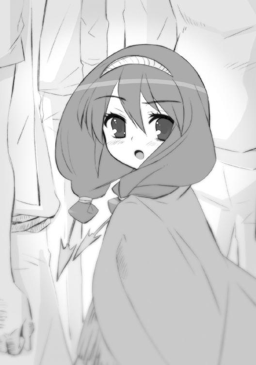

| 灼眼のシャナ 15 | |
| 高橋弥七郎 | |
| KADOKAWA / アスキー・メディアワークス (2013) | |
本書（電子版）に掲載されているコンテンツ（ソフトウェア／プログラム／データ／情報を含む）の著作権およびその他の権利は、すべて株式会社アスキー・メディアワークスおよび正当な権利を有する第三者に帰属しています。
法律の定めがある場合または権利者の明示的な承諾がある場合を除き、これらのコンテンツを複製・転載、改変・編集、翻案・翻訳、放送・出版、公衆送信（送信可能化を含む）・再配信、販売・頒布、貸与等に使用することはできません。
プロローグ
世の空を、人知れず彷徨う移動要塞『星黎殿』。
この世における〝紅世の徒〟最大級の集団［仮装舞踏会］の本拠地たる宝具──その奥底を、男と女が靴音も硬く、歩いている。
その右、
「今になって、どこへ案内する気だ？ 俺は、貴様ら［仮装舞踏会］の一員でもなければ、客分でもない、一時雇いの殺し屋だ。あの〝祭礼の蛇〟が仮の帰還を果たしたというのは、あくまでも貴様ら組織の中での話、儀礼の上から拝しはしても、僕として仕える気はない」
ブツブツと聞こえる最低限の声で呟いているのは、顔を巻き布で覆ったマントの男。
〝紅世の王〟、殺し屋〝壊刃〟サブラクである。
その左、
「そろそろ、おまえにも最低限以上のことを知ってもらおうと思ってね。安心しておくれな、無条件な服従や犠牲を強いる奉仕じゃあない、あくまで依頼する仕事の一環さ」
不透明な笑いで答えたのは、三眼の右目に眼帯、装飾品を多く身に纏う美女。
〝紅世の王〟、［仮装舞踏会］の参謀〝逆理の裁者〟ベルペオルである。
漆黒の水晶のような床は二人を正反対に映し、銀色の雫が両脇に列柱を描き、壁や天井は虚空に溶けて見えない。『星黎殿』内部の空間を組み替え、離れた場所と場所を繋ぎ合わせる移動簡略化装置『銀沙回廊』内の光景だった。
やがて、二人の前方に、銀色の粒が集い、大きな円を描く。
半秒、円の中に虚空とは異なる、複雑な機械の塊が覗いた。
ベルペオルが一歩、先に出て促す。
「さあ」
サブラクは、美女ゆえに不気味な誘いに無言のまま、銀色の輪を潜った。
その先に広がったものは、ひたすら機械、機械で占められた静謐の区画。
意味不明なパネルやランプ、パイプやコードを床にまで撒き散らした歪な機関等々が、時代年代形式規格、なにもかも混沌と、区画の広さを感じさせないほどに詰め込まれていた。
サブラクには、これら製作者の見当が付いている。
才を恃んでその場の欲求に生きる、身勝手にして不快極まりない〝紅世の王〟に違いなかった。その男は、現在も［仮装舞踏会］の客分として様々な陰謀に加担している。以前から請け負っている一連の大きな仕事も、その一つ──。
（ふん、その大きな仕事について、差し障りのない程度に教え、より深入りしたと感じさせることで足止めを謀る、か......いかにもこの女怪の考えそうなことだ......とはいえ、その謀りに乗ってやることに吝かではない......今の俺には、腰を据えて取り組むべきことがある）
それら内心に渦巻く思索や執念を、口先ではブツブツと意味のない言葉に変換して零す。
と、先導していたベルペオルが立ち止まった。上を振り仰いで、言う。
「着いたよ」
「！」
サブラクは、ここ......と言うより、これに、見覚えがあった。［仮装舞踏会］の盟主が降り立つ際、汚れて歪んだ板金鎧が磔状に架けられていたもの......『銀沙回廊』で、鎧の周囲だけを切り取るように現していた、何らかの装置だった。
全体は機械を織り合わせた柱状で、天井に枝を這わせ床に根を張っていることから、大樹のようにも見える。鎧が磔にされていたのは、柱の中ほど、樹の洞のように見える窪みで、繋がれていたパイプやコードが、そのまま放置され垂れ下がっていた。
根の部分が抱え込んでいる、やや崩れた鉄の球体に、サブラクは目を留める。
球体には、根のように表面を覆うパイプやコードの合間、細い覗き窓が開いており、奥には銀色の炎が、粘性の高い溶岩のようにドロドロと乱れ舞っていた。
サブラクは、この炎に得体の知れない意思の存在を感じ、当惑に僅か声を重くする。
「ふん......このカラクリが、未だ稼動していたとは意外だな。貴様の言う、最低限以上のこと、というのはつまり、ここから抜け出た、貴様らの盟主に関することか？」
ベルペオルは唇の端を釣り上げ、頷いた。
「そう、この装置は『吟詠炉』。我らが盟主の仮想意思総体を融合・編成するために作られた、坩堝のようなものだ。我らが盟主のご帰還以前なら、模擬実験的に会話することも可能だったんだがね。今は見ての通り、万一のときのための予備情報を保存する倉庫状態さ」
「なるほど、帰還後の抜け殻か。だからこそ、俺のような部外者を、こうして案内することもできる。そうして秘密を語り、暗に重圧をかける......全く、無駄のないことだ」
「ふふ、その程度で言いなりになる、おまえとも思えないが、どうだろうねえ」
彼女の笑いや言葉には、常に思わせぶりな含みがある。
まともに取り合うだけ無駄、とサブラクは勘繰りを切り上げ、もう一度、目の前にある奇怪な装置『吟詠炉』の奥を覗き込んだ。
不気味な銀色の乱れ舞いは、炎の一片一片が協調しようとせず、互いに押し合い圧し合いしているために起きている。それぞれ性質の違う欠片が数多く集められ、また無理矢理に混ぜ合わされることで、この一つの炎はできあがっていた。
背後から、ベルペオルが説明を続ける。
「おまえも知っている我々の『大命』には、実のところ三つの段階があってね。先ほど完遂されたのが、第一段階......つまり〝久遠の陥穽〟に放逐された盟主の意思を受信し、御身が思いの儘に動く代用体を精製する。その要となった装置が、この『吟詠炉』さ」
「代用体、か。貴様らが盟主に仕立て上げた、あの〝ミステス〟のことだな。俺が先日、奴に打ち込んだ自在式、『大命詩篇』とやらには、一体どのような効果があったのだ？」
サブラクの問いに、ベルペオルは少し考えてから、口を開いた。
「......順序立てて話すとしようか。我々は大命第一段階である代行体精製のため、まずその核となる仮装意思総体の構築に取り掛かった。これは、盟主の意思を受け取り再現する、いわば人間の真似をさせるため、人間を象った『人形』、その意思版と言えるかね。初期状態では空っぽで真っ白な『それ』を、一つ人格として遺漏なく機能させるためには、あらゆる感情のサンプルを採集し、融合・編成しておく必要があった。おまえも見た鎧、教授が『暴君』の『II』と呼んでいるアレが、その実作業に当たっていたわけだ」
三分の二の目が装置の中ほど、今や空になった洞を、指し示すように見上げる。
「『暴君II』は、強烈な感情の発生を感知したとき、当該地に分身を転移させる。感知した場所の周辺に在る人間を動力源に、本体の受信機を一時的に形成する、という仕組みさ。そうして作られた分身は、感情の主の願望を忠実に、まるで鏡に映し取ったかのように実行する......そうすることで『暴君II』は感情と、感情に伴う行動を、採集するのさ」
黙って聞くサブラクは、炉の奥に在る炎の成り立ちに、ようやくの見当をつけた。
「これら一連の採集行為を、我々は『鏡像転移』と呼んでいる。分身は呼び出した人間に、幸せで呼び出したのなら歓喜の、怒りで呼び出したのなら憤怒の姿を、各々幻視させているそうな......まさに、自身の鏡像というわけだ。そうして採集した人格の鏡像は、この『吟詠炉』に蓄積され、一つ意思を形成する材料となる......ここ数十年は、断片を組み合わせて我々と擬似的な会話を交わしたり、採集以外の目的で外界を彷徨ったりするまでに成長していたよ」
言って、ベルペオルはようやく、サブラクに視線を移した。
「二、三年ほど前にも、おまえに同じ依頼をしただろう？ あのとき標的へと打ち込んでもらった『大命詩篇』は、その『鏡像転移』の機能を改造したものなんだよ」
依頼を請け負った殺し屋は、不本意な仕事の結果を思い出し、不機嫌の色を濃くする。
「あの依頼は、可能ならば〝ミステス〟の捕獲、最低でも自在式の打ち込み、だったな。結局、捕捉に今年の春頃までかかった挙句、標的の同行者二人に妨害され、依頼もその最低を果たすのがやっと、俺自身も黒海に叩き落とされる、という失態を演じてしまったが......」
いやいや、とベルペオルは首を振った。
「最低で十分だったともさ。あの『大命詩篇』は、宝具に『暴君II』からの受信機能を備え付けるためのもの。打ち込まれた時点で、もう素体たる〝ミステス〟の蔵する宝具は、代行体の動力源『暴君』の『Ｉ』へと変化を始めていたんだからね。後は入れる器がどう変わろうとも、こちらにある本体『暴君II』から送られる人格鏡像を宝具へと転写し続け、いずれ来る『Ｉ』と『II』合一の下地を勝手に作ってゆくだけ」
「しかし、無作為転移によって、貴様らも一時宝具を見失っていたではないか。いかに特別製とはいえ、一旦手元から逃した〝ミステス〟を、そう容易く探せたとも思えんが」
サブラクの、疑問を伴った反論にも、ベルペオルは全く動じない。
「長い年月をかけてきた計画だ、特段焦るつもりもなかったんだよ。あの時点では、解析すべき『大命詩篇』が数多く残っていた。それを打ち込んで改良を行い、人格鏡像を採集する役割を持つ『暴君II』も我々の手に在った。完成へと近付けば、本来一つだった二つの『暴君』は自ずと引かれ合う。そうなるまでは、じっくり天の時を待つ算段だったんだよ」
そして彼女は、今年の半ば頃に起きた椿事を思い出して、笑う。
「幸い、早くに再発見の報を受けたがね」
仕事嫌いの将軍が、突如『星黎殿』を訪れ齎した吉報。十年百年の単位で発見を待つつもりだった代行体の核となる宝具が、ほんの数ヶ月で見つかったのだった。全てが急転直下、彼女らを大命の落着へと動かした瞬間だった。
「だからこそ、残った『大命詩篇』の解析を急ぎ、その結果完成した最後の式をおまえに託した。全ては早い遅い、というだけの話で、既に道は敷かれていたのさ」
ああ、と気が付いて補足する。
「しかし、さすがに〝彩飄〟フィレスが、仮装意思総体を過剰に活性化させたときは気を揉んだかもしれないね。もしあの状態が進行していたら、未だ盟主の意思を宿さない、断片的な集合人格だけの『暴君Ｉ』と『II』が不完全な合一を果たし、その場で破壊、あるいは拘束されていた可能性もあったわけだから。しかも、入れ物たる〝ミステス〟の主体が以前の宿主に入れ替わるような異変まで起こしている......まったく、世の中とはままならぬものよ」
「それは俺の与り知らぬ件だ、聞いたところで意味はない。それより、一度目の依頼の意味は分かった。俺の最初の質問、二度目の依頼で渡された方の式は、一体なんだったのだ」
「せっかちだねえ、今から触れるところだよ」
一度、吐息で笑ってから、ベルペオルは質問の答えに辿り着く。
「おまえに渡した式は、『暴君II』から『Ｉ』に転写し続けた無数の人格鏡像を一つに繋ぎ合わせ、仮装意思総体を完成させる......分かりやすく言えば〝久遠の陥穽〟に御座す我らが盟主の人格を代行体に宿らせる、起動スイッチのようなもの。全ての総仕上げの、一撃さ」
「なるほど、な。無作為転移など問題ではなく、とうに〝ミステス〟は掌の上にあり、本気で動けば即座に盟主を呼び戻す......なにもかもが思い通りになって、まこと重畳の限りだ」
サブラクの感嘆に見せかけた皮肉、と見せかけた感嘆を、しかし世に鬼謀の持ち主と恐れられている〝王〟は再びの、意外な言葉で受けた。
「そうでもないさ」
「？」
「本来の計画では、あの宝具は単なる動力源として取り出し、盟主の仮装意思総体は、あの鎧の『暴君』に宿すはずだった。それをこそ、合一と呼称していたのだから」
そういえば、と今さらのようにサブラクは気付く。
「なぜ貴様らは、わざわざトーチの形骸などを残したまま、本体と合一などさせたのだ。動力源となる宝具はともかく、〝ミステス〟であることに必要性があるとも思えん」
「仕様がない、主命だからね」
ベルペオルは、大きな歓喜を表して、笑っていた。
「人格鏡像の断片越しに意識を共有された盟主が、興味を抱かれたんだよ......あの『坂井悠二』なる存在にね。まったく......ああまったく、ままならぬ」
まるで、ままならないことをこそ、楽しむように。
「まあ、仮装意思総体は盟主の統制下にある。大命の遂行にはさほどの障りもあるまいよ。要は、あの宝具さえあればいいわけだからね」
最後にもう一つ、根本の疑問を、サブラクは口にする。
「あの宝具......そこまで拘るほどのものなのか。たしかに、人間を喰らう手間は省けるだろうが、それは持っていれば助かる程度の便利さであって、必須の条件ではなかろう？」
「普通に使えば、ね。だが我々［仮装舞踏会］はそのようには使わない。盟主のお望みが儘、自らを由とし、どこまでも心任せに、御手を振るわれるよう......取り計らうつもりだよ」
「馬鹿な、あれが恣に力を──」
言いかけて、サブラクは声を切った。一つの可能性に、気付いていた。
可能なのか、しかし、そうするために彼女らは営々と準備をしてきた。
ここに案内したベルペオルの真意が、今口にした秘密を明かすことによる圧倒的な優位を見せ付けるためだったことを、ようやく悟る。長口舌の殺し屋が、一言だけを、口にした。
「まさか」
ベルペオルは彼の、驚愕に見開かれた目に目を、いっぱいに近付けて、笑う。
「ああ、そのまさかが可能なのさ、我々が手に入れた宝具......『零時迷子』ならね」
１ 絶海の楽園
西暦一九〇一年──二十世紀最初の年。
絶海の太平洋上に、アメリカ合衆国の準州が浮かんでいる。
ハワイ諸島。
ほんの数年前、白人勢力によって先住民の王制が滅ぼされ、合衆国に組み込まれるまでの繋ぎとして『ハワイ共和国』の名を掲げている、熱帯の島々である。
東西約五百キロに渡って居並ぶ、これら主要八島の中ほどに、州都ホノルルを擁するオアフ島が存在する。この当時、恐らくは太平洋上で最も重要な島であり、街であり、港だった。
そのオアフ島南岸に海路を開くホノルル港に、男が一人、しゃがみこんでいた。
港に溢れる人と人の喧騒から離れた埠頭の端、所狭しと停泊する船と船の狭間に覗く水平線へと──正確には、その中に没しつつある同業者の一団を乗せた船影へと、名残を惜しむでもない気の抜けた目線を向けて、男は呟く。
「行ったな」
潮風の中、窮屈そうに足を折り曲げる、ひょろんとした体格。カウボーイハット、厚手の外套、中に覗くガンベルトは、いずれも旅塵塗れ......要するに、時代後れで場違いなガンマンスタイルなのだった。燦々と輝く常夏の日下には、全くそぐわない異装である。
帽子の下に潜む面相は、三十前後。肉をこそぎ取ったような鋭さが、無精髭と垂れ目によって相当分、減免されている。全体に、倦怠と弛緩の雰囲気があった。
と、零した呟きに、どこからともなく、気障ったらしい男の声での答えが返る。
「寄せては返す波の如く、行きて帰るが流離い人の運命......いいね」
しゃがんだ男は戸惑うでもなく、訊く。
「いいのか」
「......いいね」
再び、気障な声が返った。
男はそのまま口を閉じ、紺碧の波洗う埠頭に、間の抜けた沈黙が落ちる。
そうして、影を焼け付かせそうな陽光、足元のカッター船が古木の埠頭を擦る音、客船のデッキへと群がり上る物売らの歓声、濃密な緑の香りを混ぜた潮風──諸々賑やかな港町の風情に心地よく、あるいはなんとなくたゆたうこと数秒、
「てめえ、このガキ！」
「人の服を汚しといて、なんだその態度は！」
背後に、全く分かりきった怒声が上がった。
男は振り返らず、ただがっくりと頭を垂れる。
「あー」
「新しき地に、新しき出会い......それこそが、ああ、波乱の始まり」
「たまには、平穏の始まりが欲しいんだがな」
男は億劫そうに長身を立ち上がらせた。背後、いささか以上に鮮やかな緑が眩しい、ホノルル港の倉庫街、その前で揉める一団へと、ゆっくり歩み寄る。
（やっぱり）
誰かを囲んで輪を作っているのは、六人ほどの西洋系の男たち。
「今、なんて言いやがった!?」
「生意気なんだよ！」
いずれも大柄で筋骨隆々、荒くれの船員であることが一目で分かる。
男は溜め息をついて、帽子の鍔を指で摘み、深く下げた。
「なんであいつは、いつもいつも絡まれるんだ」
「それは、彼女が花ゆえに......摘むを求め欲させる美しさは、まさしく罪の花」
「そーいう表現するには、外見が十年、中身が百年ばかし足りん」
気障な声に力なく返しつつ、船員たちの輪の外に立つ。
その人垣越しに、
「だから、何度も言ってるでしょ！」

少し怒った、少女の声が響く。
「ぶつかってきたのはそっちなのに、どうして私が謝らなきゃいけないの!? 寄港に浮かれてお酒を飲み過ぎるから、人の前に倒れこんだりするんだわ！」
明晰な糾弾は、しかし当然、船員たちを激昂させる。
「この、ガキが偉そうに！」
「大人への口の利き方を教えてやる！」
幾人か、酒瓶を振り上げて叫ぶ背中に、男は気の抜けた声をかけた。
「もしもし」
全員が振り返り、邪魔者を睨みつける。
その輪の中心で、先の声を上げたらしい少女が、あっと驚き、すぐシュンとなった。
年の頃は十五、六。先の声が必死に虚勢を張っていたのだとすぐ分かる、ごくごく普通の女の子である。二つに纏めたブラウンの髪を肩から前に垂らしており、頑丈な旅拵えである点が男と同じ、小さくも真っ直ぐに立つ姿が男とは逆だった。
その少女を隠すように、リーダー格らしい大柄な船員が一人、詰め寄ってくる。
「ああん、なんだてめーは？」
潮風を追い払うような酒臭い息に、男は思わず顔を伏せた。
「その子は俺の連れでね。解放してもらえると、ありがたいんだが」
弱腰な（と彼らには見えた）その態度に、船員は調子付く。
「教育がなっちゃいねえな、オッサン。このガキ、俺のシャツにオレンジぶつけて汚しやがったんだ......見ろ」
言って、汚れが増えても大して変わりのなさそうな使い古しのシャツを引っ張り出した。見せたい汚れとは、どうやらシャツの裾にある、小さな濡れ染みのことであるらしい。
「な、ひでえだろ？ これから街に繰り出すってのに、一張羅が台無しよ」
「あなたが私の前によろけて──」
再び言おうとした少女を、
「キアラ」
男は名を呼んで黙らせた。帽子の鍔の下で、オレンジを始めとする果物の切り身が、船員たちの足元で踏み潰され、果肉と果汁をぶちまけているのを見て、
（もったいない）
と思う。着いた御当地の新鮮な果物を食べよう、と弟子に買いに行かせたのは自分だから、責任も自分にあるのだろう......そんな諦観の元、鍔の下から大柄な船員を見上げる。
「で、どうしろと？」
「なに、ちょいとばかし洗濯の代金をもらえりゃいいんだ」
「分かった、幾らだ？」
「師匠！」
あっさり折れた師匠に叫ぶ少女・キアラを、船員は振り向いて嘲笑する。
「へへ、てめーと違って、すいぶん物分かりがいいシショウじゃねーか」
「......」
悔しげに黙りこくる少女の姿に溜飲を下げた船員は、請求額について思案を始める。
「俺たちも強盗じゃねえからな、全財産よこせとまでは言わねえ。そうさな──」
「ヘイ、悪漢ども」
突然、
「君たちに恵んでやるような金は......ない」
新たな、やたらと気障ったらしい男の声が割って入った。
船員たちの前に立つ、師匠というらしい男から。
「え......？」
「い、今、おい」
「誰が喋った？」
戸惑いの視線を受ける、その師匠は、頭に手を当てて溜め息をついている。
と、また、
「聞こえなかったか？ 『犬に骨を投げてやれ』とは言うが、その骨すら過ぎた相手に金を恵んでやるなんて無意味にも程がある、と言ったのさ」
明らかな侮辱の言葉は、気障ったらしさで何倍にも増幅される。
「て、てめえ！」
「ぶっ殺してやる!!」
師匠は溜め息を最後まで吐いてから、制止の掌を前に出す。
「腹話術だ」
「反論を構成する文章力がなければ、腕力での抗議も受け付けている......かかって来るかい、陸に上がった人魚？」
「いや、今の腹話術はなし」
ヒラヒラと手を振る、その仕草に船員たちは堪忍袋を緒ごと爆発させた。
「ふっざけやがって!!」
「この野郎!!」
飛びかかる荒くれたちを、師匠は再びの溜め息と、
「ちょい待ち」
広げた掌で出迎えた。
瞬間、船員たちが静止する。
まるで首から下を石像に変えられたかのように、片足を上げたままの、バランスを取れるわけのない不自然な姿勢で、静止する。首だけが自由に動くのか、飛びかかった勢いのまま、一斉に前へと凄い速さで俯いたのは、全く奇観と言えた。
「ふごっ!?」
「な、なんだ」
「体が!?」
差し出した掌はそのままに、師匠は自分の腰、ガンベルトの辺りを見た。
「おい、ギゾー。こういうことは止めろ、って言ってるだろ」
「弟子の前で面目一つ保てないで、師匠を名乗るわけにもいかないだろう？ その片割れとして善処してみたのさ」
「師匠！」
言って、キアラが駆け寄ってくる。
「すいません。なんとか、お話で解決しようと思ったんですけど」
「あんな話し方で解決できるか」
呆れる師匠に、まず艶っぽい声で、
「力振るうのを止められてなきゃ、速攻で解決してたわよ」
続いて軽くはしゃぐように、
「そーそ、話した方がこじれるよーな連中も世の中には山ほどいるってのにさ！」
各々、色合いの違う女の声で不平があがった。
それらは、キアラが肩から前に回したお下げの先、左右に一つずつ結わえられた鏃の髪飾りから発せられたように聞こえる。
背後では男たちが、
「おい、てめーら！」
「さっきから何ごちゃごちゃ話してやがる！」
「くそっ、なにしやがった！」
「はなせ、ほどけ、畜生！」
まるで大道芸のパントマイムのように不自然な格好のまま騒いでいた。
師匠はそちらを一瞥して、
「ごめんな。全部夢だから、忘れてくれ」
差し出していた掌、その指を複雑に蠢かせる。
瞬間、
「ぐえっ！」「ごぼはっ!?」「んぐぁ！」「ぶへっ」「ほが!?」「んぶお!?」
六人は素早く、絡み合うように互いの鳩尾へと拳を綺麗に入れて、倒れこんだ。
「さすが、お見事」
「よく繰りがこんがらないわねー」
キアラの髪飾りから上がる能天気な喝采に、ギゾーと呼ばれた気障な声が軽く、
「師匠として、この程度で賞賛を受けるのは......なんとも面映いな」
逆に、師匠の方はウンザリして答える。
「お気楽でいいな、おまえたちは」
そこに、
「ええ、まったくです」
険しい声が、新たに割って入った。
師匠と弟子が目を向けた先、いつしか騒動を遠巻きに囲んでいた群集の中から、暑い中にも折り目正しくスーツを着込んだ青年が一人、歩み出ていた。
「探しましたよ、『鬼功の繰り手』サーレ・ハビヒツブルグ、それに『極光の射手』キアラ・トスカナ」
目線を巡らせて、叱責する。
「着いて早々、こんな騒ぎを起こすなんて......当地における複雑な情勢を、あなたたちはまるで分かっていない。それでも欧州から派遣されたフレイムヘイズですか！」
言われた師弟二人は、
「「ごめんなさい」」
声を合わせて謝った。
この世の日に陰に、人ならぬ者たちが跋扈している。
古き詩人が与えた彼らの総称を、〝紅世の徒〟という。
彼らは、同じく〝紅世〟と名づけられた〝歩いてゆけない隣〟から渡り来た異世界人であり、人間の持つ、〝存在の力〟というそこに在るための根源的な力を喰らうことで、〝徒〟たる自分自身を顕させ、自在法の名を持つ技法によって在り得ない不思議を現す。
彼らに〝存在の力〟を喰われた人間は、いなかったことになる。
その人間が得、失い、関わり、接するはずだった全ては、この欠落により、歪んだ。生まれ、決して埋め合わされない歪みは〝徒〟の跋扈に伴い、大きくなっていった。この世そのものにすら、大きな歪みを生じさせるほどに。
やがて〝紅世〟において、この歪みは双方の世界への大災厄に帰着する、との観念が広まり、危機感が高まり......最終的に、一部の〝王〟たちは、苦渋の対策に乗り出した。
同胞たる存在の乱獲者たちを討ち滅ぼす、という対策を。
その尖兵、あるいは道具となったのは、〝徒〟への復讐を誓った、人間たち。
己が全存在を、契約する〝王〟に捧げ、代償として異能の力を得た、復讐鬼たち。
彼らの総称を、フレイムヘイズという。
ホノルル市街には、未だ緑が多い。
草葺き屋根を頂く開放的な先住民の様式、隙間のない羽目板を備えた西洋の様式、いずれの家屋も、信じられないほどに大きな葉の陰に隠れ、柱に手すりに蔓を巻きつかせている。庭も大きく取られて、花はユリからゼラニウム、ドラセナにグラジオラスと色とりどりに咲き誇り、軒先を飾っていた。
数十年の時を費やし、西洋文明を積極的に受け入れて、なんとか一国の体裁を作ろうとしていたハワイ王家の努力は、大きな通りにおいては徐々に実を結びつつある。とはいえ、元の繁茂が尋常なものではない。緑の量は景観全体から見れば、やや削られた、という程度の減り具合だった。
その、日の輝きに彩りを撒き散らし、水と花の香りも濃く漂う街路を歩きながら、
「あんな公衆の面前で、安易に力を使われては困ります。一時の不思議で済ませ、人の語る間に伝説となる時代では、もうないのですよ？」
スーツの青年は、後に続く二人、だらけた師匠ことサーレ、および背筋を伸ばした少女ことキアラを糾弾していた。
「相手が相手ですから穏便にとは言いませんが、せめて異能の力を人前で見せない程度には気を遣っていただきたいものです」
青年は、ハリー・スミスと名乗った。
フレイムヘイズの情報交換・支援施設たる外界宿の構成員で、サーレとキアラのハワイにおける任務遂行の補佐を命ぜられた、ホノルル当地に駐在する人間の調査官である。
年齢は二十代半ば。ほっそりした体格で、この暑い中、見る側に汗を掻かせるようなスーツをきっちり身に着けている。まさに堅苦しさが服を着て歩いているような男だった。
容姿自体は、髪を後ろで纏める役者のような優男だったが、どうにも目付きに険がありすぎて、素直に感嘆を抱けない。若年の身で重大な任務を拝命して緊張しているのか、外界宿の構成員には少なくない、異能者フレイムヘイズへの屈折した感情を抱く人間なのか......いずれにせよ、言葉も態度も妙に手厳しい。
（ま、無理もないか）
諸事に感情の反発を持たないサーレは、事前に知らされた彼の境遇から、それらを平然と受け入れる。あえて知らん振りをして、異国情緒へと目線を流すことにした。
代わりに、彼と契約して異能の力を与える〝紅世の王〟、〝絢の羂挂〟ギゾーが答える。
「気にするほどのことじゃないだろう、ミスター・スミス。不可思議を見たとして、理解が及ばなければ、人は全てを曖昧に......そう、まろやかに溶かし込み、忘れてしまうものさ」
「今というデリケートな時期にそうされては困る、と言っているんです！」
即座の反論に、
「ごめんなさい！」
なぜかキアラが跳ねるように謝った。
また代わりに呑気な声を、
「そんなカリカリすることないじゃない」
「デリケートったって、今は海魔も追い出されて情勢も落ち着いてんでしょ？」
彼女と契約し異能の力を与える〝紅世の王〟、〝破暁の先駆〟ウートレンニャヤと〝夕暮の後塵〟ヴェチェールニャヤが、それぞれ髪飾りから返す。
しかし、馴れ馴れし問いへの答えは、あくまで堅苦しい。
「事は、そう単純ではないのです。もっと自覚を持ってください」
二十世紀を迎えた世界は、激動の時を迎えていた。
他地域に先んじて強大な工業力と機動力を得た欧州列強諸国が、怒涛のように世界中へと溢れ出し、日毎に地図を塗り替える『地球の大再編』とでも呼ぶべき事業を始めていたのである。
その中の、特に重要なポイントとして、ハワイ諸島は在った。
容易に人間の渡航を許さない、地球表面積の三分の一は占めようかという広大な海洋の中央に、全く奇跡のようにポツリと浮かぶ熱帯の楽園。
一七七八年のジェームズ・クック来航以来、当初は捕鯨船の補給基地として、昨今はサトウキビの一大生産地として、西洋文明圏からの緩やかな侵食に晒されていたこの地は、一八九八年の米西戦争を機に、是が非でもという強引さでアメリカ合衆国へと併呑された。スペイン領フィリピンを始めとする、太平洋西岸地域への中継拠点として、俄かに戦略的価値が高まったためである。
法的には未だハワイ共和国（地生えの王国は、戦争に先立つ一八九四年、白人勢力の武威と脅迫により転覆させられている）を名乗り、合衆国の保護を受ける『準州』の扱いだったが、実質は占領された植民地に他ならない。
そして、これら流動する世界情勢は──今までもそうであったように──同じ世界の中に跋扈する〝紅世の徒〟、彼らを追うフレイムヘイズにとっても大きな意味を持っていた。
両陣営はともに、概ね人間の交通路と到達範囲に沿って活動している。
これは〝徒〟に『人間を喰らって力を得る』という必然の理由が在るためだった。余程の理由がない限り、彼らが人も疎らな土地に関わりを持つことはない。また、そういう土地は往々にして、彼らの欲望を刺激する文明文化に乏しい。そして〝徒〟を追う存在であるフレイムヘイズも、必然の結果として、同じ地域、交通路を行き来することとなる。
太平洋地域も、その傾向の例外ではなかった。
西洋人がこの大海に乗り出すことで初めて、〝徒〟は喰らう、フレイムヘイズは討滅する、常の行動を開始した。
実はクック来航時点で、無双の絶海に守られたハワイには〝徒〟が我が世の夏を謳歌するには十分な、三十万からの先住民が無垢のまま存在していたが、どういうわけかフレイムヘイズ陣営の調べた限りでは、当地で〝徒〟が活動した痕跡は発見されなかった。
惹かれる文明を見出せず渡り来なかったのか、既に現れてこの地を後にしたのか──先住民の九割近くが、西洋人の持ち込んだ病原菌で斃れ、口伝（彼らは岩刻以外の文字を持たなかった）の多くも失われたため、現在に至るも真相は不明である。
ともあれ、西洋人たちの来航繁くなるとともに、〝徒〟やフレイムヘイズも、このハワイ航路を利用し、またハワイそのものにも目的を求めるようになった。
なにしろ、南洋諸島へと遠回りせず、直進して太平洋を横断する船が必ず通る交通の要衝である。海で人を喰らう海魔（とはいえ彼らも、ハワイ航路の確立以前の太平洋では沿岸を荒らすのみだった）を例外とした、ほぼ全ての〝徒〟は、人多く活気の生まれ始めた島を支点に、世界を股にかけることを欲した。逆にフレイムヘイズは、この地点を押さえて彼らの動きに掣肘をかけようとした。
結果として、全く当たり前に、この地は両陣営にとって争いの巷となった。
そんなハワイに、フレイムヘイズ陣営が橋頭堡たる外界宿を開くことに成功したのは、ほんの半世紀ほど前のことである。幾十度にも渡る熾烈な争奪戦の末、彼らは気配隠蔽の結界を展開する宝具『テッセラ』の設置に成功したのだった。
不可知の隠れ家にして迎撃の基地を得た討ち手らは、この太平洋回りの航路から〝徒〟をほぼ一掃し、新しい世界の要路に平穏を齎した......しかし、
「今回の任務のため派遣されたあなたたちなら、お分かりでしょう」
先を行くハリーが、通りの突き当たりで足を止めた。
パンチボール・クレーターも程近い、周囲には真新しい西洋風の家屋も目立つホノルルの一等地。その脇道、少し奥にある空き地が、彼らの目的地だった。
「スミス、さん？」
一歩先を壁で塞がれたような急停止を、キアラは不審げに見上げた。
サーレが、ハリーに並んで覗き込む。
「ここか」
横にある青年の表情は、できるだけ見ないようにした。
追って目線を転じたキアラは、
「あ......」
その先に、フレイムヘイズとして見慣れたものを認め、意味するところの状況を理解した。
花をも混ぜた下草の生い茂る空き地。
元は拓かれた場所であったことが、一目で分かる。生えているのが草花だけで、根を張り大きな葉を広げる木がないためである。そして、サーレが自分の目で確かめようと案内させたものが、色鮮やかな草花に垣間見え、また埋もれていた。
朽ち果てた梁、溶け落ちたガラス片、焦げ砕けた煉瓦......堆い場所は、燃え滓の名残か。
「ここに、外界宿があったんですね」
過去に起きた襲撃事件の痕跡を、キアラは観察する。
ハリーは頷き、
「ええ。ホノルル港からも近く、市街でも注目されない脇道の奥、しかし栄える場所と適度に密接している、良い立地でしょう？」
言う中で、在りし日へと思いを馳せていた。
説明を受けたキアラは、改めて辺りを見回す。
「新築は隣り合わせの数件だけで、表通りの方は古い建物がそのまま残ってる......この地点がピンポイントに狙われた、つまり外界宿の在り処が襲撃側の〝徒〟に知られていた、という推測は正しいと見るべきでしょうか」
「え、ええ」
少女が示した意外な鋭さに、ハリーは少し驚いた。人に自覚を求めておきながら、自分の方が感傷的になっていたことを恥じ、改めて居住まいを正す。
「流石に、よくお分かりですね」
「ふふ、私たちのキアラを、舐めてもらっちゃ困るのよね」
「これでも、ドレル・クーベリック直々の命令を受けてやって来たんだから」
自分たちの契約者を誇らしげに自慢するウートレンニャヤとヴェチェールニャヤ......お下げの先にある二つの髪飾りを、照れて頬を赤く染めたキアラが掌で押さえた。
「もう、やめてよ」
「まったくだ。クーベリック爺さんから依頼されたのは俺たちで、お前たちの方はついで。俺の弟子だったから一緒に来たってだけのことだ」
サーレが身も蓋もない事実を言って、キアラをまたシュンとさせた。
「ん、ああ、すまん」
気付いて謝った契約者に、ギゾーがフォローを入れる。
「気にしちゃいけないよ、僕たちのキアラ・トスカナ。分かっているだろう？ この男は嫌味や嘲弄から言ったわけじゃない......ただ、口下手でデリカシーに欠けているだけなんだ」
その通り、と自覚しているサーレは、反論をしない。ただ、付け加える。
「まあそれに、ミスター・スミスの手前、あんまり騒ぐのもどうかと思ったんでな」
「えっ？」
振り向いたキアラに、ハリーは少し困った風な笑顔を作った。
「私は、別に......」
戸惑う弟子を措いて、サーレが帽子の先を摘んで頭を下げる。
「すまん。構成員のことをベラベラ喋るわけにも行かなかったんでな。こいつには現地についてから説明するつもりだったんだが......かえって間が悪くなったか」
「いえ、分かります。事実ですし、気にされることもありません。なんなら今、私から説明しても......」
困り顔に、悲しみの色が差した。
なんのことか分からないキアラに、ギゾーが告げる。
「ミスター・ハリー・スミスは、このホノルル外界宿ただ一人の生き残り......ということで分かってもらえるかな？」
「あっ」
「外界宿の仲間たちも、一緒に働いていた妹も......まあ、そういうことです。あの日、私だけが、島外に出ていて、助かったんです」
ハリーの言葉を受けたキアラは、自分の浮ついた態度に今さらの自己嫌悪を覚え、先の数倍は萎れた。
その垂れ下がった髪の先から（契約者と同じく初耳だった）、叱咤が二つ。
「この程度のことで、いちいち落ち込んでどうするの」
「同情も度が過ぎると嫌味になる、って常識は覚えといた方がいいわよー」
「......」
キアラは恐る恐る、顔を上げた。
ハリーは困り顔に気遣いの笑みを加え、しかし同情を拒絶する確固とした声で返す。
「気にされることは、本当にありません。六年も前のことですし......それに、初めてのことでもないのです。外界宿の構成員だった私の母も、フレイムヘイズと〝徒〟のハワイ争奪が本格的になる前に、喰われて死んでいます」
「！」
あまりに平然と出た言葉に、フレイムヘイズの少女は絶句した。
対して、語りかける青年の声は、あくまで平淡である。
「そうして今度は、妹や仲間も......私は『この世の本当のこと』に関わり過ぎたせいで、人間の身でありながら、皆の死を忘れていません。でも、それで良かったと思っています」
が、彼の平淡さは情動の薄さから来るものではない。むしろ渦巻く執念や怒り、溢れる悲しみや悔しさを隠す、意志の固さの表れだった。それは、見る者にも伝わっていた。
「皆と共に在ったここを、私の手で再建するという......六年間、待ちに待った任務に就くことができたのですから。ミス・トスカナも、どうか協力してください」
サーレも自分から言える事実を、少女に示す。
「そういうことだ。俺も、命令を受けた経緯はともかく、戦力としてはちゃんと当てにしてんだ、頼むぜ」
「......はい！ 頑張りまぃ痛っ!?」
勢いよく背を伸ばして、二人に向き直ろうとしたキアラは、石を踵に引っ掛けて転んだ。
ハリーの苦笑と、サーレの溜め息が、その場に漏れる。
そう、遠く欧州から派遣された、彼ら二人のフレイムヘイズの任務とは、このホノルルに外界宿を再び設置することなのだった。
今より六年を遡る一八九五年。
この地の人間社会を、一つの小事変が襲った。
一部の不隠分子が、ハワイ共和国臨時政府に対し、武装蜂起を敢行したのである。彼らは、白人勢力が転覆させた旧王制への復古を求め、ハワイ人のためのハワイを取り戻そうと立ち上がった、いわゆる王制派だった。
彼らの兵力が寡少だったこともあり、蜂起自体は二週間程で鎮圧されたが（この結果、事件への関与の嫌疑を受けたリリウオカラニ女王は廃位へと追い込まれ、ハワイ王国は完全に滅亡する）、その間、州都ホノルルは政庁一帯がバリケードで封鎖され、各所で散発的な市街戦も繰り広げられるという、騒乱状態に陥った。
そんな、市民が息を詰めて家に潜み、船舶の運航業務も滞った、情報的空白の時節を狙いすましたかのように──この地の人間ではない者の集団を、一つの大事変が襲った。
即ち、ホノルル外界宿の殲滅。
前兆や経過を目撃した者もおらず、急を知らせる船も動かなかった十日余の内に、一体なにが起きたのか......知る者はフレイムヘイズ側にはいない。
ただ一人、騒乱の長期化に備え、他島での代用運航視察のため外出していたハリー・スミスだけが、帰ったその日、その場所で、外界宿に詰めていたフレイムヘイズ、妹、施設の中核たる宝具『テッセラ』、全てが焼け跡だけを残し消え失せた光景を、目の当たりにした。
これら結果を聞かされた誰もが、唯一つの結論に辿り着いていた。
〝紅世の徒〟の襲撃により殲滅された。それ以外は、考えられない。
欧州の地で、世界の外界宿を主導する地歩を固めつつあった幕僚団『クーベリックのオーケストラ』は、自らに課した職責に従い、事の対処へと動き出した。
残された結果から懸念された案件は、大きく二つ。
一つは、他地域における外界宿の位置や連絡法などの機密漏れ。
もう一つは、不可知結界を発生させる宝具『テッセラ』の行方。
前者については、あくまで念のためという警戒が布かれた程度で、さほど問題視されていない。機密の根幹たる外界宿の所在は、書面など他者に見られる恐れのある物体には記さず、案内し案内される経験のみで伝え合う、という古来の慣習に則っていたためである。
一方、後者については、同様ではない。この、掌大のガラス製正十二面体は、一定範囲内の気配を遮断する結界を発生させる、外界宿の核である。結界を作るためには一つ場所に据えておかねばならず、力も断続的に供給し続ける必要がある性質上、放埒を旨とする〝徒〟が使うには不向きな宝具ではあったが、過去にこれを利用した陰謀がなかったわけではない。回収は早急に行われるべきだった。
以上の理由から、まずはハワイ情勢を回復、然る後、この追跡調査・可能ならば奪還、という復合的な任務を帯びたフレイムヘイズが幾人も、ホノルルへと上陸した。
ところが、話はここからこじれる。
当時、太平洋に縄張りを移しつつあった海魔たちが、この機に乗じてハワイ諸島を〝徒〟の勢力圏に組み入れ、周辺航路を新たな人喰いの漁場にせんと、大挙して押し寄せたのである。主要八島への襲撃は元より、航路上での待ち伏せ、果ては太平洋東西沿岸での主要港での妨害工作までが一斉に行われ、外界宿の関係無関係を問わない被害が、討ち手に多く出た。
遅まきながら事態の深刻さに気付いた『クーベリックのオーケストラ』は、同じく外界宿の間で大きな影響力を持っていた顔役たち『モンテヴェルディのコーロ』と結束、対応に乗り出した。一連の戦いは、太平洋の海魔を東西から虱潰しに叩く作業に始まり、『輝爍の撒き手』レベッカ・リードを頭とする奪還部隊のハワイ諸島制圧で最大の山場を迎えた（海魔の襲来時も現地ハワイから支援に当たっていたハリー・スミスは、この一団の到着とともに、切望していた任務の下準備に入ることを許されている）。
そうしてようやく、ホノルル外界宿再設置の決定が正式に下り、奪還部隊と入れ替わりにサーレとキアラが派遣されてきた、というのが事のあらましである。
時は既に二十世紀。
太平洋一面を舞台とした丸六年に渡る戦いの中で、遂に奪われた『テッセラ』の行方に関する情報は得られないままだった。
その、自身にとっては悲願とも言えるはずの任務に、欧州がフレイムヘイズを二人しか回さなかったことを、ハリーは不満に思っているようだった。
「戦力といえば......本当に派遣されてきたのはお二方だけなのですか？ ホノルルへの外界宿再設置は、明らかな重要任務だというのに」
単純に、二人という戦力的に甚だ心許ない数への不安も見え隠れしている。
「ああ、俺たちだけだ」
サーレは頓着なく断言した。
「そう、ですか」
力なく答えてハリーは、転んだキアラを助け起こす。
「す、すいません」
「いえ」
彼の笑顔は、先と同じく内心を隠せない。今は、不安が覗いていた。直前までいたレベッカら奪還部隊の強面ぶりと大人数を見ていて、引き継いだのが二人だけ、しかも増援がないという状況である。不満不安も仕様がないといえた。
「数年をかけた戦いの、最後の仕上げだというのに、こんなことで良いのでしょうか。私のような若輩者一人に事前調査を任されていた時から、おかしいとは思っていたのですが」
サーレは、草の中に埋もれる焼け跡を靴先で軽く蹴って言う。
「そうガッカリすることもないだろ。海魔はそもそも絶対数が少ない。統率力のある大物をぶっ倒した今なら、俺たち二人でも十分捌ける」
「それに、ミスター・スミス。君の有能ぶりは、欧州から派遣される際に聞いているよ？ 親子二代、外界宿で働いてる将来有望な若者としてね......今度の抜擢はむしろ当然、君の手腕が既に一区域を任せられるほどの評価を得ている、というだけのことさ」
その腰元からギゾーが、歯の浮くような気取った口調で続けた。
もちろんハリーは、そんな賛辞一つで愁眉を開いたりはしない。
彼は、自身の置かれた立場を知悉している。外界宿の構成員だった母や妹が〝徒〟に喰われて死んだ、という負の経歴があってこそ、造反や私利を謀る懸念を欧州に持たれず、外界宿再設置の実務も一任されている、という立場を。
だからこそ、家族の死を武器に、家族のいた場所を再建する、という苦渋の内心を隠そうと努めている。その口が語るのも、受けた任務に対する明晰な主張のみである。
「しかし、その海魔の攻撃が、あれだけ大規模に、一つ戦略的意図の元で行われた、という事実については、未だ碌な検証もなされていません。奪われた『テッセラ』の行方も分かっていない状況で、ここを手薄にするなんて......せめて、奪還部隊の駐留を延期して、事態の沈静化を見守るか、再調査を行う等の方策を採るべきだったのでは」
（なるほど、やり手という評判に間違いはないようだ）
思って、サーレは帽子の鍔先を引いて目線を隠す。
「それは確かに、ああまったく、あんたの言うとおりなんだが......本当のところ、『クーベリックのオーケストラ』はハワイを軽視してるわけじゃ、全然ないんだ」
「どういうことです？」
訝るハリーを背に、外界宿の跡地へと踏み込んだ。
草が、彼の長い足の膝まで生い茂っている。行き止まりの空き地でありながらうらぶれた印象を受けないのは、そこここに季節を問わない明るい色の花々が咲き誇っているためである。
その花をも踏んで、サーレは空き地の中ほどに進む。
「今は、まだアメリカの方が怖い。だから警戒も人員も、そっちに重点を置く。それだけのことなんだよ」
「アメリカ......例の、内乱ですか」
内乱。
それは十九世紀後期、アメリカにおいて勃発した、フレイムヘイズにとって固有名を付けることをすら恥じた、あるいは忌んだ、懊悩の戦い。
古来、この漠々たる広野のバランスは、『大地の四神』と呼ばれる強力な、ネイティブ・アメリカンのフレイムヘイズによって守られていた。自らを神の戦士と呼び、同胞と大地を守り続けてきた彼らは、しかし十八世紀になって俄かに激しさを増した白人の国家的侵略に晒されることとなった。
やがて、独立戦争を経て誕生したアメリカ合衆国（彼らにとっては、侵略者同士の内輪揉めと名義換えに過ぎない）が、他人の土地を開拓するという不気味な膨張を始め、同胞らを圧殺し始めたとき、彼らは一つの考えを持った。
すなわち、討ち手としての禁を破ること──人間社会への公的・大々的な干渉である。
世界のバランスを守る異能者・フレイムヘイズとしては、持ってはならない考えだった。
もちろん彼らも、同胞と平穏に暮らしている限りは、そのような道義に外れた行いなど考えたりはしなかったはずである。しかし、思い悩む彼らの目の前で、太古から守り育ててきた同胞と大地が、無惨に潰され、無道に奪われ続けた。白人の蚕食は止まらなかった。
彼らは各々、『大地の四神』たる身として最善と思える行動を取っていた。一人は粘り強く双方の仲を取り持とうとし、一人は幾度も同胞らの無謀な撃発を抑え、一人は共に泣いて、一人は静観を続けた。が、やはり、白人の蚕食は止まらなかった。
彼らの心情は、蚕食を前に、少しずつ、討ち手としての禁を破る方向へと、傾き始めた。
彼ら四人の力なら、白人を駆逐すること、その国家を覆滅することは、可能なのである。
他の地からやってきた討ち手らは必死に世の理を説き、これを思い止まらせようとした。
が、程なく破局は来た。
とある事件、アメリカに殺される者からの、一つの祈りという形で。
「ああ神様、助けてください。もう人間にできることはありません」
誰も非難し得ない、しかし決して座視し得ない、懊悩の戦いが始まった。
アメリカ合衆国の完全破壊......これを異能者フレイムヘイズの手で成し遂げる。
起った者らにとって、これは同胞を苦しめる世界への、隠忍自重の末の、反撃だった。
既に『大地の四神』は誰も、契約した〝紅世の王〟たちでさえ、罪悪感など持ち合わせてはいなかった。持ち合わせているわけが、なかった。
彼らの前身はいずれも、天賦の才を厳しい修行によって磨き上げ〝存在の力〟への適性を高めてから契約した、古代の神官たちである。永きに渡る戦歴の裏付けを以って振るわれる強大な力は、まさに壮烈を極めた。
ただ、不幸中の幸いと言うべきか。この、フレイムヘイズにとって前代未聞の事変は、かねてから予想され、また備えられてもいた。調停する側とされる側、当事者の誰もが、いずれこうなる、止められない、と理解していたからである。
それでも、この北米を舞台にした戦いは長引いた。
正義を掲げ怪物的な力を振るう四人、および共鳴して起ったフレイムヘイズの一団（ネイティブ・アメリカンだけではなかった）と、それを止めるために集まった世界中の強力な討ち手たちが、真っ向からぶつかったためである。ただ暴走を止めるための戦い、誰も望んでいない戦いは──〝徒〟から嘲笑と揶揄を受けながら──十数年もの長きに渡って続いた。
結果として、『大地の四神』は矛を収めた。
彼らが起った事情とも、各地の戦況とも関係のない、全く別次元の理由から。
つまり、当事者同士の戦いによって世界のバランスを過度に乱し、崩した......この本末転倒な事象に加え、〝徒〟側の動きが、混乱に乗じて悪謀を張り巡らせる、討ち手の手薄になった地域で暴れ回る等、無視できない規模の活発さを見せ始めたためだった。
敗北ではなく妥協からの休戦として、人間社会への干渉を、彼らは止めた。
そして、あるいは当然のこととして、彼らは討ち手としての存在意義を見失った。
同胞の命と大地を苗床に発展する世界を、これまでのように守ってゆく熱意をなくしたのである。一人の調律師が提案した、外界宿で同業のフレイムヘイズらの世話をする、という道は、彼らにとってほとんど唯一の選択肢だったと言える。
南北アメリカ大陸における主要四都市の強力な、決して動かない重鎮として、彼ら『大地の四神』は、今もそこに在る。彼らが守ってきた大地で未だ響き続ける同胞らの悲鳴に、血涙断腸の思いで身を焦がしながら。
炭化して半ば土に混じっている焼け跡を、サーレはさら細かく踏み砕いてゆく。
「あの『大地の四神』たちを、ようやっと外界宿の管理者に押し込んで、まだ十数年しか過ぎてない。アメリカで今も続いてることを見て、いつまた連中が立ち上がらないか、欧州では冷や冷やしながら見守ってるのさ。あんたも、レベッカあたりから聞いてるだろ？」
「ええ、まあ......」
ハリーは言葉を濁した。ハワイという地に在る白人、しかもフレイムヘイズという共通絶対の立ち位置を持たない彼にとって、内乱は全く耳の痛い話である。
「でも、なるほど......欧州の本音がそうなら、一旦制圧した場所に精鋭を置いておく理由はありませんね」
「そういうこと」
サーレは肩をすくめると、体を返して空き地を出る。
「ま、こっちはやることをやるだけさ。とりあえず、近辺に〝徒〟がいないかどうか確かめて、なくなった『テッセラ』の手がかりを探って、それからようやく俺たちの持ってきた方の『テッセラ』で外界宿を建て直す......一体いつまでかかるやら」
「気長に頑張りましょう」
張り切って言うキアラに溜め息と共に返す、
「おまえはいつも前向きでうらやま──」
途中で、彼は不意に視線を正面、遠くにやった。
キアラとハリーもそれを追って後ろを振り返る。
「師匠？」
「どうかしましたか？」
細い脇道の正面には、表通りを行き交う雑多な人々が垣間見えた。立ち止まって、こちらを注視しているような人影は特に見当たらない。
サーレは改めて、周りに注意を払う。
「いや、誰かの視線を感じたような......通りがかりが覗いただけ、か？」
ハリーは、二人のフレイムヘイズの方へと僅か、歩を下げた。
「まさか、本当に〝徒〟が潜んで？」
緊張する調査官を安心させるように、二人で一人の『鬼功の繰り手』は言う。
「レベッカやフリーダーが、みすみす取り逃がしてるとも思えんが」
「仮に、こんな状況になるまで潜んでるほど慎重な〝徒〟がいたとしたら、今になって軽々しく足のつくような真似をするだろうか......答えは、否だと思うね」
とりあえず、とサーレが続けた。
「ミスター・スミス、まずは俺たちが世話になる宿に案内してくれ。まさか、ここにテント張れとは言わないよな？」
ハリーは手帳を取り出して、手配を確認する。
「は、ええ、もちろんです。あまり近場だと危険かと思いましたので、王宮を挟んだ反対側に取らせてもらいました」
と、そこに、
「テントはテントで楽しいですよ？」
キアラが見当はずれなことを言って、一同に小さな笑いを呼んだ。
そして、脇道からの死角、表通りの物陰に身を隠していたドレスの女が、足早に歩き去る。
二人が案内されたのは、元ハワイ王宮であったイオラニ宮殿から東、ホノルルで豪華さを示すステータスである二階建ての、とあるホテルだった。
ワイキキも程近いが、快適な良地というわけではない。当時のそこは養魚池とタロイモ畑を一面に広げる湿地帯だった。ここに運河を掘り、サンフランシスコから運んだ白砂で埋め立ててビーチへと造成する工事が完了するのは、一九二〇年代も終わりの頃である。
白人の宣教師によって、サーフィンが不道徳な遊びの烙印を捺され禁止されていたこともあり、二階のベランダから遠く細く見える海岸線には、本当の金持ちが道楽の一環として水遊びをする姿がまばらに見られる程度だった。
それでも、キアラは初めて見る緑と水のあまりに鮮やか過ぎる対照に、目を見張った。旅装も解かないまま、蔦の絡む手すりの上に身を乗り出し、感嘆の声を上げる。
「きれい」
「夜には蚊帳がないと眠れないほど虫も来ますけどね」
背後、奥行きの広いベランダの入り口で、その蚊帳を用意しているハリーが、地元で育った者らしいあけすけさで、その感激をぶち壊した。
「......」
「どうかされましたか？」
キアラは振り向かずに髪をいじって、小声で尋ねる。
「......やっぱり、まだ少し怒ってますか？」
「えっ、──ああ」
ようやくハリーは、先の外界宿跡でのことを、まだ少女が思い煩っていると知った。気遣いは嬉しかったが、少し困ってしまうところもある。
「そんなこと、気になんかしてませんよ。どうせ職務上、ミス・トスカナにも説明するはずだった事項ですから。その、さっきのことは、単に私が無粋というだけのことで」
「......本当に？」
恐々と振り返る少女に、強く頷いて見せる。
「ええ」
「よかった」
安堵する契約者に、左右の髪飾りから呆れ声が漏れた。
「だから気にしすぎなのよ」
「言ったでしょ、そーいうのは嫌味になるって」
「そうですよ」
ハリーはキッパリと言い切る。
「もうこの話は終わりにして、お互い任務に専念しましょう」
「はい」
キアラもキッパリと答えた。
そうして、ふと気付く。さっきの話があったせいか、それとも任務の報告や手続きが一段落したせいか、彼の物腰からは、最初に見せていた剣呑さが抜け落ちていた。今のハリー・スミスは、どこにでもいる勤勉そうな青年としか見えない。
その彼は、さて、とベッド脇に蚊帳の紐を纏めて置く。
「夜になったら、明かりをつける前に、この紐の先のフックを上の金具に付けてください。たぶん、窓を開けないと暑くて眠れないでしょうから」
「はい」
返事がスッキリきれいなのは、この少女の特徴だった。
ハリーも思わず微笑む。微笑んで、外界宿の経歴も長い者として、「フレイムヘイズとは思えない」という率直な感想、しかし、人ではなくなった者に対する禁句を呑み込む。代わりの質問で、微笑みの意味を隠した。
「ミスター・ハビヒツブルグの部屋にも蚊帳を用意しようと思ったのですが、鍵が閉まってましたね。どこに行かれたんでしょう？」
キアラとしては決まりきった答えを返す。
「たぶん、下のラウンジでお酒を飲んでると思います」
「いつものことなのよ。ある所では必ずガブガブ、馬みたいに飲んじゃう」
「飲んでるのにちーっとも騒がない、辛気臭い飲み方なのよねー、キャハハッ！」
お下げ左右の髪飾りから、ウートレンニャヤとヴェチェールニャヤが、それぞれ静動反対の口調で笑った。
「駄目でしょ、他所様の前で」
「いえ、平明な事情の報告は、これから一緒に仕事をする者として、ありがたく参考にさせて頂きますよ」
ハリーも嫌味なく答える。ベランダに出て、キアラの横、手すりにもたれて正面の緑と青に目をやった。自身を育んだ楽天地を見つめるにしては、少々視線が険しい。
「ミスター・ハビヒツブルグとは、長いのですか？」
「はい。弟子になったのは、契約してすぐだから......もう十年近くになります」
少し驚いた顔をされることに、キアラはもう慣れていた。
「だから、これでも二十代なんですよ」
「中身は契約したての頃と、あんま変わらないけどね」
「あんま、って言うか、全然かも！」
すかさず入る二つの茶々に、もう、と怒る仕草は確かに見た目相応のものである。
「──『フレイムヘイズの精神的な成長は人間より遅いのが普通だから、アンタは特別珍しい例じゃない』ってレベッカさんも言ってたから、これでいいの！」
「それにしても、師匠と弟子という関係は珍しいですね」
「はい。私も他に見たことはありません。でも、外界宿に保護されたとき、皆から言われたんです。サーレ・ハビヒツブルグの下で学びなさい、って」
明るい少女の表情に、当時を思い起こしたためか、刹那の翳が過ぎった。
ハリーはあえて見ない振りをして、話を続ける。
「ああ見えて、大きな武功も片手の指で数えられない、強力なフレイムヘイズであると聞いています。やはりそういう強者の下で学ぶのが、上達の最短距離なんでしょうね」
「そういうことも、あります」
キアラは少し、不思議な言い回しをした。小さな唇が、小さな声を、紡ぐ。
「でも本当は──」
「......」
ふとハリーは、日差しに煌く緑の中、遠くを見やる少女、その向こうに、冷たく張り詰めたなにかが過ぎったように感じた。思いか声かに遠く呼ばれた、なにかが。
「......ミス・トスカナ、着替えも用意しておきましたから、シャワーでも使ってください。フレイムヘイズでも、女性なら水浴びは大好きだと、ミス・リードに教わりました」
感じたものを誤魔化すように言った彼に、
「はい。ありがとうございます。私のことはキアラって呼んでください」
キアラは過ぎったものを吹き飛ばして明るく笑い、身を翻した。
ハリーも残りの報告を済ませ、退出する。
「それでは、キアラさん。お互いの職務柄、客室係は不要ということになっていますので、細かい用があれば私に申し付けてください」
「はい。色々とどうも、......」
今度は先とは違う、無邪気な伺いの視線が向けられていた。
思わず足を止めて、ハリーは尋ねる。
「なにか？」
「......『私もハリーでいいですよ』、って言ってくれないんですね」
「ああ。いえ、私はどうも、あまり親し過ぎる関係が苦手でして。すいません」
言って、青年は困った風に頭を掻いた。
キアラも拘らず、明るく返す。
「お嫌なら、いいです。しばらくの間、お世話になります、ミスター・ハリー・スミス」
「こちらこそ」
二人は軽く、握手と微笑みを交わした。
キアラは、退出したハリーが、鍵をかける音を聞き取れないくらい遠くに立ち去るのを待った。もし鍵をかける音が彼に聞こえてしまったら、彼を早く閉め出したかったように思われてしまう。ついでに、自分が今からシャワーに入るのを宣言しているようで恥ずかしい、ということもあった。
「よし！」
フレイムヘイズの聴覚を無駄に使って、その確認を終えるや鍵をかける。
脱衣スペースに駆け込むと、子供のように衣服をポンポン脱ぎ捨て、お下げを解いた。広がるしなやかな髪を後ろで緩く纏め、そこに二つの髪飾りを結ぶ。女同士ということで、シャワーを浴びるときも一緒に入るようにしているのだった。
そうして、ややの覚悟を持って浴室の扉を開け、ホッとする。
「ちゃんとイギリス式だ、良かった」
浴室はホテルの格に見合った設備で、水道や据付けのシャワー、バスタブも付いていた。
「ホント、良かったわ」
「これで汚い水桶だけだったら、素っ裸で文句言いに行きかねないものねー」
からかうウートレンニャヤとヴェチェールニャヤに、
「そんなことしませんよーだ」
口を尖らせて言い、蛇口を捻る。お湯が出るまでしばらくかかったが、そもそも気温が高いので、ぬるま湯でも良かった。高い場所から落ちてくる（恐らくは）清潔な水は、ただ浴びるだけで気持ちがいい。
なだらかな凹凸に温水を伝わす中、なんとなく髪飾りへと訊く。
「しばらく、ここに滞在することになるのかな」
「さあ？」
「なんでよ？」
訊き返されて、言い澱む。
「ん......定住したら、修行とかもスムーズに進むかな、って思った」
「そんなの、本人の心がけ次第でしょ」
「できるときはできる、できないときはできない、そーいうもんよ」
キアラは桜色に染まった頬を膨らませた。
（いい加減なことばっかり）
彼女らは、本当の戦いにならないと、ちっとも真面目に教えてくれない。
腹立ち紛れに、体をガシガシと乱暴に擦った。そんなことをしても、フレイムヘイズたるの身からは存在しない垢など落ちないし、本人の実感をなぞる以上の汗も出ないが、綺麗になるという気分は、文字通りの精神衛生にも良い。
やがて擦るのにも飽きた体を、湯気に透かしてジッと眺める。温かな水滴が、次々と火照った肌の上を滑っては落ち、流れては消えてゆく。

「......」
もう契約から十年ほどになるというのに、ちっとも大きくならない。それもフレイムヘイズとしては当たり前のことだったが、少女としては、いつまで経っても未熟な自分の在り様を見せ付けられているようで、辛かった。
成長の願望が、口から零れる。
「......早く、歌いたいな」
「そうなったら、独り立ちじゃないの？」
「お師匠様と離れて生きていけるのかしらねー、私たちのキアラは」
「......」
願う先と痛い所は重なっていた。全くの図星を突かれて、胸が痛む。
「......んんー」
なんとなく腹が立って、結わえた髪飾りごと頭を乱暴にワシャワシャと掻き回した。
「ちょ、なにすんのよ！」
「目、目が回るー」
あはは、と明るくも切ない声が湯気の中に響いた。
階下、サーレは一人、ラウンジの片隅で酒を呷っていた。
呷ると言っても、豪快にガブ飲みしているわけではない。そこそこ上物らしいウイスキーをロックグラスに注いではチビチビと飲む、という形である。そのチビチビを延々続けて、早くも一本、ボトルを空けているが、顔には赤味の差す気配すら見えなかった。
旅装は未だ解いていない。つまり、暑苦しい上に小汚い、場違いな上に古臭い、ガンマンスタイルのままである。ハリー言うところによる「上の下」級のホテルに滞在するような客には到底見えなかった。
ラウンジにいる他の客は、やっかみと蔑み、少量の恐れを混ぜた目線をチラチラと送りつつ、彼のいる片隅だけを雰囲気から切り離して、遠巻きに各々の談笑に耽っている。
港町の例に漏れず、ハワイにおいてもホテルは社交の場として機能していた。場所によって等級の上下こそあれ、安酒場も高級ホテルも、外来者を現地人が迎える、という地勢の凝縮された一面が、何処とも同じように広がっている。
富裕な旅客は元より、海軍の軍人、船長らしき老荘の男、下僕つきの農園主らしい夫婦、静養中らしいラフな格好の紳士、東洋系も、何処かの顔役と見える老人三人組から忙しく立ち働く客室係まで......人種に身分、種々入り混じってはゴシップや商談、ハワイの気候の素晴らしさ等に会話の花を咲かせ、あるいは命令と返事の遣り取りを行っている。
サーレはそれらに特段、聞き耳を立てているわけではない。ただ飲んで、自分の思索を深めて行く。アルコールの回った、目を瞑れば失神するのではないかというほどの状態、ただでさえ低いテンションのさらに下がった平静な感覚が、彼は好きなのだった。
余計なことをなにもせず、この中でじっくり考える。
任務についてだけではない。
他の様々な、弟子の扱いやハリー・スミス調査官の印象、外界宿跡地の光景、向けられた何者かの目線、今のハワイ情勢、見聞したホノルル市外の様子、港湾の活気、果てはホテルの調度やテーブルに挿された花の色、飲んでいる酒の味からグラスの感触まで......出鱈目に思考を流して、行動するために必要な、今の自分が置かれた立場と与えられた条件を、感覚として体に染みこませてゆく。酒は、そのためのツールなのだった。
結果として呟く言葉は、いつも同じ。
「さて、なにが出るかな」
暗闇に、光の穴が一つ、空いていた。
その中から、足音を硬く鳴らして人影が進み出る。
強すぎる光を背負った影は、三つ。
その一つ、中央に在る背の高い影が、声を空洞に響かせて、言う。
「なるほど、『輝爍の撒き手』たちに代わる、新しいフレイムヘイズですか」
「ああ」
もう一つ、がっしりした影が短く答えた。
背の高い影は、歩みも声も颯爽と、先を行く。
「確かに、予想通りの少数ですが、外界宿の再設置を担っている以上、先の制圧部隊とは違って、本格的な調査を任務に含んでいることも、また予定通りでしょうね」
最後の一つ、低い影が、ひょこひょこと跳ねながら、すかさず受けた。
「では、海魔どもの、騒ぎのときのように、息を潜め、てやり過ごす、手は」
背の高い影は、笑いを声に含む。
「使えませんね。我々としては、もう後少し、僅かな日数を稼ぐことさえできればいい......とはいえ自由に動き回らせて、偶然当たりでも引き当てられたりしてはかないません。まずは一つ、挨拶に出向くとしましょう」
その笑いが、沸き立つような歓喜を帯びた。
「へい、それでは、作業にかかっている『黒妖犬』どもを、かき集めます」
「いえ、不要です」
「へい？」
状況を理解していない低い影を、背の高い影は教え諭す。
「最初の接触は、ただの重要な挨拶に過ぎません。我々がこの地にいるという事実を、いつもと変わらない我々であるという演出を、見せ付けるだけでよいのです」
「へい、それでは、いって、らっしゃいま──」
「あなたも来るのです」
「へい？」
背の高い影は、再び言いなおす。
「あなたも、来るのです」
「へえ？」
低い影は素っ頓狂な声で返した。
怒るでもなく、背の高い影は粘り強く説明する。
「〝燐子〟以外に、せめて二人はいないと、我々がいるという相手への顕示にならないではありませんか」
「へい、でも、オレ......『黒妖犬』どもが、いないと......」
「では、少数を伴うことにしましょう。仕上げの作業に従事している以外、雑用分の数匹を集めてください」
「へい、お頭」
また数歩、足音を鳴らしてから、背の高い影は付け加える。
「同志ドゥーグ」
「へい」
「私のことは、お頭ではなく同志と呼びなさい。何度言わせれば、気が済むのですか？」
返事が、少し遅れた。
「......へい、でも、二百年ばかし、ずっと、お頭だったもんで......」
「昔は昔、今は今です」
「へい、同志サラカエル」
そうしてやっと二人の会話が終わり、闇に足音だけが残る。いつの間にか、三つの影の後ろに新たな影が幾つもモゾモゾと蠢き続いていた。
と、準備が整ったのを見計らったかのように、がっしりした影が、短く問う。
「今回、俺の出番はなしか」
「ええ、同志クロード。本格的に仕掛けるのは、次です」
「了解した。引き続き、この地の警護に当たる」
答えて、がっしりした影は再び黙り込んだ。
程なく前方に、出口たる明かりが近付く。
どこまでも濃密な、夕日の赤。
「では、行きましょう、同志ドゥーグ」
「へい、おか──同志サラカエル」
その赤の中へと、まず二つ、続いて幾つかの影が、飛び立った。
ラウンジ片隅のテーブルには、大きな地図が広げられていた。
ハワイ諸島の概観は、最大の島・ハワイ島を起点に、主要八島がおおよそ北西に向かって連なり、そこからさらに胡麻粒のような北西ハワイ諸島へと一直線に伸びるという、所謂『ハワイアン・チェーン』である。
その主要八島を大写しにした地図の上に身を乗り出し、先の制圧部隊による戦いから、改めて説明し直しているのはハリーである。
「──という状況のできたことから、ミス・リードは海魔との決戦に先立って、橋頭堡たるこのオアフ島を虱潰しに探索、当地の安全を確保しています」
地図の周りには、作り物のように派手な色合いの魚の切り身や、眩しく明るい緑のサラダを満載した皿が並んでいる。それらより、なお多彩なのは果物で、大皿にバナナやグァバ、ライムにオレンジ等々、どちらがメインディッシュか分からないほどの山盛りに積まれていた。
食べ物には手を伸ばさず、ハリーは説明を続ける。
「そして、主戦場となったのは、比較的島が密集して内海を形成しているモロカイ、ラナイ、マウイ、カホオラヴェの四島。さすがに、この戦場の範囲内に『テッセラ』を展開し、出入りしている〝徒〟がいて気付かないわけがありません」
一方、二人のフレイムヘイズは、それぞれ遠慮する風もなく、皿から食べ物を取っては食べていた。サーレは、未だ呷る酒の摘みとして魚の切り身を時折口に放り込む、キアラは、珍しい果物を美味しそうに頬張る、という対照的な姿である。
ハリーは気分を害するでもなく淡々と、自分の職務を果たす。
「以上のことから、『テッセラ』が外部に運び出されることなく、不可知結界を張ることで隠されていると仮定した場合、その可能性のある地は、残り三島......東のハワイ島か、西のカウアイ島、ニイハウ島のいずれかである、と推測されます」
「ハワイ諸島の両端か。レベッカの奴、戦いに必要な最低限の仕事しかしなかったな？」
不平ではなく、事実として認識する風に、サーレは言った。未だ崩さないガンマンスタイルが、もう一口、ウイスキーを呷る。既にボトルは三本、空になっていた。
ギゾーが軽く瀟洒に笑いかける。
「我先にと戦いたがる者は数多あっても、調査などという迂遠な行為を求める者はない......フレイムヘイズとは、やはり戦士たるが本分なのさ」
その言葉には、自分たちが変わり者である、という自嘲も含まれていた。
キアラは特に意見もないので、オレンジの皮を剥くことに専念している。
代わりに、お下げ左右の髪飾りから言う、
「じゃ、明日から早速、島巡り、ってわけね」
「結界に近づきゃ、向こうから出て来るでしょーね、ワクワクしちゃう！」
ウートレンニャヤとヴェチェールニャヤに、ハリーは頷いて見せた。
「ええ、ご存知のように『テッセラ』は一旦動かすと結界の効力を失い、再起動までの時間も相当かかる......つまり、頻繁に場所を移動させることは不可能な宝具です。本当にハワイ諸島に残されているのなら、地道な足を使った捜査で、十分に発見は可能でしょう」
「頑張りましょう！ っわ!?」
キアラが、きれいに剥けたオレンジを手にしたまま力んで、その頬に飛沫を飛ばした。柑橘系の酸味が鼻に付く。
ハリーが笑い、
「ええ、頑張りましょう。それで、船便を使うか、自力で──」
言いかけた瞬間、
背後の窓から、恐ろしい明度を持つ光が、まるで紛い物の夜明けのように差し込んだ。
光の色は、太陽には在り得ない、碧玉。
数秒遅れて、壮絶な爆音が建物を震わせる。
「ぅあっ!?」
思わずテーブルに突っ伏したハリーは、逆の行動を取った二人を見上げることになった。
「封絶もなしとは、今時珍しい無作法者だな」
「可能性が一つ、消えた、か。既に『テッセラ』は運び出され、調査は平和に何事もなく、ホノルル外界宿は再開して終了......それは最も望ましく、ゆえに最も得難い」
いつもと同じように、ただいつの間にか立つ『鬼功の繰り手』サーレ・ハビヒツブルグ。
「いきなり気配が現れた......どうして？」
「腕利きの自在師なら、気配を誤魔化す方法はそれなりにあるわ」
「ま、せーぜー実地に学んで、オーロラの高みを目指して頂戴、私たちのキアラ」
いつもの明るさを消し、真剣な面持ちで立ち上がった『極光の射手』キアラ・トスカナ。
二人のフレイムヘイズを。
サーレは帽子の鍔を深く引いて目線を隠し、ハリーに言い置く。
「あんたは隠れてろ」
「参りましょうか、お嬢さん方」
ギゾーが誘うように言い、
「はい！」
「いい声上げて──」
「──ジャンッジャン歌うわよ!!」
三人が答えて、ドアが開け放たれる。
ラウンジにいた誰もが、差し込んだ碧玉の輝きに目を焼かれて視界を失い、
やがてハリーは、討ち手らが戦いの場へと去ったことを知った。
港が、船が、燃えていた。
在り得ない、碧玉を炎と立ち上らせて。
船員は海に飛び込み、作業員は埠頭を逃げ惑い、旅客は退路に殺到する。沸き返る喧騒と踏み躙られた荷、あるいは人......夜の炎は狂乱と恐慌に拍車をかけていた。さらに、不気味な火の粉は倉庫の屋根や積荷、船を燻らせ、新たな火の手を各所で上げてゆく。
この悪夢の中、聞く耳を持つ持たないに関わりなく、全ての人間を、声が叩く。
「人間よ、聞こえはしても、耳を貸さないでしょう」
高らかで誇らしげな、妙なる男の声が。
「人間よ、知ったとしても、解せはしないでしょう」
誰も見ていない場所に、その男は立っていた。
「まずは、我らが存在を、彫り付けるほどに聞きなさい！ 刻み付けるように知りなさい！」
燃え盛る帆船のマスト、炎を上げて崩れ落ちんとする十字架にも見える、頂に。
「なれば、世界は通じるでしょう！ しかして、共に歩めるでしょう！」
炎の頂に在って、しかし燃えることのない、その姿。
妖艶な美貌を陽炎に揺らめかす、長身の男だった。足元まで波打ち届くような髪、法服とも見える大きく豪奢な衣、二つをともに靡かせて、炎の頂に確固と立っていた。
「今は聞かずとも彫り付けなさい、今は解せずとも刻みつけなさい、我が教示を!!」
男の足元、背を丸めて従う黒く大きな犬が、まるで人のように後ろ足で立ち上がる。爛々と光る真円の両眼を見開き、炎の中に風を集めて胸郭に溜め、一気に吐き出した。
「──バオオオオオオオオオオオオオオオオオオオ──ンッ!!」
この、波すら乱す咆哮に打たれた誰もが痺れ、海中にもがくこと、炎から逃れること、行動の自由全てを奪われる。まるで、傾聴を命に代えてでも強制するように。
痺れが広がるに連れ、人々の瞳に一つの姿が浮かび上がる。
碧玉に燃え盛るマストの頂に立つ、異様な男の姿が。
誰も耳を塞げない。誰も目を逸らせない。
その男は、ポン、と犬の頭に手を置いて行為を労うと、再び炎の頂で両手を差し上げ、衣を髪を大きく広げ、熱風に靡かせる。
「我らは〝紅世の徒〟──この世を人間と紡ぐ来訪者!!」
と、波打つ髪に幾十、百と、細く光が差した。
男に差す後光、あるいは自身で照らす明かりのように、幾つもの光が差した。
「我らが力に触れて彫り付けなさい。我らが理に触れて刻み付けなさい」
それらが、一斉に開く。
無数の、縦に裂けた目として。
髪の広がる中に開く、無数の目が、人々を凝視した。
「知られざる隣人〝紅世の徒〟の存在を、認識するために!!」
溺れつつも、焼かれつつも、倒れて折り重なりつつも、人々は見せ付けられる。寸分の意味も掴めない、しかし、知らないものを知る高揚感を煽られる、教示の中で。
「我らは名乗ります......超常の力を振るい、以って迷妄を啓き、世を革める団......」
いつしか男の語る言葉、その絶頂が来ることの予感と期待を、髪の間に無数開いた目から流し込まれるように、人々は抱かされていた。
「その名は──」
瞬間、
炎が一面、上に突き抜けた。
燃え盛る碧玉とは違う──菫色の炎が。
それは、大地に海面に奇怪な火線による紋章を残し、辺り一円に陽炎のドームを立ち上らせて、ホノルル港全域を覆ってゆく。人々は硬直以上の静止状態となり、波も埠頭を打つ最中で固まる。碧玉の炎だけが一瞬の遅滞を見せて、またすぐ燃え始めた。
これら、突如として眼前に展開された異界の光景を、男は忌々しげに見やる。
〝存在の力〟によって引き起こされる不思議──自在法の一つ、
正反対の性質に拠る天才二人が編み出した、新しく簡便無比な業、
内包された全てを世の人々の認識から隔離してしまう、因果孤立空間、
数十年近来という短期間で〝徒〟とフレイムヘイズの間に広まった隠蔽の結界、
その帯びたる長所特性ゆえに、男らにとっては許し難い、世界を停滞させる行いの証、
『封絶』。
と、男の耳に、気の抜けた声が届く。
「知ってるよ。［革正団］、だろう？」
「！」
自身が高らかに告げようとしていた集団の名を、力なく先取りされて、男は不快げに眉根を寄せた。声のあった方角へと、髪の間に開いた無数の目ともども、視線を巡らせる。
燃え盛る倉庫の屋根に、静止しない人影が在る。
それは、散歩に出たように軽く立つ、一人のガンマン。
男は、場違いにしか見えない登場へと、丁重に挨拶する。
「よくぞお越しくださいました......『鬼功の繰り手』サーレ・ハビヒツブルグ、ですね？」
名を呼ばれたガンマン・サーレは、常と全く同じローテンションで答える。
「ああ、よくご存知だ。まさか、隠れてたのがお前たちだったとはな。ハワイくんだりまで漕ぎ出して布教とは、まったくマメなことだ」
「布教、という表現には、いささか以上に異論もありますが......まあ、先駆者とは理解されぬもの、その言も今は、甘んじて受けておきましょう」
男は笑って、宮廷の儀礼とも見える優雅さで、胸に右手を当て、
「我が名は〝征遼の〟サラカエル。そして彼は──」
次に、自分の足元に在る、黒く大きな犬に掌を向けた。
「──同志〝吠狗首〟ドゥーグ......共に、栄えある［革正団］の一員です」
「グルルルルルゥ......」
言葉ではなく、直立・猫背の身を低く伏せて唸りを上げる〝徒〟に、サーレは僅か目をやって、また戻す。とりあえず主犯と話をしなくては始まらない。
「栄えある、か。こっちには、最近、質の悪い与太話を吹いては暴れ回ってる連中がいる、てな感じで伝わってるんだがね」
燃えるマストの上に立つ男・サラカエルは苦笑で答えた。
「ふふ......あらゆる誤解は身の不徳、おいおい正させて頂くとしましょう。今日のところは、ご挨拶だけでも受けて頂ければ重畳」
（流石に、この程度の安い挑発には乗らないか）
口先では馬鹿にし、またそのように語るフレイムヘイズがいたことも事実だったが、サーレの本心としては、必ずしも彼らを侮っているわけではない。
（なんといっても、質が悪い、ってのは本当のことだからな）
思いつつ、周囲の炎の中から揺らめく影が忍び寄っていることを感じる。
「じゃあ、そのご挨拶とやらを受けよぅ──」
言い終えるのも待たず、彼を挟むように両脇の炎を、二つの影が突き破った。飛びかかるそれらは、犬の面を着けた毛むくじゃらの怪物。
「──っか！」
構わず言葉を締めたサーレが、いつの間にか両腕を顔の前で交差させている。
ガンマンの早撃ちとも見える、神速の動作だった。
しかし、左右の手に握られている物は、銃ではない。
木片を十字型に組んだ、マリオネットの操具だった。
糸の結わえられていないこれらこそ、彼に異能の力を与える〝紅世の王〟、〝絢の羂挂〟ギゾーの意思を表出させる二丁一組の神器『レンゲ』と『ザイテ』。二つの操具からは、不可視の力で編まれた糸が幾つも伸びて、今立ち上がった人形の全身に繋がっている。
マストの上に在るサラカエルも思わず、
「ほう......」
現出した妙技に、嘆声を漏らしていた。
両脇から不意を突いて飛びかからせたドゥーグの〝燐子〟である『黒妖犬』、その鉤爪を生やした太い腕を、燃える屋根の建材でできた操り人形が受け止め、捕らえていたのである。炎は、彼の支配を受けた瞬間に碧玉から菫色に変色していた。
「それが噂に高い『鬼功の繰り手』の人形芝居ですか」
「オ、オレの『黒妖犬』」
ドゥーグが真円の目を、より大きく見開く。
彼の〝燐子〟『黒妖犬』は、犬の面と毛皮で覆った二足歩行の岩石獣人である。それが、燃え滓同然の建材を芯にしただけの炎に受け止められていた......どころか、捕らえられた腕を砕き潰されつつあった。
サラカエルは、脅威を認識しつつも笑う。
「あらゆるものを繋ぎ止め、操る......なかなか面白い大道芸ですね」
「どうも。それじゃ次は」
サーレの短く緩んだ返答に、
「お手玉など如何かな!?」
ギゾーの明るく鋭い叫びが連なり、二丁の操具に絡んだ指が玄妙の捌きを見せた。
その繰りに合わせ、両脇の人形が捕らえていた『黒妖犬』を投擲する。
恐ろしいまでの速度と正確な狙いで、自分たちの許に飛んでくる岩の塊たる〝燐子〟を、サラカエルは掌を向けて受け止めようとした。
と、
「!?」
飛んでくる『黒妖犬』の中心が弾け、より強く速い力の塊が突き進んでくる。
否、飛ばした『黒妖犬』をブラインドに、背後から新たな攻撃が射ち放たれたのだった。
僅かな驚きを持って、サラカエルは封絶の空に逃れる。もたつくドゥーグの首を掴んでゆくことも忘れない。逃れた風も去らぬ間に、その攻撃がマストの頂を爆砕した。
「なるほど......確かに、お美しい」
目に鮮やかなその輝きを、サラカエルは賛辞で迎えた。
言う間にも、次々と彼らを狙って光が発射される。
「お、お頭」
「同志と呼びなさい」
二人は、と言うよりドゥーグを掴んで飛ぶサラカエルは、射線を読んで巧みに攻撃を回避してゆく。封絶が形作る陽炎のドーム内を、まるで幽鬼のように妖しくも軽やかに舞う。
その後を追って幾つも射ち放たれる光は、フレイムヘイズが攻撃に多用する破壊の力の具現化、炎の迸りである炎弾ではない。まるで光の幕が細く棚引き押し寄せるような、不可思議な力だった。緑から黄色、また赤や紫へと鮮やかに色を偏移させ、また突然直線に伸びて獲物に迫るそれは、まるで極小のオーロラ。
射ち放った者は、サーレの僅か後方、低い物見櫓の上に立っていた。
同じ光からなる弓を構えて正面を見据える、『極光の射手』キアラ・トスカナである。
鏃の髪飾りは今、光の弓の両端となって左手に展開している。これこそ彼女と契約し、異能の力を与える〝紅世の王〟、〝破暁の先駆〟ウートレンニャヤと〝夕暮の後塵〟ヴェチェールニャヤの意思を表出させる神器『ゾリャー』だった。
「ただ射ちっ放しにするだけじゃ炎弾と同じだ、って言ってるでしょ？」
「極光の複雑な棚引きを、弾道全体に及ぼせるようコントロールするのよ！」
「はい！」
契約した〝紅世の王〟らに小気味良く返すと、キアラは光の弓の握りに手を当て、新たな光の矢を作り出す。まるで実体の弓がそこに在るように、力いっぱい弓弦を引き絞り、放つ。
光の矢は極光の棚引きを航跡と引きながら、宙に在るサラカエルとドゥーグに向かった。弾道は、未だ緩い曲線を描くのみで、歴戦の強者であれば回避も容易い。
まさにその強者であるサラカエルは笑い、
「これが『極光の射手』......こちらも噂どおりの美しさ」
文字通り、矢継ぎ早に繰り出される射撃を避ける。
「ですが、未だ荒い。この程度の攻撃で、私たちを討てるとお思いですか？」
「まさかな」
サーレの声と共に、
「む!?」
「う、お!!」
サラカエルとドゥーグを、巨大な掌が襲った。
メキメキと音を立てて動くそれは、先まで彼らが立っていたマストを芯とした、菫色の炎からなる炎の巨人。先に『黒妖犬』を受け止め投げ飛ばしたものとは、大きさも操る力の規模も桁違いだった。
（今の射撃は、この巨大な人形を作るための時間稼ぎでしたか......なるほど、容易い相手ではありませんね）
と［革正団］の男は、今度は余裕ではなく充実の笑みを浮かべる。
（やはり実際に一当てしなければ、手強さとは実感できないもの）
サーレは未だ倉庫の上に在り、両手の操具で巨人を操っている。サイズが大きくとも彼にはそれほどの負担はないようだった。炎の巨人は縦横に、腕のみならず、足をも振るって、二人を追い回す。その大雑把な動作の隙には、
「連射で威力は弱まらないわよ、ガンガン射なさい」
「むしろ速射すればするだけ弾幕ができる、体で覚えて！」
「はい！」
キアラの抜け目ない援護射撃があった。
フレイムヘイズらの息の合った連携攻撃をようやっとかわす中、
（結構......戦いのタイプ、長所と短所、見るべきものは全て、見せて頂きました）
サラカエルは、これから戦う相手の実力に大よその見切りを付け、手に掴んだ、頼りない同志へと声をかける。
「同志ドゥーグ、そろそろ良いでしょう」
「へ、へい」
言われたドゥーグは、残りの〝燐子〟『黒妖犬』に指示を送る。
それを受けての襲撃は、
「キアラ！」
「来たわよ!!」
手強そうなサーレではなく、未熟と見えるキアラに敢行された。
「はい！」
返事をする下、彼女の立つ物見櫓を、立ち上がった影と見える『黒妖犬』が数体、猛烈な速さで駆け登る。勢いを落とさず一気に、櫓の上にいるフレイムヘイズへと殺到した。
それらの鋭い爪は、誰もいない櫓の空気を虚しく切り、
「──」
戸惑う襲撃者らを、頭上からの極光の輝きが眩しく照らす。
「──ぃやっ！」
既に中空で射撃体勢を整えていたキアラは、真下へと強力な一撃を、遠慮なく射ち放った。
一撃、数体の『黒妖犬』が櫓ごと、美麗な光の中で撃砕される、
（今です）
サラカエルは巨人の足元で燃える船へと飛び込んだ。キアラへの攻撃は、彼女を倒すためのものではない。炎の巨人への援護射撃を途切れさせる、牽制が目的だった。
「ん？」
警戒し、巨人の歩を下げたサーレの瞳を、爆発の閃光が焼く。
内側から受けた壮絶な威力で粉々に飛び散った船、その無数の破片が宙で止まり、
《お見事でした、『鬼功の繰り手』、それに『極光の射手』》
サラカエルの言葉を響かせる炎の目を同じく無数、その表面に浮かび上がらせた。
《お二方への挨拶も済んだことですし、今日はこの辺りでお暇いたします》
「威勢のいい演説の割に弱腰なことだ」
サーレ再びの挑発にも、当然乗ってはこない。
《そう焦ることもないでしょう。しばらくは美しき島々の風情でも楽しみながら、お待ちください。私どもも、相応のお土産を用意してから、また伺います》
言って、宙で無数舞っていた目が、戦いが始まってから全く位置を変えていない──どころか半歩たりと動いていなかったサーレを、一斉にねめつけた。
《それでは、ごきげんよう》
僅か、笑みの形を作ってから、全ての破片が再び爆発した。
「ちっ」
「師匠！」
船が弾けたときの数倍はある強烈な爆発に、炎の巨人、周囲の船、崩れかけた倉庫、埠頭の一部、静止した人々、そして二人のフレイムヘイズ、全てが巻き込まれ、吹き飛ばされた。
ただ一人、封絶の端で様子を窺っていたドレスの女を除いて。
２ 艱禍の理想
［革正団］。
ここ数十年の近時、急速に〝紅世の徒〟の間で囁かれるようになった組織名である。
囁かれる、というのは、この組織には明確な首魁や組織としての実体が見当たらない、という奇怪な現象による。世界各地の〝徒〟が、散発的に自らをその一員と名乗るようになっていった、ということでは前代未聞の組織──正確には集団と言うべきか──だった。
それが、どうやら一つの思想によってのみ繋がっているらしい、ということをフレイムヘイズらが知ったとき、既にその支持者・共鳴者は相当な数にまで膨らんでいた。
彼らの思想、それは『人の世に自分たちの存在を知らしめる』という一点に集約される。
それまでの〝徒〟は、己の欲望だけを見、それ以外を余事と考えていた。フレイムヘイズとの戦いも、世間に自分の存在を知られることも、余事の大きな一つ。欲望本来の成就に差し障りが出るものは、極力排除し、回避する。当然のことだった。
が、その当然のことが、［革正団］の出現で、大転換する。
長くこの世に在り、共に暮らす住人として（人間には迷惑な隣人でしかないが）、消えることなく明らかな形で加わりたい......自己を直接的に利する次元のものではない、この不可思議な欲求に、〝徒〟たちは突然の傾倒を始めたのだった。
市民革命で鼓吹された権利思想からの感化。国民国家群の成立とともに広まった、民族への帰属意識やナショナリズムの盛り上がりによる、〝徒〟という『種の自覚』への触発。新しくはアメリカの奴隷廃止宣言によって受けた衝撃。また、広まり始めた因果孤立空間を形成する自在法『封絶』による存在隠蔽への反発運動としての一面。果てはこの世に流れ来た導きの神による啓示等々、思想成立の要因については諸説あって定まらない。
ともあれ、人間社会の発展が、同じ精神を持つ〝徒〟たちに憧れを抱かせ、その中に入ることを熱望させた、というのが諸相の根源的な理由と分析された。同時期に、本性のままの姿で顕現する者の数が激減し、人化の自在法で人間と同じ姿を取る者が反比例的に増えたのも、この心理的潮流と無関係ではなかっただろう。
この運動が、欧州全土で一斉に湧き上がる、『封絶を張らないまま、人間の眼前で自己の存在を宣布する戦争』──戦う相手はフレイムヘイズなどという小さなものではない、人間社会である──へと規模を拡大するまでには、これよりさらに三十年の熟成を必要とする。
二十世紀初頭という時期においては、未だ〝征遼の〟サラカエル等、急進的な〝紅世の王〟らが潜在的な同調者を増やしている、という段階である。
その、はずだった。
巨大な空洞を緩く取り巻いて続く、とてつもなく径の大きな螺旋階段。
等間隔に強烈な光を撒き散らすアーク灯が配置された場所以外は、空間の大きさに呑まれて薄暗い。代わりに、騒音が遠く、空間の奥底から響いていた。動き回る気配、果てなく繰り返される槌音、断続的な稼動、蒸気の噴出や破裂......と、
そこに足りなかった唯一つのもの、人の声が、空洞を渡り響いた。
「いくらなんでも、度が過ぎているのではありませんか？」
ところどころ木製と鉄製、いい加減に継ぎ足されたそこを降りつつ、女は糾弾する。
「封絶しないまま、ホノルル港を焼き払うなんて。港湾施設は五分の一が壊滅状態となり、犠牲者も相当な数に上っています。この世に〝紅世の徒〟が在ることを示し、人間との『明白な関係』を持つことを目指しているのなら、なぜこのような惨い真似を──」
「やはり、分かってもらえていなかったのですね」
その前を悠然と下りて行く〝征遼の〟サラカエルが、振り向きもせずに返した。今は髪の間に開く無数の目もない、物静かな聖職者の佇まいである。
「分かっていない、とは、どういうことでしょう？」
人間である女の、恐る恐る探るような声に、彼は自分の進む道程の長さを感じた。できるだけ冷静に、高圧的にならないように、理解の至らない者への説明を始める。
「我々［革正団］の行動意図が、です。貴女は今まで、連絡役だった同志クロードとしか直接的に顔を合わせていなかったからでしょうか......我々［革正団］のことを、ただ人と仲良く手を取り合おうと考えている夢想家、それとも適当な口実で世界を荒らす化け物、程度にしか思われていないのではありませんか？」
「──い、いえ、そのようなことは、決して！」
強い否定の口調が、かえって内心の肯定を裏付けてしまう。
「私はただ、初めて直接お会いできたこの機会に、改めてお考えを伺いたかった、だけで」
無理に後を続けても言い訳にしかならない、それを女自身も理解した、と察した上で、サラカエルは笑う。
「正直に言って頂いて構いませんよ。理解されないことには、慣れています。それに、時が至った今、その理解を深めて頂こうと貴女をお招きしたのですから、むしろ疑問や不審に対するのは望むところです」
「申し訳......ありません」
声が、先の糾弾の勢いも忘れ、消沈した。
が、会話そのものへの熱意が薄れてしまった、その屈従の反応に、かえってサラカエルは閉口する。せっかくの会談も、こんなに萎えた心根で行われては意味がなかった。彼は、対等に接し接される者以外に用はないのである。
「貴女が会話を遠慮するのは、私が〝紅世の王〟だからですか？」
「えっ？」
唐突な質問に、女は思わず顔を上げた。
「下手なことを口にすれば命が危ない、と思っているから、正直な話ができないのですか？」
「そ、それは」
サラカエルはやはり振り向かず、話を続ける。
「だとしたら、悲しいことです。追従や迎合の精神に遮られて、率直な意見交換ができないのであれば、お招きした甲斐もありません」
「......」
「私には、力を背景にお世辞を強要する趣味はありませんし、今、貴女を喰らう気もありません。もちろん、強大な妨害者が現れれば、立ち向かいます。この世で生きるため、食すべきは食します。しかし、今はそのときではない。私の言葉の意味を、お分かり頂けますか？」
「......はい」
「結構」
自分が話を始めるための、相手が話を続けるための、大前提をようやく理解させてから、サラカエルは本題を継ぐ。
「よろしいですか？ 我々［革正団］の掲げる『明白な関係』とは、痴愚の寛容を持って手を取り合う行為でも、放埓な捕食の言い訳でもありません。我々と人間の間に在る力の差をも、互いの在り様として認識し合う関係を打ち立てよう、ということなのです」
「それでは、人間は......」
「ええ、今まで隠れていた、喰らい喰らわれる関係が表に出る。つまりこれは、人間が虐げられている種族である、と公に認めさせることと同義です」
「!!」
女は絶句した。彼女がこれまで［革正団］に協力してきたのは、全く個人的な理由と目的によるもので、人類をそのように貶める暴挙に加担したつもりなどなかったのである。ようやく、浅い呼吸を繰り返して、今日初めて実際に顔を会わせた〝王〟に、言う。
「そ、そんな無茶苦茶なこと、が」
前を行くサラカエルは、緩いカーブを描く螺旋階段をどこまでも、暗闇に向かって下りてゆく。その聖職者然とした姿は今、女の目の中で、冥府に誘う死神へと転じていた。発する声だけは、どこまでも穏やかである。
「無茶苦茶、というほどのことではありませんよ。そう、このハワイの地が良い例です。当地の先住民族は今、どういう扱いを受けています？」
「......」
女は、答えを知っていた。
「この地に来航した者たちは、天然痘・腸チフスなどの病原菌で人間を殺し、宣教師による布教で古来の文化慣習を殺し、農地のプランテーション化で川や田等の生活風土を殺し、遂には王国へのクーデターで共同体としての体制をも殺した」
「......」
「しかしそれは、無茶苦茶、という漠然とした非難には値しないものです。来航がハワイ人の生活に一定の改善を齎したのは事実ですし、そもそも殺された統一ハワイ王国とて、その来航した白人の力を使って成立したもの......しかも、覇業の途上で同じハワイ人を多く殺しています。事は善悪という難しいものではなく、程度の大小という簡単なものです」
と、二人の前に、螺旋階段に付けられた広い踊り場が現れた。
太いワイヤーの付いたクレーンのフックが幾本か、壁際に下りているところから見て、どうやら資材搬入用のデッキであるらしかった。
サラカエルはその片隅、本来の通路から出っ張った部分にある、やはり運搬用らしいリフトへと向かう。入り口、手動の大きな引き戸を開けて、女を導いた。
「どうぞ」
「あ、ありがとう、ございます......」
この物腰の柔らかな男から、先のような恐ろしい言葉の出たことに、女は戸惑わざるを得ない。それが〝紅世の王〟の本性なのか......しかし彼の言動には、恫喝の荒々しさや虚偽の空々しさが、不思議と感じられなかった。
サラカエルは引き戸を閉め、下降のレバーを下ろす。一瞬の衝撃の後、ゆっくりと下降を始めたリフトの中、今度は腕組みをして正面から続ける。
「翻って、より大きく見た場合、我々〝紅世の徒〟と、貴女たち人間とでも、同じことが言えるのではありませんか？ 白人たちは海を越えてハワイに現れて住み着き、その地にある人々を九割がた死に至らしめ、代わりに移民を招き入れ、本来在った彼らの世界を全く違うものに作り変えた」
今は二つしかない目が、研ぎ澄まされた理性の目で、女を射る。
女には次の言葉が分かっていた。
「ならば、世界の狭間を渡って来た〝紅世の徒〟も同じことをすればいい。それはむしろ、世界の法則に見合った行為と言えるでしょう」
「しかし、人間と〝徒〟は、異なる生物......いえ、存在です。彼我の力量には、人種程度では埋めることのできない絶対的な差があります。とても同一のものと捉えるわけには」
辛うじて一点、女が事実から見出した反論は、
しかし意外な言葉で返された。
「そう、貴女の言うとおり。だからこそ我々は『明白なる関係』を掲げているのです」
「えっ？」
面食らう女に、サラカエルはあくまで平静に尋ねる。
「一つ、お訊きしますが......これまでの世界の状態は、たった今、私が述べた状態と、どう違っています？」
「どう、と言われても......、っ！」
女は、ハッとなった。
「そう、私が述べた状況、そのものなのですよ。彼我の力に絶対的な差があるために、人間は一方的に喰われ、〝存在の力〟を利用され続けてきた。虐げられている、という自覚がない分、むしろ人間同士の場合より性質は悪いと言えるでしょう」
「そ、それでは」
ようやく得心した女に、サラカエルは笑顔を見せた。それは単純な感情の産物ではない、自分の正しさを理によって計り知る者が、自身の理解者を迎える笑顔だった。
「ええ。我々は、無自覚なまま虐げられていた人間に、教え、伝えるのです。我々はここにいる、と。そうして『明白なる関係』を築くことで初めて、両者は──」
いえ、と彼は言いなおす。
「人間は、自分の在り様を見つめ直し、現状を改善するための入り口に辿り着くことができるのです」
その『理性の聖者』の姿に、降りるリフト外部からの照明が差し、女は俄かな光背を錯覚させられる。彼の言葉への戸惑いは、氷解していた。恫喝や虚偽どころではない、彼は人間の不遇を誰よりも正確に認識し、また深く憂えていたのである。
「私は欧州で、様々な人間の流れを見てきました。ローマは偉大な歴史を残して追い払われました。猛威を振るったフン族もタルタル人も去りました。キリスト諸国家とイスラム帝国はぶつかり合い交じり合い、互いに発展しました。宗教は改革を始め、市民は王権に革命で挑み、植民地には自力で立つものも出始めました。長く悲劇的な劫略を受け続けてきたアフリカの奴隷でさえ、外的要因によるとはいえ名目上の自由を得ました」
一息を置いて、サラカエルは自身の結論を言う。
「私は、人間を信じています。これまで以上の辛苦となるに違いない、〝徒〟と人間の隔たりに面してなお、新たな超克を得られる、と。そうした後こそが、両種族にとって最善の関係である、と。私は、そのための道を、切り拓きたい」
言葉を象るように、リフトが鈍い衝撃とともに止まり、新たな道が彼女の前に拓ける。
〝征遼の〟サラカエルの手で。
ただ、女は彼の正しさを理解しつつも、それが齎す恐怖の結果──恐らくは、誰も彼と同じ道を選べなかった理由に違いない──についても、口にせざるを得なかった。
「しかし、そこに至るまでには、今までとは比べ物にならない波乱──」
言葉を飾ろうとした自分を恥じて、言いなおす。
「虐殺や戦争が、起きるのではありませんか？」
その予測は当然、サラカエルも立てている。率直に認め、頷いた。
「起きるでしょう、間違いなく。私も、その端緒として、既に多くの人を殺しています。これからも、さらに多くの人を殺すでしょう。それだけではない、我々［革正団］が『明白な関係』の表明に乗り出したとき、フレイムヘイズからだけでなく......恐らくは、いえ間違いなく、同胞からも、空前絶後の拒絶反応が出るはず」
言うと、再び歩き出す。
乗り換えるリフトや階段は、周囲に見えない。どうやら、ここが終点であるらしかった。踏むだけで分かる分厚い鉄板が、断続的な鈍い振動に、細かく震えていた。騒音は、さらに近く大きくなっているが、相変わらず作業をする人間の声だけが聞こえない。
それらの音に全く乱されない確固とした声が、女の耳に響く。
「しかし、困難であるからといって、それを諦めていては、我々は一歩も先に進めません。今までと同じ、喰らい喰らわれるだけの関係が、人のみ知らず世界の中で続いてゆく」
彼は立ち止まり、振り返る。
「だからこそ知らしめ、伝え、ありのままの姿を、力を晒す。そうして、その先に在るなにかを、一緒に探しに行くのです......〝徒〟と、人間で」
手が、差し出されていた。
「私は、そのために、今を戦う」
人間と同じ形をした、人間にはない強さを秘めた、手が。
「本日、当基地に改めてお招きしたのは、我々の計画が実動段階に入るのを機に、貴女を今までのような、後を継いだだけの『協力者』ではなく、共に戦う『同志』として迎え入れよう、と思ったからです。志操・能力の見極めを付けるためとはいえ、最後の最後までお待たせすることになってしまいましたが......受けて、頂けますか？」
女は僅かな躊躇の間に、自身の理由と目的を思い、その手を取った。
「はい、〝征遼の〟サラカエル様」
「同志サラカエル、と呼んでください」
訂正で返す彼の頭上から、
「ど、同志サラカエル。この基地、出迎えるの、俺の役目なのに」
二本足で立つ大きく黒い犬、〝吠狗首〟ドゥーグが声をかけた。
「いえ、新しく迎える同志です。礼儀の面からも、説明する都合からも、私が適任でしょう。おまえはおまえの仕事を続けなさい」
「へ、へい」
頷いて、やや渋々と背を向ける。
「これは......？」
女はようやく、自分の前に壁が立ち塞がっていること、その表面を這う細いタラップ状の通路でドゥーグがなにやら作業をしていること、また各所で、彼の〝燐子〟『黒妖犬』が同じように動き回っていることに気が付いた。騒音はあっても人の声がなかった、これがその理由であるらしい。
サラカエルは、驚きに目を見張る彼女の手を引いて、傍らに立たせる。
「同志として迎えるのに、言葉だけでは実感もないでしょう？ だから、これを我々の一員として見て頂こう、と思ったのです」
ボン、と二人の周囲に、彼の炎たる碧玉が輪を描き点った。驚きすくむ女を措いて、その輪は上に浮かび上がり、やがて収束して巨大な松明となる。
「──!!」
女は、思わず息をするのも忘れて見入った。
今まで延々降り続けてきた空洞、その中心に、巨大な鉄の塔が聳え立っていたのである。
既存の建築様式では見たこともないような、高さと大きさと、密度。鉄骨と鉄板にパイプやコードを絡みつかせ、その隙間に計器類や歯車を覗かせ、各所からは無秩序に圧力弁やクランクを突き出している、不可解にして不気味な構造物。人間尋常の技術から作られているようにも、そうでないようにも見えた。
「これが、我々の計画の核となる装置──『オベリスク』です」
「......すごい」
月並みな、ゆえにストレートな驚嘆が、女の口から漏れた。
これほどまでに大きな物体を作る、事実としての力があれば、彼の言うことも絵空事ではない、可能なのでは、という思いが湧く。
と、そこに、
「ンノオオオオォォォォォォォ──!!」
珍妙極まる絶叫が轟いた。
「!?」
驚く女性の見つめる先、松明の点ったすぐ近くにある鉄板が、バン、と開いて外れた。
「誰でぇーすかぁー!? こぉーんなところに設計外の照明を付ぅーけ足したのは！ 精密作業に無ぅー駄な影が落ぉーちるではありませんかぁーっ!?」
その奥にあるらしい穴から、にゅうっと体を出したのは、中世の親方のような職人エプロンを着けた、ひょろ長い男。ガサガサの長髪をベルトのようなもので纏め、首には紐を通した矩尺やロザリオ、手帳にレンチなどがガチャガチャと揺れている。
その、見るからに役割のハッキリした怪しい男を、サラカエルが呼ぶ。
「申し訳ない、私です」
怪しい男は、分厚い丸眼鏡の位置を、油汚れも激しい手袋で直してから、
「今は最っ終ー的な出力の微調整という、大事な作業中なぁーんですよっ、とぉうっ！」
ヒラリヒュルリと飛び降りて、見事着地した。ついでに、
「んー？」
まだ手に扉を持っていたことを思い出して、ポイと捨てる。
「リィーダァーたるあぁーなたが、そぉーんな事では困りますねえー!?」
サラカエルは、そのリーダーとして、作業にかかりきりだった男に注意を促す。
「気を付けましょう......そう、気を付けると言えば、制圧部隊と交代に、少数のフレイムヘイズが来ています。引き続き、試験運転の隠蔽は慎重に行ってください」
「ノォーッ、プロブレムッ！ 宝具『テッセラ』の効ぉー力、アァーンド、効ぉー果範囲の研究は、とぉーうの昔に終えていぃーっます！ ドゥーグが私の指ぃー示通りの量、〝存在の力〟を注ぎ続けていぃーれば、隠蔽はぁーっ......絶対確実安全保証!!」
そっくり返って絶叫した男は、そうしてからようやく、サラカエルの傍らに、怯えて身をすくめる女がいるのを見つけた。
「んー？ んんー？ 誰でぇーすかぁー、この女は？」
「この島での仕上げに力を貸してくれる、新しい同志です」
サラカエルに紹介され、挨拶しようとした女、
「は、はじめまし──っ!?」
その鼻先に、男は顔だけを器用に突き出す。
「同志......どぉーこから、どぉーう見ても、人間でぇーすねえ？」
女は、男の底の見えない眼鏡が、自分の肉から骨、血の一滴に神経の一筋まで、全てを見通しているように思え、寒気に背筋を震わせた。
サラカエルは、人間云々を聞き流して、男が喜ぶことだけを言う。
「新しい同志に、是非この素晴らしい装置を見せたくなったのですよ」
「っそぉーうっでしょうともっ!!」
反応は極端だった。振り上げた腕をもう一度腰だめにして、女に歓喜の顔を突き出す。
「ひっ!?」
「人間っ！ 〝徒〟っ！ 誰でもあってもゥウェールカム千客万来満員御礼!!」
突き出した顔を引っ込めるとともに、その場で上半身だけを百八十度回転、再び両手を広げて、自身の作品たる偉構を全身全霊で誇った。
「素ぅー晴らしき物、偉ぃー大なる発明は、常しえに輝くぅーっ金字塔！ すぅーなわち、ゴールデン！ ワード！ タワ──ッ!!」
暴走するハイテンションに置いてけぼりを食らい、半ば放心して立ち尽くす女に、
「彼が、この計画の頭脳にして装置の設計者たる〝紅世の王〟──」
サラカエルが改めて紹介する。
「同志〝探耽求究〟ダンタリオン教授です」
騒動も翌々日の昼になって、ようやくハリー・スミス調査官は状況を整理し終えた。といっても、彼の整理によって得られた結論は、今はなにもできない、というものである。
「どうにも参りました。ホノルル港は損害の復旧と逃げ出す旅客でごった返していて、その業務や手続きで忙殺されている港湾事務局は、私たちの情報収集の役に立ちません」
常のスーツ姿で彼は言い、ラウンジ片隅のテーブルに着いた。
既にその席にあって、ウイスキーをチビチビと飲んでいた『鬼功の繰り手』サーレ・ハビヒツブルグが、気のない顔で返す。
「だろうな」
外套を取っただけという旅装ままの彼は、周囲に沸き立つ騒動の片鱗を眺め遣った。
今やホノルルで、港における一昨日の惨事を話題に乗せない者はない。
このホテルでも、見る限り誰も彼もが、港で起きた放火事件と響いた不可解な声、二つの正体について、ああでもないこうでもないと珍説を披露し合っていた。そこに加わっていない者は荷を抱えて、転がるようにチェックアウトして行く。
サラカエルの宣布は、彼が討滅されない限り、意味不明ながらも人々の耳に残っていたのである。なにしろ［革正団］たる彼は、全てを隠蔽する自在法・封絶を張ることなく、人々の前で大音声を張り上げている。港は封絶前の損害を、そのままに残してもいる。なにもかも、怪現象と片付けるにはあまりにハッキリし過ぎた、まさに事件となっていたのだった。
後に彼を倒したとして、長くその情報を意識し続けていれば、あるいはなにかの拍子で記憶や記録に留まってしまうかもしれない。古来その例外によって、彼らは自ら恐れられる下地を作ってきたが、近代におけるそれは、また別の問題や懸念に繋がる。
慌ただしくチェックアウトしてゆく客の一人が、いっぱいの水と果物をトレイに載せて運んできた、大きなワイシャツにズボンの少女とぶつかった。
「わっ、と」
よろけて焦る少女、『極光の射手』キアラ・トスカナは、零さないようバランスを取ろうとして、避けた人の陰に立っていた、ドレスの女にぶつかった。危うくひっくり返しそうになったトレイのバランスを、辛うじて守る。
「す、すいません」
慌てて謝った彼女に、ドレスの女は軽く頷いただけで出て行った。
安堵したキアラは、今度こそはと気を付けて、ようやく師匠らのテーブルに辿り着いた。
「お待たせしました」
「それじゃ、始めるか」
サーレは弟子の着席を見てから、自分の所見を述べる。
「奴らの狙いだが、こういう騒動を繰り返して太平洋中に噂を広める、ってのは在りか？」
「そんな一過性の事件を起こすために、海魔との戦乱の中も隠れ潜んでいた連中が出てくるものかな......先制攻撃にせよ、挨拶だけで引いてしまうとは、全く妙な話だね」
彼の両腰のホルスターに収まった十字操具型の二丁神器『レンゲ』と『ザイテ』から、〝絢の羂挂〟ギゾーが言った。
果物に手を伸ばしつつ、キアラは首を捻る。
「あの［革正団］が相手だなんて......私たちだけで対処して良いんでしょうか？」
「良いも悪いも、放っとくわけには行かないでしょ」
「海魔みたく大挙して攻めてきたわけじゃなし、見つけてぶっ飛ばしちゃえばいいのよ」
少女のお下げ左右の髪飾り、鏃型の神器『ゾリャー』から〝破暁の先駆〟ウートレンニャヤと〝夕暮の後塵〟ヴェチェールニャヤが、無責任に囃し立てた。
ハリーは頭を掻いてホテルの外、緑と青の光景を眺める
「どっちにせよ、太平洋越しでは遠話の自在法も通じませんし、船便で伺いを立てるにも、ハワイは遠すぎます。状況の変化に、指示が付いてゆける距離ではありませんね」
一九〇一年現在、ハワイ諸島には未だ電信線が到達していない。比較的早期（一八六六年）にケーブルを敷設し終えた大西洋と違って、米西戦争の勃発までは戦略的価値に着目されていなかったこと、小さな島国に電信を通すだけの価値を見極め辛かったこと、単純に距離的技術的な問題などから、工事はやや遅れて、開通は翌年の十二月を待たねばならない。
アメリカ西海岸になら、既に通信網は届いていたが、ホノルルからの距離は、サンフランシスコが三八四一キロ、ロサンゼルスは四一〇五キロという遠方である（ちなみに太平洋の反対側、東京までは六二一六キロ）。船で往復すれば、それだけで半月はかかってしまう。とても悠長に、欧州からの指示など仰いではいられなかった。
「我々としては、今できる形での調査を、独自に始めるしかありません」
不安げなハリーに、サーレは平然と請け負う。
「ま、フレイムヘイズってな本来、勝手に動くもんだ。相手が誰であれ、討滅するって結論も同じ。探し方以外、特別困ることもないさ」
「なにか、具体的な方法について、提案はあるかい、ミスター・スミス？」
ええ、とギゾーに答えて、ハリーは昨日の地図を広げる。
「いくら連中が、奪った『テッセラ』で身を隠していると言っても、〝徒〟である以上は、人間を喰らって〝存在の力〟を得ねばなりません。フレイムヘイズと海魔とが戦った数年もの間、連中が潜んでいたとすれば、喰らいに出る度に見つかるような危険は、そうそう冒すはずもない......つまり、喰らう場所と根拠地が近距離である、と考えるのが自然です」
キアラにはピンと来た。
「各島にあるトーチの数を調査すればいいんですね？」
ハリーは聡い少女に頷いて返し、地図の一点、彼らのいるホノルルを基点として指す。
「その通りです。昨日説明した通り、連中の潜む可能性の大きな島は──」
指をまず東、次いで西に振る。
「東のカウアイ、ニイハウ島、西のハワイ島、この三つです。潜む場所としては、渓谷や高山の多いカウアイ島か、島全体が私有地として閉鎖されたニイハウ島が、人間を喰らう場所としては、主要八島で最も大きなハワイ島が、それぞれ有利です」
サーレは帽子の下で、両方の地勢を測る。
カウアイ、ニイハウ島は、彼らがいるオアフ島の隣。
ハワイ島は、間に他の主要四島を挟んで、最も遠い。
とはいえ、近い遠いを敵の思惑に結びつける理屈は、どうとでも付けられる。あのサラカエルという〝紅世の王〟は、理性的な話しぶりや鷹揚な挙動から、相当な曲者と見えた。近いから焦って、遠いから裏をかいて、と単純に考えるわけにはいかないだろう。
「やはり、連中が仕掛けてきた理由から、その目的と意味を逆算するしかないな」
契約者の呟きに、相棒のギゾーが解説を加える。
「そもそも、あの布教することが生き甲斐の出たがりたちが、どうして数年もの長い間、ひっそりと息を潜めていたか、というのが最大の謎だね......あの連中は、他の組織のように根拠地を構える必要なんかないわけだから」
キアラが、そこから考えをステップアップさせる。
「逆に言えば、潜むだけの理由がこのハワイ諸島にある、ってことでしょうか。それが姿を現したのは、私たちに細かい探索をされると困るから、でしょうね」
「出足を鈍らせるための牽制じゃないの？」
「その間に備えを固める気かしらね、みみっちいったらありゃしない！」
ウートレンニャヤとヴェチェールニャヤの言葉を受けて、サーレは思考を深めた。
「数年間準備したなにかを守るため動き回っているんだとしたら、みみっちいの一言で切り捨てるのは危険だろう。下手をすると、この時間的な空白を得るために、海魔どもを太平洋で暴れさせていた可能性もあるな」
キアラは俄かに大きくなってきた話の中、恐ろしい想像をする。
「もしかして、ホノルル外界宿の襲撃だけでなく、その後に起きた太平洋全域における海魔の攻勢も、［革正団］主導による大きな作戦の一環だった、ということなんでしょうか？」
「まあ待て、なにもかも状況からの推測に過ぎん」
結論を急ぐ弟子を、サーレは掌を出して抑えた。
「連中の行為の意味するところは、お前たちがさっき言った、俺たちが捜索を始めることへの牽制、という線が最も濃い。となると、それを阻む手を取るのが一番だ」
「つまり、敵に時間的猶予を与えず、早々に捜索を開始せよ......ということだね？」
ギゾーに頷いてから、ハリーに言う。
「早速、出かけよう。島を結ぶ船は手配できるか？」
「大丈夫です。港湾事務局は駄目でも、幾らか船持ちには知り合いがいますから、そちらの方を当たって──」
「あのー」
テキパキと答える青年に、キアラが遠慮がちに声をかけた。
「は、なんです？」
「船で、移動、ですか」
当たり前のことを訊かれて、ハリーは不都合が在るのかと訊き返す。
「そうですが......なにか？」
「いえ、あの」
キアラはいつものハッキリとした口調ではなく、小声で恐る恐る、という風情である。
「自分で、飛んで行っちゃ、駄目、ですか？」
「それは......ハワイ諸島は意外に人口が多くて人目もありますし、敵に先んじて発見される恐れもありますから、できれば飛行は移動手段としない方が良いと思いますが」
「そう、なんですか」
答えた少女は、見た目にも露骨な落胆ぶりを見せた。
さすがにハリーも気になる。
「キアラさん、なにか船に弱いとか、特別な理由でも？」
「船に弱い、のはその通りなんですけど......船酔いとかじゃ、なくって......」
「？」
意味が分からないので、その師匠に目をやると、彼も肩を竦めるだけでなにも言わない。
と、その耳に、
「......リが......から......」
届いた呟きは判別できない。
「な、なんです？」
「......ゴキブリが......その、出るから......」
「──ああ」
なるほど、としかハリーには言えなかった。
当時の船は、清潔とは程遠い。観光地として開発される前のハワイだと、島と島を結ぶ連絡船は、私有を除いて純粋な旅客用のものなどは存在せず、大抵は家畜やサトウキビ、加工食品などを運ぶ貨物船に人間が間借りする形になっていた。
その船底には腐った飼料に零れた荷、畜類の糞尿までもが垂れ流しになっているため、当然のこと、キアラの言った以外、蝿から蚤から不快な害虫が山のように湧くのが常だった。
ハリーは人間として、少女の感覚に完全同意できたが、事実は報告しなければならない。
「すいません。海魔との長い戦いの中で、外界宿の専用艇も全部やられているんです」
師匠の方は、ぞんざいに声を放り投げるだけ。
「どうせ後で清めの炎が使えるだろ、贅沢言うな」
途端、
「で、でも私......あんな大きなゴキブリ、今度の船旅で......初めて......」
「サーレ、私たちのキアラはレディなのよ？」
「そーよそーよ！ 私たちには清潔な場所を用意してもらう権利があるんだから!!」
半泣き、説諭、怒り、三者三様の抗議を即座に受ける。
「あーあーあー、うるさいっ」
無視するつもりで耳を塞いだ彼は、
「太平洋を渡ってくるとき、彼女がどこで寝ていたか......そのあたり、師匠ではなく少女の保護者として、君に思うところはないのかな？」
「......」
相棒までもが敵に回ったことで、渋い顔になった。
たしかに太平洋航路の途上、安い船室で寝ていたところを握り拳ほどもある（当人談）それが襲い、半狂乱になったキアラは、それからずっと甲板の隅で寝ていた。フレイムヘイズでなければできない荒業だったが、ともかくも、それだけのショックを少女は受けたのである。
「では、せめて陸路で島の端まで行ってから島の間、海の上だけは飛んで行く、という方法はどうでしょう？」
ハリーが折衷案を出した。
サーレはようやくキアラに視線をやって、
「......」
「......」
そこに潤んだ目だけで嘆願する少女の姿を見て取り、帽子ごと頭をガシガシと掻く。
「......あーもう、分かったよ。それでいい」
「っありがとうございます、師匠！ ハリーさん！」
キアラは喜びのあまり、二人に飛びついて腕を組んだ。
暗い部屋の中、壁際の椅子に座って、男は歌っていた。
視線は、壁にある窓枠の向こうへと、向けられている。
「── 甘い記憶が私に帰ってくる ──」
見つめる窓枠の向こうには、のっぺりとした岩壁しかない。
「── 過去の思い出が鮮やかに蘇る ──」
岩壁に、意匠として窓枠が取り付けてあるだけなのだった。
「── 親しい者よ、おまえは私のもの ──」
それでも男は、見えないものを窓枠の向こうに夢見て、歌い続ける。
「── おまえから真実の愛が去ることはない ──」
その夢が、決して叶えられないものであることを知りながら、ただ。
「── さようなら、あなた さようなら、あなた ──」
渋く伸びる声の、悲しい響きは、窓枠を越えて運ばれることもなく、虚空に消える。
と、その消える寸前に、声を捉えた者が這い寄って来た。
開けっ放しだったドアを、鋭い爪の先で、カンカン、とノックしてから言う。
「ど、同志クロード、そろそろだ」
真円の両眼を持つ、二足歩行の黒い犬、〝吠狗首〟ドゥーグだった。
クロードと呼ばれた男は立ち上がった。
「了解した、同志ドゥーグ」
がっしりした体型に飾り気のないスーツ、ロングコートと帽子のスタイル。見た限りでは、全く人間そのものの姿だった。その中、虚無感を漂わす視線だけに、違和感がある。
「い、いや」
ドゥーグは身を屈めて体を返し、この恐るべき男を先導する。
脆い岩壁をコンクリートや鉄骨で補強した廊下に、足音だけを鳴らして、二人はゆっくりと歩いてゆく。というより、ドゥーグがクロードの歩調に合わせていた。時折、足を乱して躓きそうになる。
その沈黙を、ドゥーグがひっそりと破った。
「いい、歌だなあ」
聞こえなければ沈黙に流してしまおうという呟きに、しっかりとした答えが返ってきた。
「ああ」
「おまえが、作ったのか？」
「まさか」
ふふ、とクロードは笑う。
「あの女との接触に赴いた際、歌っていたのを聞いて、教わった。幽閉中のリリウオカラニ女王が、軟禁中に出した本に載っていた歌らしい」
「リリウ......この地の、女王か」
「ああ。別れた恋人同士を描いた歌、国への哀惜も、籠っているか」
ハワイ伝統の文学や音楽に造詣の深い、ハワイ王朝最後の女王・リリウオカラニが作詞作曲した『アロハ・オエ』──本来は、側仕えの軍人と市井の女性との別れを綴った愛の歌だったが、国を奪われた彼女の境遇に仮託して、偲び歌われることも多い。
ドゥーグは、牙の並んだ口を蠢かして、真似を試みた。
「── 甘い、記憶が帰る ──だったか？」
よほど気に入ったらしい彼に、クロードは道すがらの暇潰しと訂正してやる。
「── 甘い記憶が私に帰ってくる ──だ」
「そうだ、ああ」
言うと、ドゥーグは毛皮のどこかから、分厚い手帳を取り出した。
「おまえに書き物の趣味があったとは知らなかった」
少し驚いた風な同志に、黒犬は満足そうに書きつけながら答える。
「ちょっと前に、同志サラカエルが、そうしろ、と。俺は、物覚えが悪いから」
「......スペルが間違っているぞ？」
背丈の違いから目に入った、意外に達者な文字が、しかし歌詞のつづりに全く合致していないことを、クロードは指摘した。
が、ドゥーグは笑う。
「いい、んだ。この付け方も、同志サラカエルが教えてくれた」
「......？」
「俺たち〝徒〟は、死ねば消える。俺たちが、まともに書いても、一緒に消える。でも、暗号や秘文字を使って書かれたものは、大丈夫らしい」
「ほう」
「たしか......」
早速、書き付けをめくり、確認する。
「そう、これ......」
自分の作った暗号に、少し読解の間を置いてから、ようやく。
「そ、『その文面の関連性が、世界の隙間を、潜り抜けるほどに離れていれば、稀に後世へと、残ることもある』、だ」
ふと、クロードは気付いて、訊いた。
「自分が死ぬことを前提に書いているのか？」
「そういう、ことも、あるだろう。俺の記した手がかりが、万が一、同志サラカエルの手に渡って、役に立つかもしれない」
「おまえは、面白い奴だな」
「そう、か？」
声色に笑いを混ぜるクロードを、ドゥーグは不思議そうに顧みる。
「それより、続きを教えて、くれ」
「ああ。── 過去の思い出が鮮やかに蘇る ──」
暗い通路に歌を響かせながら、二人は進んでいった。
ハリーの先導で、サーレとキアラはオアフ島の中央、コオラウ山脈とワイアナエ山脈という二つの脊梁山脈の間を抜けるルートで、島の北西の岬、カエナポイントへと向かっていた。まずは、近場の二島、カイアウ島とニイハウ島から当たることにしたのである。
距離自体は五十キロ程度。欧州の平野なら踏破も容易い距離だったが、どうにも南国というものは、道が距離どおりの感覚で済まない。西洋人がやってきてから、ある程度広い道も付けられていたが、それでも快適と言うには程遠い難行路だった。
幸い、ハワイの馬は活きが良く、メキシコ式の鞍を付けてガンガン道を突き進む。
一行の先頭には、この期に及んでもなおスーツ姿というハリーが立ち、
「私が案内します、着いて来てください！」
と威勢のよい声を、常の旅装に戻ったサーレとキアラに放って、快走を続けた。
ただし、当初は、という言葉が頭に付く。
難行路の強行軍は、乱暴な騎走に耐え得るフレイムヘイズの身体能力あればこその話で、普通の人間、それもどちらかといえば華奢で、事務仕事向きに見える（実際そうであることを証明してしまったが）ハリーにとっては、到底耐え得るものではなかったのである。
皺くちゃな濃緑のビロウドと見える、深く尖ったエッジを持つコオラウ・ワイアナエの山間を抜けるまでは意地を張って、
「ま、まだまだ行けます、先へ進みましょう！」
などと二人の後ろから叫んでいたが、島の北岸へと抜けた頃には、もう息も絶え絶え、声も出せなくなっていた。馬の首にしがみつくようになったところで、二人が引き摺り下ろそうとしたことも、二度三度ではない。もっともその度に、介助の手を振り払っては立ち直って見せているのだから、彼の執念も半端ではない。
「私が、いた方が、当地での、利便も」
と口では言うものの、コオラウ山脈が北の海に接し、ワイアナエ山脈との間にある平地が海へと狭まっていく荒地の中ほどで、もうその精神力も限界になっていた。ようやくの休憩を取って馬から下りると、その場にへたり込んで動けない。
「だ、大丈夫ですか!?」
キアラが自分の馬から飛び降り、駆け寄った。
ところがハリーは、
「だい......ええ、大丈夫......！」
へたり込んだまま掌を出し、キアラの助力まで拒んでいる。
さすがにサーレも、この度を過ぎた頑張りを持て余した。
「だから俺たちだけでもいい、って言ったんだ。短いとはいえ、フレイムヘイズと一緒の体力配分じゃ、スイス傭兵でも潰れちまう」
でも、とハリーはあくまで引かない。
「私は、行か......なければ、ならないん、です」
（家族や仲間の敵討ちってこともあるんだろうが、参ったな）
弱るサーレに、ギゾーが提案する。
「彼の取ってくれた労を思えば、置いていくのも忍びない......となれば、もう少し見通しの悪い場所まで行って、そこからは空路を取る、ということでどうかな？」
「そうですね、そうしましょう！」
キアラが、わざと大声で叩くようにしてハリーに同意を求める。そうでなければ、斃れるまで走り続けかねない危うさが、この青年にはあったのである。
「......分かり、ました、すいません」
ようやく、彼も折れた。
（やれやれ）
安堵したサーレは、周りの地勢を確認する。
右に水平線を描く北の海、左にワイアナエ山脈の低くなってゆく端、行く手には三角形の先端を細らせる荒地が、沈みゆく夕日を丘の彼方でちらつかせている。
「なに、もうハイレワの街は越えた。ここまで来れば、そうそう人も来ないさ」
「でも、サトウキビ畑や、そこから引かれた鉄道が、もう少しだけありま──」
「いいから黙ってろ」
全く、青年の執念は見上げたものだった。
言ったついで、東の空から迫る夜の気配、暗色の広まりを見たサーレの、
「いっそ、今日はここでビバークして、明日カウアイ島に渡るか......」
という呟きに、
「できれば」
海の側から答えが返ってきた。
「この島に留まっていて頂きたいのですが」
「!!」
サーレが視線を返した、その場所。
赤い上にも赤く染まる一面の絶海を絨毯と敷いて、
髪を大きく靡かせる妖艶な男が、悠然と立っていた。
潮風が渡る。
波が寄せる。
雲が棚引く。
その中に、たった一人、
当たり前のように、立っていた。
「駄目、でしょうね」
違和感の塊たる男、〝征遼の〟サラカエルに、
「ああ、駄目だね」
いつしか十字操具型の二丁神器『レンゲ』と『ザイテ』を両腰のホルスターから抜き放っていた、『鬼功の繰り手』サーレ・ハビヒツブルグは答える。
「よくもまあ、間も置かずチョロチョロと出てくるものだ」
「いろいろと準備も整いましたからね、お伺いしなければ失礼でしょう？」
気付けば、彼ら三人の周囲を、数十という数の黒い影......先の戦いで現れた〝燐子〟が取り囲んでいる。その全ての胸に、サラカエルと同じ、碧玉の炎からなる目が点っていた。
「そうか......たしか『呪眼』、だったか」
サーレが呟く間に、それら炎の目は消え、一斉に気配が現れる。
夕暮れの中に蠢く黒い妖犬の群れを、確かに目で見ていたはずのハリーが、思わず総身を震わせる、あまりに唐突な気配の出現だった。
サーレの指摘に、サラカエルは笑って答える。
「ええ。睨んだ対象物に自在法を飛ばす、私の能力です」
その髪には、『黒妖犬』から取り戻したかのように、無数の目が縦に開いていた。
サーレは鋭く小さく叫ぶ。
「キアラ」
「はい！」
ジワジワと包囲の輪を縮めてくる『黒妖犬』の群れから、ハリーをサーレとの間に挟むよう、背後に押し込む。
「すみ──」
ません、という余計な声を封じる、触れ難い緊迫が、背中合わせとなったフレイムヘイズ師弟の間に満ちる。
乾燥した地盤からなる荒地の丘が、『黒妖犬』の一歩にカラリと砕ける。
瞬間、
「封絶」
サーレが唱え、そよぐ潮風も重なる波濤も流れる雲も、二人の間に挟まれたハリーも、全てが菫色の炎の中で凍りついた。
陽炎のドームが形成され、火線の紋章が大地に燃える異界の中、『黒妖犬』の群れが雪崩を打って、動く二人と止まる一人に飛びかかった。
サーレは両手を広げ、『レンゲ』と『ザイテ』から無数の糸を伸ばす。その糸の取り付いた砂が岩が、灌木の緑に枯れ枝までを混ぜた数十の傀儡となって立ち上がった。一体は傍らに立ち上がり、その胸に静止したハリーを抱え込む。
同時に、飛びかかった『黒妖犬』は全て、他の傀儡によってガッシリと受け止められていた。
「さすが」
繰りの至芸に感嘆したサラカエルは、
「では私も、参りましょうか」
髪の間にある目を一つ、捕らえられた『黒妖犬』に移した。途端に毛むくじゃらの体が膨れ上がって力を増し、人形を逆に砕いて包囲を破る。
「まだ、まだ」
二つ、三つ、『呪眼』の加護を与えるごとに『黒妖犬』は強化され、次々に人形を砕き、包囲に穴を空け、また中へと躍りこんでゆく──
が、
「ぃやっ！」
その前進する鼻柱が、頭が、極光棚引く一弾によって粉砕された。
左手にオーロラの弓を展開させた『極光の射手』キアラ・トスカナの射撃である。
「はあ────っや!!」
キアラは、さらに立て続け何条もの矢を走らせ、包囲を突破したもの、突破しそうなもの、射抜くだけの的を晒したもの、全てを射ち抜き破壊してゆく。
サーレの人形たちも、第一波を食い止めてからは無闇な力技では押さず、キアラの的となる隙を敵に作らせるようにと身ごなしを変えている。数十体に全く別の動作をさせて、しかし一向に惑い誤りなく、異能の人形芝居は続く。
その中、
（キアラ、三拍）
（はい！）
師弟は互いにだけ通じる声を交わし、ピッタリ同じタイミング、
「ほい」
包囲の一角を人形の強襲で空け、
「ぃやあっ!!」
その向こう、海上に立つサラカエルへと極光一閃、矢を射ち放った。
「!?」
驚いたサラカエルは、掌に『呪眼』を盾のように大きく点し、これを受け止めた。
衝撃の余波に、菫色に彩られた海面が爆ぜる。
水煙の中から、
「ふう、危ない危ない......少しは、身を入れてやりますか」
平然と言って、サラカエルは背に『呪眼』を円形に並べた光背を点し、飛ぶ。
その、自身への力の付与、高速飛行の行き先は、包囲の輪の中心、師弟の直上。
（回避）
（はい！）
二人が声を交わす間に、サラカエルは新たに右手の爪先へと宿した『呪眼』を五つ、流星のように放っていた。それは直前まで二人のいた地点へと着弾、燃え上がった炎が巨大な一つ目へと変化した。
（なんだ）
（なに？）
一つ目は、訝る二人の内、前方を逃れたキアラを睨み、
「あっ!?」
その胸に乗り移っていた。
「では、一刺し」
サラカエルの一声で、目は長細い杭へと変化、キアラの胸郭を貫き、消えた。
「っは、ぐぁっ!?」
少女は人間なら致命傷となる一撃に、息を詰まらせ、つんのめる──が、左手で弓を形成する二人の〝紅世の王〟は、悲鳴も上げず、気遣いもせず、ただ苛烈な叫びで求める。
「キアラ、歌うのよ!!」
「オーロラと、夜を!!」
「っう、ぐ......」
答えられず倒れかけた少女を、師匠の作った砂の腕が支えて止めた。ハリーのように抱え込んで守ったりはせず、さらなる行動に移るためのつっかい棒となる。
キアラは、これを酷なこととは思わない。フレイムヘイズとして生きると選んだ時から、彼の弟子になると決めた時から、こういう道であると覚悟している。
（っく）
ただ、求められたことが、自分の力を制御することが、まだできない......『極光の射手』が取るべき全開の姿、二人格の〝紅世の王〟らの合わせ身、夜に架けるオーロラたる力の結晶を、形成することができない......それが、ただ悔しかった。
二個一組の神器たる鏃『ゾリャー』は未だ二つのまま、『鏃』ではなく『弓』として在る。
（だめだ）
仕様がなく、師匠が用意してくれた保険である砂の腕の中、次の矢をつがえる。
狙いは、その右手に『呪眼』を宿すサラカエル──と、
（！）
髪の中にある目の一つに睨まれた、
そう感じたときにはもう、サラカエルは彼女へと五つの目を飛ばしている。
（ままよ！）
念じて、矢を射ち放った。
それは辿り着かず中空でかち合い、オーロラと碧玉、二つの色を混ぜて爆発する。その爆圧を利用して転がり、次の地歩を占めて師匠の指示を確認。
（見つけたぞ、五時方向）
しようと思った瞬間、先に来た。
（はい！）
フレイムヘイズ二人、一連の攻撃の中で注意して探していたものの在る方向へと走る。
胸を貫かれた激痛は当然のこと、キアラを責め苛んでいるが、異能者特有の回復力は、数年の経験で目安が付いている。
この程度なら、まだ大丈夫。
（それよりも）
戦場に立ち上る炎の向こう、ハリーを抱えて守る人形を引き連れる師匠が見えた。相変わらずの、戦意に高揚するでもない平然とした顔。それを見て、痛みを超える安心を得る。
（まだ動ける......夜にオーロラを歌い架けるのは無理でも、これなら）
左腕に、残された力を集める。
その前に、包囲を突破した『黒妖犬』が立ちふさがるが、
「どいてっ！」
左手の弓を振りぬき、その節で横薙ぎに一撃、胴を両断した。
ダン、と着地して片膝を着く。ダメージへの痛みからではない。より正確な射撃を行うための安定した体勢を取ったのである。
（二秒ください！）
念じて周囲の気配を探り、同時に狙いを定める。
（あいよ）
サーレが彼女へと群がりつつあった『黒妖犬』を新たに土中から現した人形で防ぎ、
そして、二秒が満ちた。
「──ぇやっ!!」
弓弦が唸り、極光が棚引き、
その奔る先、岩陰に隠れていた一匹の、真円の両眼を持つ黒犬を岩ごと射抜いた。
「ギャンッ!!」
胸を射られたドゥーグは跳ね上がり、地に転がった。
途端、全ての『黒妖犬』が動きを止める。
「ドゥーグ!?」
宙から驚愕の声を上げたサラカエルは神速、その前に現れて、指先に点した目を五つの『呪眼』を彼の傷口に移した。ジワリと傷口を塞ぐ体を抱えると、笑顔を潜めた無表情で、再び宙へと舞い上がる。
「よくも」
その唇が、初めて怒りの声を吐いた。
「ええ、陳腐な台詞ですが......あえて、よくも、と言いましょう。それが、この気持ちを表すのに、最も相応しい」
キアラは、かえって怒りを煽った自分の一撃の甘さに歯噛みした。
（仕留め損なった）
（岩を射抜いた分、威力が弱まったのよ）
（傷口を塞ぐ分も欠けてて、力が足りなかったんだわ）
ウートレンニャヤとヴェチェールニャヤが、即座の指導で叱咤する。
その傍らに、ハリーを抱えた人形とともに師匠が立った。彼は特別なにも言わない。弟子が調子に乗っていれば諭しもするが、そうでない場合は放っておく。
代わりに、ギゾーが軽口で気遣った。
「乙女の悩み、胸の傷に別状は？」
「痛いです。でも、行けます」
ふと、笑わせてもらい、改めて備える。
この数秒の間に、サラカエルは自身の周囲に無数大小の、碧玉の炎からなる『呪眼』を浮かべていた。逆上しているのか、後先を考えない全力攻撃の体勢である。
（あの、一旦睨んでから転写される目だけには気を払おう）
（奴自身も恐らくは強い、自在法だけに気を取られるな）
（はい！）
師弟が言い交わす頭上、
「受けよ、痛みを!!」
声を受け、力感に震えた碧玉の『呪眼』が全て、次の瞬間、地面に激突していた。
岩も草も、土も水も人形も、止まった『黒妖犬』さえも巻き込んで、大爆発が起こる。
「ちっ」
「っう、あっ!?」
見える一面、猛火の中を、致命的な爆発をかわしてよけて跳ぶ傍ら、
唐突に新たな気配が現れ、向かってくるのを、キアラは感じた。
（あっ）
それは、フレイムヘイズの、気配。
（味、方？）
そう思う彼女の隣で、サーレは目に映った炎の色から、
（こいつは）
近付くそれが、とあるフレイムヘイズの能力『サックコート』と知って、戦慄した。
（いかん──）
キアラの判別した気配に、間違いはなかった。
それは紛れもなく、フレイムヘイズのもの。
しかし、その後の認識は、間違っていた。
それは味方などでは、全く、なかった。
今の今まで、サラカエルの『呪眼』によって気配を隠していた彼らの切り札、
「──」
その敵たるフレイムヘイズは爆炎の中、鷲を象った空色に輝く力の衣『サックコート』の、蹴りを覆った鋭く強固な爪を、油断した『極光の射手』たる少女へと突き出していた。
「──くら、え!!」
「え、っ!?」
全く予想外な事態を把握できず、ただ目を見張るキアラの視界を、唐突に背中が──いつも見ていた、広くて、細くて、頼もしくて、温かい背中が──塞いだ。
塞いだ、そこから嫌な音がして、空色に輝く太い爪が四本、突き出した。
「っご、ぁぶっ!!」
聞き慣れた師匠の、しかし今まで聞いたこともない苦悶の声が──肺に血が溢れかえったことを、音として実感させる声が──絞り出された。
同じく聞き慣れたギゾーの、しかし今まで聞いたこともない怒りの叫びが、渦巻き流れゆく碧玉の熱波の中、敵たるフレイムヘイズの名を暴く。
「クロード・テイラー!?」
「その通りだ」
「不幸な再会を喜ぼうぜ、旧友？」
重苦しい声と不敵な声、二人の男が師匠の背中越しに答えるや、突き出た太い爪が、まるでその内側を ぎ取るように握られ、抜き取られた。
ぎ取るように握られ、抜き取られた。
叫びすらないままに、師匠が、くずおれる。
あの『鬼功の繰り手』サーレ・ハビヒツブルグが、糸を切られた人形のように。
自身にとって在り得ない、考えたこともなかった事態を、
「──」
呑み込むことを拒否して立ち尽くす少女を、
「「キアラ！ ボーっとしちゃ駄目!!」」
ウートレンニャヤとヴェチェールニャヤが、同じ言葉で叩いた。
「──っ、ぅ」
が、少女は指示がない、そのことにまず恐怖を抱き、
「う、ああ」
次に、なにをすればいいのか分からない恐慌に揺れ、
「ああ、あ──」
最後に、極大の衝撃に襲われることで──自失した。
「── っ !!」
師匠の血飛沫を顔に浴びる、という衝撃に、自失した。
「キアラッ!! 紋章を引き継いで!!」
「なにやってんの、バカ──あっ!?」
陽炎のドームが薄れ、地面の紋章が消えてゆく。
それを展開していたサーレが、重傷を負い意識を失った。
通常それを引き継ぐはずのキアラが、自失状態に陥った。
さらに、普及して間もないそれは、起き得る様々なケースに対処するための、技能的な積み重ね、反射的に行えるだけの慣れ、いずれも未だ、持っていなかった。
そして、戦っている相手、［革正団］は、それを使う必要性を認めていない。
封絶が、解けた。
全てが動き出し、秘された戦場の内に在ったものが、世界へと放り出される。
サラカエルの起こした爆発、最後の一舐めが海面を弾けさせ、荒地を叩き砕いた。
その中に、サーレの作っていた人形が崩れたため投げうたれたハリーも、巻き込まれる。
同じく吹き飛ばされ転がったキアラは、
「うっ、あ！」
己の引き起こした取り返しの付かない結果によって、自失を覚まされた。
すぐ傍、壊れた人形のように地に伏す師匠、彼にとっては突然に起きた爆発に呻き声を上げるハリー、二人を無我夢中で、なんの意味もないということも忘れ、抱き寄せる。
「あっ！ あ、ああ......！」
叫びとも悲鳴とも付かない声を上げる少女の頭上、
「勝負、ありましたね」
封絶も解けた宵闇の空から、光背を輝かすサラカエルの、冷厳たる判定が下った。
その腕の中、ようやく意識を取り戻したドゥーグが、両眼を爛々と輝かせている。
同時に、破損を免れた『黒妖犬』が十体ほど立ち上がり、ヨタヨタと寄ってくる。
さらに、サラカエルの傍ら、鳥と見える力の衣を纏ったフレイムヘイズが、在る。
サーレは倒れてピクリとも動かず、ハリーは苦悶に呻き、キアラ自身の傷も深い。
「我々の、勝利です」
「......う、う」
キアラには、どうすればいいのか分からなかった。今さら封絶を張っても意味がない。さらに一人、強い気配を放つフレイムヘイズまで加えた敵を相手に勝てるとも思えない。
「うああああああああ!!」
絶叫とともに、自身の左手で弓を形成していた力を、解いた。
「!?」
驚くサラカエルらの眼下、キアラを中心としたオーロラの渦と爆発が起こる。
猛禽のような視線で、その爆発の一角から飛び出したものを射止めたクロードが、リーダーに求める。
「同志サラカエル、始末する」
「どうぞ。ああ、しかし彼女は──」
「分かっている」
言うや、クロードは身に纏う力の衣『サックコート』の翼を畳み、猛烈な速度で降下。獲物を──爆発にまぎれて遁走を図ったフレイムヘイズの少女を、その頭上から襲う。
（もう気付かれた!?）
負傷した二人を両脇に抱えての逃走、という自身でも分かっている苦し紛れの打開策に出たキアラは、追撃の気配を頭上に感じて唇を噛んだ。二人を可能な限り丁寧に放り落とし、
（ごめん、最期まで付き合って）
（ここまで追い込まれても駄目、か）
（てゆーか、最期ってのは気が早いわよ）
契約した〝王〟らと刹那の声を交わして、再び展開した弓から振り向き様、
「──ぇやあっ!!」
振り絞った力を一閃、射放つ。
その極光の棚引きを、
「ふん」
しかし軽い螺旋を描くだけ、最低限の動作で、クロードはかわした。
「!?」
驚きに目を見開く少女に向けて、［革正団］の擁するフレイムヘイズは前転、飛び蹴りの右足先端に集中させた空色の輝きを、鷲の爪へと形成する。
ズン、
と打ち砕いたものは、地面。
辛うじてかわしたキアラは、弓を引き絞る間も与えられぬまま、
「がふっ!!」
腹に素早い左足による二蹴り目を喰らっていた。地面に打ちつけた右足を軸とする、同じく鷲の爪を象った瞬速の横回し蹴りに、小石のように吹っ飛ぶ。
さらに翼を現して飛翔したクロードは、宙に在る少女へと追いつき、
「はあっ!!」
再びの、鷲の右足による前転蹴りを繰り出していた。しかも、その空色の輝きで形成された足に捕らわれ、蹴りの勢いのまま全身、地面へと叩きつけられる。
「──ッ!!」
岩ごと砕き潰される打撃力に、キアラは叫びの欠片も漏らせない。両腕は体ごと鷲の足に掴まれて、身動きすらままならなかった。振りほどくだけの力の持ち合わせも、既にない。
（どうして、歌えないの......）
少女の虚ろな瞳に、自分を踏みつけて聳えるクロードが映っていた。振り上げた手刀の周りに輝く力が集中し、鷲の頭となる。
彼女にとっての、死の形。
それが、振り下ろされる
「やあ」
寸前、宵闇の風に、場違いな声が混じった。
「ようやく出てきてくれたね、『空裏の裂き手』クロード・テイラー」
そこに在る誰もが見た先、荒地の高い丘上に立っているのは、ドレスの女。取り立てて特徴のない、平凡な中年の女である......が、ただの人間が、こんなところにいるわけがない。
なにより、
（え......あの、人......？）
キアラには、その女性に見覚えがあった。たしかに今朝、ホテルのラウンジでぶつかった、あの女性だった。わけが分からない。
クロードは、
「なんだと......？」
呟き、足元の少女にとどめを刺すよりも、まず闖入者の警戒を優先する。その場違いな女に気配が全く感じられず、女の発した声が弾むような少年のものだったからである。
さらに、おかしなことが起こる。
「方々探したわよ、まったく」
今度は、若々しい女の声が発せられた。
クロードの胸にある、左を向いた鷲のバッジ型の神器が、低い唸り声をあげる。
「この声......まさか」
「その、まさかなのよ、〝觜距の鎧仗〟カイム」
言って、悪戯っぽく笑った女が、急に力を失って倒れる、
途中で爆発した。
「これは!?」
サラカエルは、空で無数の目を見張った。
爆発の寸前、女の周囲に気配隠蔽の自在法が一瞬現れ、解けたのである。
さらに、爆発の炎は渦を巻いて膨れ上がり、地面へと新たな自在式を展開させてゆく。
（召還......いや、誘導と牽引の複合か）
自在師たる彼は一目で、その種類と高度さを看破した。
（いったい、なにを──!!）
そう思う中で、振り向く。
東を。
眼前に望むコオラウ山脈、ではない──
その向こう、隣のモロカイ島、でもない──
さらに遠く、紺碧の水平線を越えた彼方から──
自在式に向かって、自在式に引き寄せられて、飛んでくる。
とんでもない速さで、この地目がけて一直線に。
恐ろしいほどに大きな気配が、二つ。
クロードが、呆然と呟く。
「......『風の転輪』」
「なん、ですって？」
サラカエルは、その言葉の意味するところに気付いて、瞠目した。
いつだったか、彼から聞かされたことがある。
『風の転輪』。
人間と人間の接触によって伝達を続け、その際の走査で目標物を探索するという、精緻技巧の自在法。目標物を探し当てると、自在法は伝達経路上のトーチから僅かずつ集めた〝存在の力〟で、意識を憑依させた傀儡を形成し、本体の到達まで状況を調査、調整するという。
その本体、自在法の使い手たる〝紅世の王〟は、同じく自在師として高名な恋人の〝ミステス〟と合わせて、こう呼ばれている。
「──『約束の二人』──!?」
まるでサラカエルに呼ばれたかのように、頭上の雲が渦巻くこと数秒、底が抜けた。
夜を見上げる目を焼いて、琥珀色の大瀑布と落ちてくる、それは風。
寸分違わず、風の大瀑布は誘導と牽引の自在式に合流して、弾ける。
その輝きが薄れ消える中心、到来の余韻に衣服をはためかす男女二人の姿があった。
クロードが愕然とする内心を隠さず、一人一人の名を、呼ぶ。
「......〝彩飄〟フィレス、『永遠の恋人』ヨーハン......!!」
華奢な身の各所に布を巻いた、つなぎのような着衣の、美しい女。
壊れるほどの躍動感を漲らせ、生命の鮮やかさを見せ付ける少年。
肩を寄せ合い手を取り合い佇むそれは、まさに一対の存在だった。
女が、クロードに明るく笑いかける。
「本当、なんて宿六亭主なのかしら、クロード・テイラー」
少年も同じく、爛漫な笑顔を向ける。
「僕らに迷惑がかかる、と分かってやってるんだからなあ」
「そんな、馬鹿な──」
圧倒的な強さを誇り聳えていた、鋼鉄のような頑健さを見せ付けていた、フレイムヘイズ『空裏の裂き手』が今、力なくよろめいていた。
「なぜだ、在り得ない」
「お前たちが、来ただと......どんなペテンを使った？」
弱弱しく返した二人は立ちすくみ、手を取り合う二人は苦笑する。
「相変わらず口が悪いわね、カイム」
「ペテンもなにもない、君たちの約束どおりさ」
言い合う四人を、特に切り札たる『空裏の裂き手』の動揺振りを見て、サラカエルは心中に焦りを覚えていた。
（このような時に、こんな厄介な人たちが、なぜ......敵、でしょうか？）
どちらの味方とも思えないが、片方に掣肘をかけるのは確実であるように見えた。片方とは無論、彼ら［革正団］......正確には、クロード・テイラーに、である。
この二人は、いずれも強大な〝紅世の王〟と〝ミステス〟、しかもとある理由から、世界に害をなさない存在であると見做されている。ゆえにフレイムヘイズはこれを討たず、〝徒〟も望んで戦いを挑んだりはしない、真の意味で自由気儘に世界を渡る存在だった。
（さっきの女は、この二人の傀儡ですか......もし気配を感じさせなかったあれで、この地を密かに探っていたとなると、ある程度は我々の計画を把握していることも在り得ますね）
危機的状況は、この戦場だけに留まらない可能性が出てきていた。彼にとっては当然、そちらの方が重要である。
一方、緊迫した空気には構わず、『約束の二人』は気軽に、自分たちの用件を告げる。
「どうして奥方のところから逃げ出したりしたのよ？」
「おかげで僕らは約束どおり、君を止める、って重労働に借り出されることになった」
そうして二人、一歩を踏み出した。
思わず、クロードは体を引く。
その足元、
（今、だ！）
キアラは弱まった爪の拘束を砕き、脱出した。僅かな距離を取って、今できる精一杯の虚勢として、左腕の弓を展開する。
「......？」
が、逃がしたクロードの方は、
「うっ、ぐ」
先までの隙のなさは完全に影を潜め、ただよろめくだけで、逃したフレイムヘイズの少女に向き合おうともしない。
それを見たサラカエルは、
（攻め時を失いました......か）
改めて考える中、
（──）
もう一つ、驚くべき光景を、その無数の目の片隅に留める。
（──なっ!?）
胸を抉られたはずの『鬼功の繰り手』サーレ・ハビヒツブルグが、立ち上がっていた。
人間ならばとうに絶命しているはずの重傷、今もそこから大量に出血して、なお顔だけは平然と。新たに人形を呼び出すための予備動作か、静かに、大きく、両手を広げてゆく。
（これまで......ですね）
サラカエルは、遂に敵殲滅による事態の全面解決を断念した。
もはや、混沌などとは言っていられない。サーレに回復のための時間を与え、キアラに逃げる隙を与え、クロードが戦意を喪失した。全ての出目が、『約束の二人』の出現によって、一挙に悪い方へと転がっていた。
（だからといって、もはや計画は止められません......現状のまま強行あるのみ）
最も避けたかった選択肢を、しかし覚悟とともに受け入れたサラカエルは、笑う。
（......『約束の二人』は、どうやら同志クロードを『止める』ため、フレイムヘイズらに協力する様子......ただでさえ我々［革正団］は嫌われていますし......ふふ）
「おかし、ら......？」
腕の中、不審げに口を開くドゥーグの頭をポンと叩くと、それを合図としたかのように、
「ふ、ふふ、はっははははは！」
無思慮な自棄ではなく、思慮の末の自嘲として、声に出しての笑声を上げた。
この意外な行為に、クロードが僅か動揺から覚める。
「同志、サラカエル」
「す、すまねえ」
「いえ......引き上げましょう」
カイムからも詫びの声を受け取ったサラカエルは、当面最も警戒すべき二人を見た。
「お二方、同志クロードと積もる話もあるようですが、お互い体調の優れない者がいる様子、一旦仕切り直させて頂きますよ」
その『約束の二人』は双方の状況を察し、同じく笑って返す。
「ふう、ん......クロードも面倒な連中に引っかかったわね」
「ここで全て済ませてしまおう、って言っても、逃げる手口があるんじゃ仕様がない、か」
視線に火花を散らす交錯も数秒、
「では、失礼......できれば、二度とお会いしたくないものですが」
サラカエルは言って、最後まで残った『黒妖犬』たちに『呪眼』を点した。
ボロボロの〝燐子〟たちは一瞬、内側に向かって圧縮されてから、大爆発する。
その中、
「ヨーハン！」
「っと、と」
手を取り合う『約束の二人』は軽く舞い上がって避け、
「ハリーさん！」
キアラは咄嗟に、倒れたままのハリーの上に覆い被さり、
「......」
サーレは爆炎の迫る寸前、バッタリと前のめりに倒れた。
再び、［革正団］は爆炎とともに、去った。
猛烈な破壊の乱流が通り過ぎてから、どれほど経ったのか──。
サラカエル一派も消え失せ、世界は元の静けさを取り戻していた。
「う......」
波の音と潮風を感じ、痛みと耳鳴りを押して、
「ハリー、さん？」
「......ぐ......」
キアラは自分の下、どうにか一命を取り留めたらしいハリーを助け起こす。
「大丈夫ですか」
封絶が解けてから、散々地面を引き摺り回され、また炎に襲われした彼のスーツは、もはやボロ布同然の有様で、そこかしこに血も滲んでいた。
「い、今すぐ手当てを、します......！」
封絶を解いて彼を傷つけてしまった自責の念から、また単純な優しさから、キアラは庇った自分の背にある焼け付くような痛みを無視して、急ぎ彼の手当てを始める。
「ぁ──駄、目」
この期に及んで触れさせない彼のスーツの前をはだけて、
「そんなこと言ってる場あ──」
キアラは数秒、思考を停止させた。
ハリーが力ない手で必死に、スーツの前を合わせ、胸を隠す。
その仕草と、たった今見たものから、
「──あ、れ」
「ええ、っと」
「へっ......？」
キアラと二人の〝紅世の王〟はようやく、それだけの声を漏らした。
泥と血に汚れ、引き摺られてボタンも飛んだシャツの中にあった、二つの膨らみ。
それは、少女であるキアラも──大きさでは見劣りするが──身に備えているもの。
後ろで纏めていた髪が解けて、胸を隠す仕草に当たり前のこととして艶を与えている。
「ハリー、さん、ですよね？」
顔色を、怪我の度合い以上に蒼白にしたハリー・スミスを名乗る女は、ゆっくりと頷いた。観念したように、きつく胸元を締めていた腕から、力が抜ける。
「......ええ」
答えた声が、今さらのように女性として響いた。
キアラは混乱した頭で、図らずも核心となる質問を口にする。
「でも、あなたは一体、誰なんですか......？」
３ 真事の訃告
ハワイ諸島は北回帰線に近い。
そのため、貿易風は北東から南西へと吹き抜けてゆく。この太平洋から水分を抱え込んでくる湿った風は、ハワイの山々にぶつかって大量の雨雲となり、ゆえにどの島も大抵、山の手前にある北東部が雨の多い地域、山を越えた南西部が渇いた地域となっていた。
オアフ島における貿易風の障壁は、島の北端から南東方面へと斜めに走るカオラウ山脈である。降水量は当然、直接雲と接する山間部が最も多く、次いで山に発生した雲の大半が降りる北東部、最後に水分の大半が抜けた風を受ける南西部で、ホノルルはまさにその、カオラウ山脈の南西部に位置していた。
とはいえ勿論、ホノルルにも雨は降る。大半はサッと通り過ぎてはカラッとあがる、スコールというほどでもない俄か雨で、ほとんど大地と緑への散水のようなものだった。
「......」
その雨を、『極光の射手』キアラ・トスカナが物憂げに眺めている。ホテルの部屋、ベランダ出口の前に椅子を置いて、身を竦ませるように小さく座っていた。
彼女らは、昨夜の激しい戦いの後、それ以外にない選択肢として一先ずの撤退を決め、『約束の二人』の手を借りて、元いたホノルルのホテルへと戻っている。
「......ふう」
と重い溜め息を吐いた彼女の背後で、
「── 巷に雨の降る如く ......なんだったかな」
部屋の主である『鬼功の繰り手』サーレ・ハビヒツブルグが、ベッドに横たわったまま呟いた。その胸から腹にかけては、清潔な包帯が固く丁寧に巻かれている。
傍らのワゴンに置かれた、十字操具型の二丁神器『レンゲ』と『ザイテ』から、
「── 我が心にも涙降る。斯くも心に滲み入る、この悲しみは何やらん。 ──だよ」
〝絢の羂挂〟ギゾーがスラスラと続けた。
「師匠、起きてたんですか」
キアラは師匠の傷の治り具合を診るため、ベッドに駆け寄る。
師匠の方は、弟子の翻す衣服に、僅か面食らった。
「なんだ、その格好」
「えっ、ああ、これですか？」
少女が着ているのは、薄地半袖のゆったりしたワンピース風の衣装・ホロク。
腰ではなく、胸の上のラインからギャザースカートとなっているのが特徴で、宣教師の伝えた西洋様式が当地なりにアレンジされた、新式の衣装だった（ムームーの前身に当たる）。
新しい服の端を、キアラは女の子らしい仕草で少し広げて見せる。
「今朝、私の包帯が取れたとき、フィレスさんが、服が汚れてる、自分も着るから、って買ってくださったんです」
彼女らの前に突然現れた『約束の二人』は、［革正団］のフレイムヘイズ『空裏の裂き手』クロード・テイラーに用があるらしく、サーレに共闘をそれとなく持ちかけていた。容態が落ち着いてから改めて話そう、ということで、今は同じホテルに部屋を取って滞在している。
名にし負う〝紅世の王〟と〝ミステス〟......であるなずなのだが、その事実を疑わせるほどに、二人は明るく屈託のない性格で、キアラともすぐに打ち解けてしまった。服を買ってやったりすることにも、恐らくはまどろっこしい裏などないのだろう、と自然と思わせられるほどに、態度は堂々として、挙措は無邪気で、やることなすこと楽しげだった。
その明るさの欠片を服と一緒にもらったのか、キアラはほんの微かに微笑む。
「スカートなんか穿いたの、久しぶりです」
単純な作りの、白くゆったりしたスカートは、少女によく似合っていた。
が、それはそれとして、サーレは尋ねる。
「しかしそれじゃ、戦いにくいだろ」
「......君という奴は」
ギゾーが、呆れ声を溜め息に混ぜた。
「いえ、今は当然、そう考えるべきで──」
言いかけた契約者を遮って〝破暁の先駆〟ウートレンニャヤと〝夕暮の後塵〟ヴェチェールニャヤが、左右お下げの髪飾り、鏃型神器『ゾリャー』から口を尖らせる。
「そういう服は、ちゃんと別に用意してあるわよ」
「ったく、なんで今在ることしか見ないのかしらねえ、この野暮天は」
「いいの。それより師匠、傷の具合はどうですか？」
キアラは二人を抑えて、ワゴンから新しい包帯を手に取った。
それを見たサーレは、寝坊する駄々っ子のようにシーツを被り、弟子の介護から逃げる。
「今朝、もう大丈夫って確認しただろ。今のも、念のためってだけの二度寝で、怪我の方は放っときゃ治るレベルになってんだ。わざわざ手当てし直すほどじゃない」
それでもキアラは問い質す。
「本当に、痛みは？」
「ないない、あっても言わん」
シーツ越しに返ってくるのは、理不尽な返答だけである。
「ったく、子供なんだから」
「こういうときくらい甘えときゃいいのにさー」
仕返しとからかうウートレンニャヤとヴェチェールニャヤに、
「死んでも御免だ」
不要な返事だけはキッチリ返す、全く可愛げのない男だった。
（死んでも......）
キアラは、その何気ない一言に、ホロクの胸を抑えた。
実際、〝征遼の〟サラカエル一派との難戦を切り抜けた後のサーレは、今日の未明まで、いつそうなってもおかしくない危険な容態だったのである。
あの戦いで、胸の中ほどを『空裏の裂き手』クロード・テイラーにごっそりぎ取られた彼は、最後の最後に立ち上がってサラカエルを驚かせ、辛うじて痛み分けの心境へと傾かせることに成功した。
しかし、あの屹立は、超絶的な回復力を発揮したわけでも、根性で体を持ち上げたわけでもなかった。フレイムヘイズ『鬼功の繰り手』としての、ほんの小手先の技として、自分自身の体を操って立ち上がらせた、ただそれだけのことだったのである。
あの時点で、既に自力で立つだけの力など、体の内には残っていなかった。どころか、異能の力さえ、甚大なダメージによって尽きかけていた。
そんなギリギリまで全てを使った後の回復は、当然のように遅かった。未明までは死体が転がっているのと変わらない、生と死の綱引きを静かに、しかし激しく続けて、ようやく容態が安定し回復に向かったと確認できたのは、薄暮の頃になってからのこと。
キアラ自身もフレイムヘイズである。胸に重傷を負った身であっても、徹夜の看病程度ならば、大した負担にはならなかった。
しかし、それは肉体的なものに限った話である。師匠が自分を庇って瀕死の重傷を負った、彼の倒れた後に恐慌状態となった、そのせいで封絶を解いてしまった、挙句に逃げようとして失敗した等々の精神的な苦痛は、肉体が頑強である分、疲労や睡眠による麻痺へと逃げることもできず、完全な形で常時、襲ってきた。
結果、少女は昨夜のしくじりを鮮明に引き摺ったまま、師匠に接している。
「でも、師匠があんなことになったのは、初めてで......」
接されているサーレの方は、弟子の不手際をなんとも思っていない。こういうこともある、という以上には考えていなかった。
ようやくシーツから顔だけ出して、そのことを言ってやる。
「俺は無敵でも不死身でもない、せいぜい小器用が取り柄のフレイムヘイズだぞ。失敗もすれば負けもする。何年一緒にいるんだ」
「......はい」
もちろんキアラも、理屈では分かっていた。
分かっていてなお、ショックだったのである。
なにもかもが無茶苦茶になって暴走状態だった自分を、軽く抑え込んだ人形遣い。
強く心得を諭すでもなく、細々と手法を教えるでもなく、ただどこへ行くも一緒に連れ歩いて、対等の相手として共に諮り、たまに倒れたら手を引いて立たせてくれた、そんな師匠。
自失してしまった己の無様さとは全く別次元のこととして、ただ弟子の我儘として、とにかく、絶対に、『鬼功の繰り手』には、倒れて欲しくなかったのだった。
と、その師匠、
「それと、だな」
サーレが付け加えた。
「？」
「どうもおまえは誤解してるようだが、最後の逃走は、むしろ誇るべきことなんだぞ」
「えっ」
もう一人の師匠であるギゾーも続ける。
「同感だね。あの状況で敵に飛びかかっていたら、君も僕らも、確実に死んでいた......逃げる道を選ぶのは、フレイムヘイズにとって恥でもなんでもないんだよ」
「でも私、怖くて逃げ出しただけで」
「ただそれだけの奴が、俺やあの女を抱えて行くか」
サーレは分かっていない弟子を、まるで馬鹿にするように誉めた。
「おまえは逃避したんじゃない、フレイムヘイズとして撤退したんだよ。それが失敗したのなら、仕様のないことだ」
「......」
自分の取った咄嗟の行動を理路整然と解説されて、ようやくキアラは不毛な自責から、幾分か解放された。
「分かったら、妙な気を回すな。ゆっくり眠れん」
言ってからサーレは、そうだ、と気付く。
「そういえば、あの女は見つかったのか？」
「......いえ」
訊かれて、キアラはまた萎れた。
あの女、というのは無論、ハリー・スミスを名乗っていた女のことである。
彼女は、サーレが目を覚ます前に失踪していた。
夜中、師匠を看病する合間、容態を見に来たキアラに、
「ハリエット」
不意に、ハリー・スミスと名乗っていた女は言った。
「えっ」
ベッド脇の椅子に座り、新しい水差しを置いていたキアラは、ベッドの女を見た。
「ハリエット・スミス......私の本当の、名前です」
火傷と擦り傷で、全身に薄く包帯を巻いた姿（ハワイは気温と湿度が高いため、あまり巻き過ぎると、かえって汗疹や化膿、発熱等を併発させてしまうのである）も痛々しい女性は、横たわったまま、天井を見つめたまま、再び言った。
「本当、の──」
なぞる途中で、キアラは気付く。
スミス。
ハリー・スミスは、ホノルル外界宿の構成員だった。
彼は、親の代から家族ぐるみで外界宿の構成員を務めていた。
外界宿が〝徒〟の襲撃を受けた際、妹を亡くした、と彼女は報告していた。
彼女は。
「まさか、あなたは、本当のハリーさんの」
「はい、妹です」
ややの間を置いて、ようやくキアラは質問する。
「死んだ、っていうのは」
「死んだのは、私ではなく、兄です」
わけが分からなかった。
「ど、どうして......お兄さんに成り済ましたりなんか」
「助手扱いだった妹の私では、外界宿の運営に関与する権限が、ほとんどなかったから......探すために、知るために、追い出されるわけには行かなかった」
辛さを声として出す『ハリエット』に、左右の髪飾りから、
「確かに、ただの助手のあんたが残った、ってのと、腕利きだったお兄さんが残った、ってのとじゃ、欧州の反応も違ってくるでしょうね」
「外界宿襲った犯人を探すためとはいえ、また思い切ったことするじゃない」
ウートレンニャヤとヴェチェールニャヤが、それぞれ呆れ声を出した。
が、事態の混迷は、その程度の容易さで済むようなものではなかった。
「犯人」
うわ言のように、ハリエットは小さく繰り返す。
「はい？」
「あの事件の、犯人は」
「知って、いるんですか」
キアラは、唐突に湧いて出た事件の真相との接触に、幾分か当惑も感じつつ、尋ねた。
躊躇ではなく、単なる息継ぎをしてから、ハリエットは言う。
「兄です」
「っ!?」
その場が、凍りついた。
「六年前、外界宿の所在を［革正団］に教えて、宝具『テッセラ』を強奪させたのは、そこにいた皆を殺させたのは、兄だったんです」
「それ、は、どういう？」
キアラの問いかけは、震えていた。
ハリエットの答えは逆に、恐ろしいほどの平淡さ。
「分かりません、分からないんです。だって──」
天井を見ながら、報告書でも読み上げるように、続けた。
「だって皆、本当に仲が良かったから。ジョージもファーディも、アーヴィングも、皆いい人たちばかりだった。なのに、兄さんはあんなことして、最後はジョージに殺された......分からない、分からないんです、なにもかも」
感情が言葉だけに溢れ、口ぶりからは欠落している、全く奇異な様相だった。ただ、シーツを握り締める手だけに、渾身の力が込められている。
「だから、その答えを探したかった、知りたかった......なにをしてでも」
「......」
キアラたちは、彼女が身分を詐称までして事件に関わろうとした執念、職分を超えた真摯さ謹直さの根源に、ようやく触れたような気がしていた。
と、
「キアラさん」
天井を向いたまま、ハリエットは呼びかけた。
「な、なんですか」
「仮に［革正団］の思想に共感したとしても、それは家族同然の人たちを殺して、温かな場所を壊せるほどの力になり得るのでしょうか。私には、分かりません」
その、改めて見れば整った美女とも言える顔が突然、落ちるように横を向いた。
キアラは、どういうわけか、恐怖に近いものを覚えた。
「もしかして、復讐者として生まれるフレイムヘイズである貴女なら、その答えを知っているのではありませんか？」
追及の視線に、思わず口ごもる。
「えっ、わ、私、が？」
「兄さんにあんなことをさせただけの感情と、あなたたちが全てを捨てて契約するときの強力な感情は、同じものなのではありませんか？」
代わりに、ハリエットの語気が強くなった。平淡な口ぶりから、少しずつ心の炎が漏れ出している。感情は、欠落していたのではなく、隠されていただけだった。
「契、約......？」
キアラの脳裏に、雪原の記憶が木霊した。
強要するように、ハリエットは答えを求める。
「どれほどの力があれば、笑い合っていた人たちを殺せるんです？」
「殺、す......？」
木霊が呼び覚ますのは、父を殺された、悲しみと怒り。
もう二人は互いを見て、しかし見ていない。自分の感情と記憶に没入していた。
「お願いです、教えてください、キアラさん！」
「私......、──」
影絵のような針葉樹林の中、悲しみと怒りと、絶対に許せないものを──
と、
「はーい、ストップストップ！」
「難詰したって、出るもんが出るわけでもないっしょ？」
ウートレンニャヤとヴェチェールニャヤが、危うくキアラに精神の箍を嵌め直し、不条理な激情の虜となっていたハリエットの目も覚ました。
「あっ......」
自分の行為に今さら驚いたハリエットは再び、今度は逃げるように天井を見上げた。
「すいません、キアラさん......私......」
「いえ。でも、ちょっと、ビックリしました」
気の抜けた声を交わす二人を、
「ビックリどころか、ビクビクものよ」
「フレイムヘイズに契約のこと尋ねるなんて、外界宿にいたってのに迂闊すぎるわ」
左右の髪飾りが再び窘めた。
そうしてお互い、なんとなく口を開きにくくなって数秒、
「私、師匠のところに戻りますね」
キアラは言い、立ち上がった。
「またすぐ、様子を見に来ますから」
少し間を置いてからハリエットは頷いた。
そして、
次にキアラが病室を覗いたとき、
「ハリエット、さん......？」
既に、ベッドは空になっていた。
サーレはこれらの事情を、容態の安定した直後に聞いている。
彼女を逃がしたことも含めて、キアラは落ち込んでいた。せめて状況報告くらいはキチンとやろう、と新たに起きた小さな出来事を、師匠に話す。
「今、お二人が近くを見回りに......フィレスさんには、望み薄って言われましたけど」
「だろうな」
サーレは半ば笑って答えた。弾むように探しに出る『約束の二人』の姿が、容易に想像できたからである。キアラは見回りに、と言ったが、実際のところそれはついでで、主な目的は二人しての散歩に違いなかった。
共闘を認めさせるための助力、信頼を得るための加勢......などと堅苦しく捉えるのが馬鹿らしくなるほどに、二人には深刻ぶったところがなかった。どころか明らかに、ハワイの朝を昼を太陽を雨を緑を海を鳥を花を、満喫していた。もっとも、ただの能天気、というわけでもない。双方とも、起きた事態への的確な分析を言い置いてもいる。
「フレイムヘイズや〝徒〟は感覚がパンクしないよう、本能的に人間の気配を過度に捉えることをセーブしてるから、害意のない人間には案外、出し抜かれるものなのよ」
「とはいえ隣室から、しかも怪我人がいなくなることに気付けないほど、僕らも鈍いわけはないから、気配隠匿の自在法を込めた器物でも貰ってたんじゃないかな？」
これらも正確に伝えると、ようやくサーレはシーツに籠るのを止めた。傍らの二丁神器『レンゲ』と『ザイテ』に目をやり、相棒と確認する。
「仮に貰ったとして、そんなもの用意できるのは」
「今この地では、［革正団］しかないだろうね」
ハリエットの言ったことが本当なら、あの事件の実相、味方だった者同士の裏切りと殺し合いの顛末を、一方の当事者の血縁者が目撃して生き残っている、ということになる。運が良かった、で済むレベルの話ではなかった。起きた状況と事情の全てを知り得る立場にあり、その後も無事に生き残って活動を続けていた......つまり兄だけでなく彼女も［革正団］との接触を持っている、と考えるのが自然だった。
「親の代から外界宿にいたってのにな」
「その、母親が〝徒〟に喰われて死んだ生粋の構成員......という素性自体が、彼女の立場を周囲に疑わせない隠れ蓑となっていたわけだ」
言い合う師匠らに、ウートレンニャヤとヴェチェールニャヤが、不審げに尋ねる。
「それにしても、海魔との戦いの間、よく成り済ましてるのがバレなかったわね」
「そーそ、見た目はともかく、兄貴や本人の古い知り合いが誰も来なかったのかしら？」
二人は少し考えてから、
「あの女の話からすると、本当に親しい者は襲撃の際に殺されてるな」
「後は、一人当地から情報を流し続ける立場を利用して、派遣されてくる討ち手を監視、あるいは要請の名で操作していた......というところかな？ その意味では恐ろしく有能だね」
と推測の答えを返した。
「......」
常なら鋭い指摘を一つ二つ入れるはずのキアラは、会話に加わらない。ただ、自分のやり方が間違っていたかどうかを、弱々しく確認する。
「......ハリエットさんの気持ちを、私たちに引き付けておくために、なにか......少しでも答えておいた方が、良かったんでしょうか」
サーレは、弟子の後悔を軽く笑い飛ばした。
「そんな誤魔化しで、悩んでる奴を引き止められていたとも思えんな。だいたい、非があるってんなら、泳がせるつもりで半端な指示を出してた俺の方だろ」
ギゾーもフォローを入れる。
「そう、それにフレイムヘイズにとって契約時の状況というのは、容易に明かせない、禁忌とも言える秘密の扉......言えなかったのは、当たり前のことだよ」
「はい......」
返事に、いつもの小気味よさがない。
少女にとっては初めて尽くしの、衝撃的な出来事ばかりが立て続けに起こって、心が疲弊しきっていることが、顔色からも容易に見て取れた。
（しようがない）
（だね）
相棒と密かな声を交わしてから、サーレは少女に片手を差し出す。
「キアラ」
ここしばらく、甘やかすのも終わり、と止めていた習慣。
「......あ」
キアラはパッと顔を輝かせた。いそいそと椅子をベッドの脇まで運んでから、差し出された手を自分の両掌で包み、座った。強張っていた頬の力を抜いて、微笑む。
「久しぶりです」
「知ってるよ」
それだけ答えて、サーレは目を瞑った。
彼は常々、弟子として預かった情緒不安定なフレイムヘイズを、手を繋ぐことで落ち着かせていた。戦って〝徒〟を倒した、トーチとなって消えた人間を見た、日常のことで心身を傷つけた等々、最初は事を終えて連れ歩く、それだけのこととして始めた行為だった。だったのだが、少女の方はそれを、自分を落ち着かせるための自在法のように思っていた。
左右の髪飾りが、苦笑混じりに言う。
「いつまでも師匠離れできない弟子ねえ」
「ま、ある内はこんな手でも握っとけばいいんじゃない？」
キアラ自身、未熟を自覚しているので、なにも言わない。ただ、繊細なのに硬い、しなやかなのに強い、不思議な手を感じることで、心を落ち着かせる。いつまでこの手があるのか分からない......昨日初めて思い知った、恐れと根を同じくする安らぎの実感とともに。
ホノルルの降雨は短い。
いつしか、陽の光がベランダから差していた。
螺旋階段の底深く、［革正団］地下基地の一室で、三人の男が向かい合っていた。
「少しは、落ち着かれましたか？」
一人は、机で書き物をしている〝紅世の王〟、〝征遼の〟サラカエル、
「ああ、迷惑をかけた」
「すまねえ」
もう一人にして二人は、フレイムヘイズ『空裏の裂き手』クロード・テイラーと、彼と契約し異能の力を与える〝紅世の王〟、〝觜距の鎧仗〟カイムだった。
この部屋は、サラカエルの私室である。
広い部屋には所狭しと、しかし規則正しく、頑丈な本棚が並べられていた。その全てには雑多な種類の本がアルファベット順に収蔵されており（本棚に文字ごとのプレートが貼ってあった）、まるで大都市の図書館の趣である。種類も、羊皮紙の束や巻物など雑多で、持ち主の蒐集歴の長さと幅の広さを感じさせた。
今、その持ち主たる〝王〟は、真新しい装丁の本に、流麗な筆跡を走らせている。
クロードが見るでもなく見れば、〝吠狗首〟ドゥーグに教えた通り、暗号らしき意味不明な書体による文字の並びが延々書き連ねてあった。
一段落したらしいそれが、パタンと閉じられ、今は一対の目が彼を見上げてくる。視線は厳しくも険しくもない、むしろ寛容と慰労の色があった。
「仕様がありません。あんな事態を予測することなど、誰にもできなかったでしょう」
「とはいえ、俺の不始末には違いない」
「ああ。まったく、なにもかもな、くそっ」
クロードは率直に、カイムは口汚く、それぞれ反省の弁を述べる。その鉄のように頑健な体躯は、心なしか肩を落としているようにも見えた。
サラカエルは、無意味な難詰をして同志の士気を挫くような真似はしない。ただ、終わったことを検証し、これからあることに備える。
「なんにせよ、我々が今後の作戦スケジュールに規定事項と織り込んでいたフレイムヘイズ殲滅に失敗し、厄介な......そう、敵が現れたことは、危機的状況と言えます」
その言葉に込められた求めを受け取り、クロードは強く頷いて見せた。
「不意を突かれて動揺はしたが、もうこれ以上の不覚を取るつもりはない」
「そうさ、今度は容赦しねえ......引き千切ってやる」
結構、とサラカエルも頷き直す。
「図らずも、作戦の最終段階をこのような形で迎えることになりましたが、今さらの変更も利きません。もし、あれだけの便を手配し直せば、確実に各港の外界宿からの不審を買うことになります。細かな偽装工作も、今度が限界でしょう」
「つまり、一発勝負ということだな」
クロードの端的な表現に、サラカエルは再び頷く。
「ええ。どの道、制圧部隊が退去した直後、新たな行き来が始まる直前......今という時しか決行の機はなかったのですから、多少条件は厳しくなっても、基本方針に変わりはありません。不本意ではありますが、作戦領域を警戒し、敵襲があれば迎撃する、受け身の姿勢で行きましょう。私も『オベリスク』の起動までは、共に警戒に当たります」
「了解した」
「ああ、やってやるさ」
と、そこに、ドアをノックする音が響いた。
「よろしいでしょうか？」
先ほど、自在法でこの地下基地まで逃れてきた女性の声だった。
クロードはほんの微か顔を強張らせ、サラカエルはそれに見ぬ振りをして答える。
「どうぞ」
そうして、二人は目線だけで了解し合い、話を終えた。
「失礼します」
言ってドアを開けたのは、ハリエット・スミス。先客があったことに、またそれが［革正団］のフレイムヘイズだったことに、彼女は表情を不分明に揺らし、軽い会釈をした。
クロードも目線を帽子に隠すように返し、退出する。
「では、俺は部屋に戻る」
「ええ、決行の時まで、体を休めておいてください」
サラカエルの声を背に数歩、ドアの前で二人は行き逢った。
これまでの数年間、フレイムヘイズ側の内通者として活動してきたハリエットに、［革正団］の連絡役として接してきたクロードは、まるで慨嘆するような声をかける。
「とうとう、来てしまったのだな」
「はい......後悔はしていません」
返された声に滲む、せいぜいの強がりを見抜いて、
「そうか」
しかし指摘はせず、クロードは部屋を出て行った。
ドアの閉まる音に、どこか安堵のようなものを感じて、ハリエットは小さく吐息を漏らす。
そんな彼女を、サラカエルが立ち上がって出迎えた。
「改めて、ようこそ。同志ハリエット・スミス」
先の微妙な遣り取りを、特に気に掛ける様子もない。ただ、部屋を訪れたハリエットの格好を見て、困った風に笑う。
「在り合わせの、しかも古めかしい男物しかなくて申し訳ありません。生憎と、我々は男所帯なもので」
「いえ、外でもそうでしたから、問題ありません」
ハリエットは、纏った衣服の胸に手を当てて、十分であることを示す。
彼女が今着ているのは、濃い灰色の修道服である。ゆったりした貫頭衣なので、サラカエルが言うほどに、男女の差異は感じさせない。むしろ丈の大きさの方が問題で、帯のところで調節できる裾はともかく、袖が余ってしまうことは甘受するしかない。数年、普段着をスーツで通してきた彼女にとって、このブカブカさ加減は、どうにももどかしかった。
そんな彼女の着慣れない様子に、サラカエルは微笑みで返し、
「まあ、おかけください」
机の方ではない、応接用のソファを勧める。
「はい」
頷いて、ハリエットはソファに座った。何年も人の座っていなさそうな固さと、埃一つない清潔さが、この場の特異性を感じさせる。まるで図書館のような部屋を見回して、
「すごい、量ですね」
思わず感嘆の声を漏らした。
「ええ、膨大な量です」
その視線を追うサラカエルは、あっさり肯定する。
「習得には、いささか時間を要しましたが、その甲斐はありました......まさに、人類の積み重ねてきた、英知の結晶ですね」
「......はい」
ハリエットは、自分の持ちかけた話題への恥ずかしさに、居たたまれなくなった。
人間である自分が、この英知の一パーセントも備えていないこと、異種族たる彼がその逆であろうこと、いずれもが確実と思えたからである。強大な力を持つ持たない以前、意思を持って世に立つ存在としての、深さ大きさで敵わない。
サラカエルはそんな彼女の内心を知ってか知らずか、端然と対面の椅子にかけ、一対の目で同志たる女性を見つめ、閉じる。
「先の戦いでは、貴女に酷い仕打ちをしてしまいました。長年の協力者であり、また同志として迎え入れたばかりの貴女に対し、あのような......まず、そのことをお詫びします」
「えっ、あ！」
ハリエットは慌てて、包帯を巻いた手をブカブカの袖で隠した。
「これは......気にされるほどの傷ではありません。認識外で起きた事件から被害や影響を受けるのは、我々〝紅世〟に関わる人間にはよくあることです」
「いえ、それでも、彼らの陽動と誘導を依頼したのは私ですから」
「しかし、封絶が解けるというのは、誰にとっても予想外なことだったでしょう」
「いえ、それでもやはり──」
「しかし、私は......」
「──ふふ」
「......、っ」
お互い、妙な否定をしていると気付いて、ふと笑い合った。
サラカエルは笑いに苦さを混ぜる。
「封絶を忌み嫌う我々［革正団］が、そこに足を掬われるとは、皮肉な話です」
（我、々......）
何気なく口にされた言葉に、ハリエットは素朴な感動を覚えた。
彼にとっては、自身の思想に共鳴しさえすれば、種族など関係ないのだった。同胞の〝徒〟ドゥーグを始め、宿敵であるはずのフレイムヘイズ『空裏の裂き手』クロード・テイラー、喰らう餌に過ぎない人間である自分さえ、対等の同志として接してくれる。
（だと言うのに、私は......）
そんな彼に感じた後ろ暗さを、
「同志サラカエル」
ハリエットは躊躇なく口にしていた。接する以上は明確に報告しておかなければ、彼という存在に対する非礼、以上に侮辱だと思えたのである。
「はい」
彼女の気持ちの色を見通すように、サラカエルは笑いを収める。
「私は、亡き兄の遺志を継ぎ、自分の命を助けて頂いた御恩を返そうと、［革正団］に協力してきました。直に貴方の考えを聞かされてからは、その気持ちをより強くしました」
「はい」
「でも......」
ハリエットは勇気を奮い起こし、声を絞り出す。
「やはり違う。私を胸の内から衝き動かすものは、貴方のような大望ではないのです」
「どういうことでしょう？」
サラカエルは、気分を害した風もない。ただ、傾聴の姿勢を取る。
修道服の懐から、ハリエットは一枚の写真を取り出した。
モノクロの、ややピンボケしたその写真には、明るく笑う少女時代のハリエットと、もう一人、よく似た面立ちの、生真面目そうな青年が写っている。
サラカエルは、この青年をよく知っていた。
「貴女の兄上......同志ハリー・スミス、ですね」
「はい。でも、それだけじゃありません、本当は、こんな寂しい写真じゃなかったんです」
青年と少女の間には、不自然な間隔が開いている。また、写真のフレーム全体から見て、兄妹は中央に寄り過ぎているようにも見えた。
「本当は、もっと賑やかな写真で、楽しく笑う人たちが、沢山写っていました」
「......なるほど」
「そこに写っていた人たちは、喰われて消え、戦って消えてゆきました。貴方たち──いえ、私たち［革正団］との戦いで」
まるで吐くように、ハリエットは言う。
「そして、まだ兄が写っているのは、喰われてしまったからではなく、友人だったフレイムヘイズに殺されたからです。そのフレイムヘイズも......勘違いからとはいえ、なにも知らなかった当時の私を裏切り者と罵り、同志クロードの手にかかり、消えました」
写真を見つめるその目は、悲しみでも憎しみでもない感情で揺れている。
かつて笑い合っていた友らと兄妹......しかし今、友らは戦いの末に存在を欠け落ちさせて消え、友に殺された証として兄はそこに在り続け、友に殺されかけた妹は生き延びることで並んでいる......彼女にとって、この写真は地獄絵図そのものだった。
（しかし）
十分に彼女の心境を理解するサラカエルは、それを捨てず持ち続けているという事実、立ち向かう意志の力にこそ、賛嘆の念を抱いていた。未練の一言で片付けるには激し過ぎる炎が、彼女の目に点っていることも見て取る。言葉を、じっと待った。
ほどなく、ハリエットは顔を上げ、宣言する。
「私は、兄があんなことをした意味を探し、知るために、［革正団］に入ったのです。ただ、私一人だけの都合を理由にして」
自分は卑小なる者である、という宣言だった。
「こんな私でも、『明白な関係』の大望を掲げる［革正団］の一員たり得るのでしょうか？ 貴方を同志と呼ぶ資格があるのでしょうか？」
彼女にとって余りにも長い、しかし実際にはサラカエルが一呼吸する間の沈黙を経て、答えが返ってくる。
「あるどころか......であればこそ、貴女は同志と呼ぶべき存在です、ハリエット・スミス」
「えっ？」
弱味を晒した上での、思いもよらぬ回答に、ハリエットは驚いた。
サラカエルの方は、全く当たり前のこととして続ける。
「意思在る者が集うのですから、各々の立場が違っているのは当然でしょう。立場に伴う理由も、また然り。しかし、同じ志へと走り出したとき、元いた立場は過去となり、理由は走らせる力へと変わっているのです。現実に在るものは、同じ方向へと共に走る『同志』だけ......理由ではない、志こそが我々［革正団］なのです」
間を置いてから、それに、と付け加える。
「貴女は、『自分は人間という非力な存在である』ことを、『こんな私』の中に含めなかった。問いかける所志の大小のみで自身を語った。その理性こそが［革正団］たり得る唯一の資格なのです。そんな貴女を、どうして拒むことができるでしょう」
「......あ、ありがとうございます」
ハリエットは、彼の清澄な視線を、正視していられなくなった。らしくないことに、照れてしまったのである。これまで他者に認められることは幾度かあったが、自分が弱味と思いこんでいたことを、こうも明確に肯定されたのは、流石に初めてだった。
対するサラカエルは、その俯く姿に微笑みかけて──すぐ、置いてゆくように、すっくと立ち上がる。
「同志ハリエット・スミス」
「はい」
こう呼ばれることへの引け目が、すっかり消えていることに、ハリエットは気付いた。
サラカエルは相手を見下さず、自分も上を見て、言う。
「貴女が寄る辺をなくし、我々の同志となった今だからこそ......協力を迫る虚偽や餌と受け取られない、語れる事柄があります。聞いて頂けますか？」
「なんでしょう」
その真剣さを受け取って、ハリエットは居住まいを正し、立ち上がった。
「同志ハリー・スミスのことです」
「！」
「そう、貴女の兄上であり、密偵としての貴女の前任者、世界の狭間で、もがき、あがき、苦しんでいた男......なにより、我が信頼する同志だった人間のことです」
ハリエットは、これまでの［革正団］との接触において、クロード越しにも、クロード自身からも、一度として兄個人についての印象や扱いを聞かされたことがなかった。ゆえにこそ彼女は、唯一齎された情報、襲撃に関する事実関係から、兄の言動の意味について考え、探り続けてきたのである。
（信頼する同志、兄さんが）
それをようやく、今という時になって──確かに、今の自分は［革正団］にとって、もう取引する意味などない、同志であること以外には、なんの存在価値もない──その言葉に従うなら、今という時だからこそ、サラカエルが語っていた。
「なにが彼にそうさせたのか、私には答えようのないことです。なぜなら、私はその写真の中に在ったはずの交流がどれほどのものか、知らないからです」
彼の言は、いつも論理的である。
「しかし、彼がどのような経緯を辿り、我々と協力するに至ったのか、彼が私になにを語ったか、それを伝えることならできます。そこから先の、彼の思いと行動の意味は、貴女自身で見つけるしかありません。それでも、よろしいですか？」
「はい」
決然と、ハリエットは答えた。
「結構。見せたい物もあります、付いてきてください」
頷いて、サラカエルは歩き出す。
「まずは貴女たちの母上、トマシーナ・スミスさんの話から始めましょう」
「母さん、の......？」
彼の開ける扉が、ハリエットには勇気を試す関門のように見えた。
ハリーとハリエットの母、トマシーナ・スミス。
アメリカで生まれ育った彼女は、縁あって西海岸の外界宿で働くことになった。そして、そこで同僚の男性と恋をし、結婚し、子供らを設ける。こういうことは、外界宿でも珍しくはない、ごく当たり前の光景だった。仲間は祝福してくれたし、彼女らも幸せだった。
しかし、ある日、ごく当たり前ではない災厄が、彼女ら一家を浸食し始める。
彼女らを祝福してくれたフレイムヘイズの一人が、アメリカにおける内乱で命を落としたのだった。トマシーナの夫は怒り、悲しみ、当時の外界宿で稀に見られるようになった、一つの異常な行為に帰着した。
外界宿の構成員──『この世の本当のこと』を知る人間による契約、である。
トマシーナの夫は、友の復讐を果たすため、フレイムヘイズとなったのだった。
フレイムヘイズは、契約すれば、それまで人間として持っていた絆を全て失う。
トマシーナの夫も無論、その世界の法則にとっての例外では、在り得なかった。
契約によって、彼は周囲から忘れ去られ、戦いに赴き、妻子を残して、死んだ。
トマシーナには、なにがなんだか分からなかった。
夫の記憶を失い、いつの間にか死なれたのである。
契約直後、一人の男が、自分こそ夫だ、忘れているだけで事実だ、と教えてくれた。
が、そんなことを唐突に言われても、知らないものは知らないし、実感もなかった。
そして、当たり前のこととして、男が死んでも、なにも感じなかった......ただ、教えてもらった事実、知識としての事実と感覚のギャップ、世界の法則そのものに、彼女は得も言われぬ違和感と恐怖、自責の念を抱くこととなった。なにも感じないというのに、なにも感じないことが、なにも感じないせいで、彼女を苛んだ。
この母の苦しむ姿を、幼いハリーは、しっかりと覚えていた。
父のことは、何一つ覚えていない。母に余計なことを言ったフレイムヘイズ、としてしか認識していなかった。彼が抱き上げてくれたことも、父だと説明したことも覚えていたが、そんなことをされても繋がりなど感じず、ゆえに勝手な芝居としか捉えることができなかった。
だから当然、いなくなっても、なにも感じなかった。
母の煩悶が、より強く深くなってゆくことだけが、辛かった。
ほどなく、トマシーナの憔悴振りを気に病んだ友人たちは、ハワイへの移住を勧めた。穏やかな気候と美しい自然の中での保養、というだけではない。経験豊かな構成員を、まだ歴史の浅い当地の外界宿が欲した、という実務的な理由もあった。
やがて、友人たちの説得もあって、トマシーナはハワイの地を踏む。新しい土地での二人の子供との生活は、ようやく彼女に精神の安らぎと生き甲斐の再生を齎した。
その穏やかな生活は、しかし追ってきた災厄によって、またすぐに終わりを告げる。
トマシーナが〝徒〟に喰われ、死んだのだった。
当時のハワイは、地勢ゆえに散発的な襲撃を受けていたが、その頻繁でもない戦いの一幕、捕食の一端に、彼女は運悪く巻き込まれ、喰われ、死んだのだった。
少年となったハリーは、母が存在を喰われて死んだ、という状況を忘れず、認識していた。母の助手として外界宿に長く在ったことで〝存在の力〟に長く触れ、また『この世の本当のこと』についても、深く知る立場にあったためである。
それは彼の父が、友たるフレイムヘイズを亡くして、なお記憶に留めていた現象と同じだった。そしてまた彼も、父と同じように、母の死を悲しみ、喰らった〝徒〟を憎んだ。
ゆえに必然の流れとして、彼もフレイムヘイズになる選択肢を、この時点で持っていた。彼自身も、そうなる可能性を思いの端に乗せていた。
しかし、一つの事件、一つの誤差が、彼を愕然とさせ、立ち竦ませた。
ハリエットが──あれほど母を愛し愛されていた妹が──母の事を忘れていたのである。
彼女は外界宿の小間使いとして、ほんの雑用にしか携わっておらず、また『この世の本当のこと』も教わっていなかった。亡き母の、尋常な人間として生きて欲しい、という願いの、それはあまりに無残な結果だった。母の愛情が、母を忘れさせてしまったのである。
彼は初めて、かつての自分を外側から見た。
この不自然な眺めは、いったいなんなのか。
こんなものが『本当のこと』だというのか。
こんな『なにも知らず、忘れ去った』姿が。
今までも、他人に起きる事象としてなら幾度となく見てきた光景。それを彼は、ようやく身近に、日々の生活の中に実感できる違和感として、目の当たりにしたのだった。
あったはずの椅子、並んでいたはずの皿がなくなった。母が発条を巻くことになっていた家の時計が遅れ出した。母の次に自分を起こしに来る妹が、平然と自分だけを起こして、朝食を作り始めた。母しか育て方を知らなかった庭の花が、枯れた。
彼の日々は、思い出で締め付ける拷問へと変貌した。
そして、そんな日々から逃げるため転属したアメリカ大陸、内乱の事後処理の中で、彼は一つの思想と出会った。誰もが狂気の沙汰と嘲笑し嫌忌していた、その思想。
曰く、『明白な関係』──
「そして彼は、我々と初めての接触を取りました。八年前のことです」
サラカエルの靴音が、鉄板を鈍く渡る。
彼の私室からさらに奥、この基地の特徴として螺旋状に大きく旋回する廊下を、二人はゆっくりと下っていた。天井には縦横無数のケーブルやパイプが通っており、左右の壁には扉もなくなってしばらく経つ。
ハリエットは、基地の核心部分に近付いている実感に、緊張せずにはいられない。
「確かに、私は母のことを覚えていません......知識としては、教わりましたが」
言いながら、自分の置かれた立場を自問する。
「しかし、そんな事件があったというのなら、なぜ兄は私に『この世の本当のこと』を教え、全てを感じられるようにしたのでしょう。その辛さを知っていて、なぜ私を外界宿の正式な一員に加え、皆の死を感じさせるようにしたのでしょう」
「彼は、こう言っていました──」
『私の抱く苦しみは、大切に思う気持ちと同じものです。大切だからこそ、母を失って、なかったことにされて、苦しんでいます。ハリエットはそんな、確かに存在していた人に向けた思いを、良いも悪いも全て、掌から取りこぼしながら生きてゆくべきなのでしょうか？ 私は、見つめて欲しい。ハリエットに、全ての人に。そこに在るものを、在りのままに』
『私は、苦しみを隠し、なかったことにして動いてゆく、そんな世界が、どうにも我慢なりません。誰もが、この大切なものを受け止めて生きるべきだと思うのです。だから私は、世界を覆うベールの一枚を......それが友なら、友すらも、排除するのです。そうして私は、大切な真実を、自分の苦しみとして、他人の恨みとして、受け止めるでしょう』
「──と。私から伝えられることは、ここまでです」
しばらく無言のまま歩いたハリエットは、やがて小さく返す。
「ありがとう、ございます」
兄の言葉にではなく、サラカエルの行為への答えだった。
不思議と、兄の意見が押し付けであるとは思えなかった。
ホノルルの外界宿で共に過ごしていた、大切な友人たち。
彼らを覚えていられるのは、たしかに兄のおかげだった。
しかし、彼らが死んだのは、間違いなく兄のせいだった。
兄は、失う苦しみによって、大切に思う気持ちを自覚したという。
小さくは自分にそれを望み、大きくは世界にそれを望んだ、と。
小さくは自分に託し、大きくは［革正団］に託したのだ、と。
誰に、なにを言い、ぶつければいいのか、分からなかった。
これが、自分の探していた答えだったのか、それすらも。
「同志サラカエル」
「はい」
「私は、兄の真意に触れたいという自分の衝動から、密偵たるの任務を捨て、外界宿を離れた身です。もうお役に立てることも、ないかもしれません」
「......」
サラカエルは、今度は無言。
「でもせめて、この作戦を最後まで......兄が望みを託した［革正団］が、なにを行うのか、どのように世界を変えるのか、見届けさせてください。お願いします」
ハリエットは、［革正団］としての自分の存在意義を表明した。
全くの役立たずによる、身勝手極まりない、無意味かもしれない望み、と分かっている。
しかし彼女には、それ以外のものは、もう、なにもなかった。
「......」
サラカエルはなおも無言のまま先を歩き、止まる。
廊下の先にあるのは、廊下の前面を占める、巨大な鉄の扉。
「......そのつもりで、私はここに、貴女を案内したのです」
確認するように、ゆっくりと言って、彼は扉に付いた太いペダルを横に回した。
蒸気の噴出と金属の擦過、二つの騒音を反響させて扉が両開きにスライドを始め、その間から、灰色の微光が差す。空気の流れが、ドア向こうに広がる空間の大きさを感じさせた。
「さあ、どうぞ」
「これ、は？」
導き導かれ、二人が入ったのは、拍子抜けするように平坦なホールだった。
鏡のように磨かれた床板は、どうやら硬いガラス状の材質であるらしく、鉄とは違う独特の硬質感がある。ホールの各所には、アーク灯の平行電極に似た人の背丈ほどのポールが規則正しく放射状に立っており、どこか環状列石のような神秘的雰囲気を漂わせていた。
そしてホール中央には守護魔像のように、ドゥーグの〝燐子〟『黒妖犬』が一匹、咆哮をあげるような体勢で鎮座し、細い炎を直上へと立ち上らせていた。
その炎の行く先を目で追ったハリエットは、驚きの声を上げる。
「あっ......」
足は自然と、前に進み出た。
サラカエルも彼女に並んで、ゆっくりと歩いてゆく。
ホールの高い天頂に、見慣れた、しかし数年ぶりに見る物体が浮かんでいた。
釣り糸もなく宙に静止して、ドゥーグの炎の色である灰色に輝くそれは本来、フレイムヘイズの情報交換・支援施設である外界宿の中核として設置されるはずのもの。今は、この地下基地をフレイムヘイズから隠し続けているもの。彼女の兄、ハリー・スミスがサラカエル一派に奪わせた、全ての始まりたるガラスの正十二面体。
設置者の力を受けて一定範囲内の気配を遮断する宝具──『テッセラ』だった。
この、基地の中枢に違いない場所に案内されたことの意味、重さを、ハリエットは見上げる内に実感する。恐らくは本当に、ここで全て。
サラカエルが、穏やかに、厳しく、同志に語りかける。
「今から貴女には、計画の全貌を知って頂きます。『見届ける』ために必要な、見て、理解し、考え、得る......その材料を差し上げましょう、同志ハリエット・スミス」
「ありがとう、ございます、同志サラカエル」
ハリエットは『テッセラ』を見上げたまま、敬すべき男に答えた。
サラカエルは余計な言葉で返さず、ただ同じものを見上げる。
その、充足した数秒の沈黙に、
「あれれ、〝征遼の〟様？」
妙に愛嬌のある、子供のような声が割って入った。
「えっ？」
我に返ったハリエットは『黒妖犬』を見たが、毛むくじゃらの〝燐子〟は『テッセラ』に〝存在の力〟を供給する姿勢を崩していない。そもそも、彼らに会話はできないはずだった。
「作戦開始時間まで、まだ間があるはずでは？」
もう一度声がしてから、ようやくハリエットは声の来た場所を見つける。
『黒妖犬』を挟んだホールの反対側に、部屋の単純さとは真逆の、ゴチャゴチャと機械類が一つ塊を成す一角が備え付けられていたのだった。
サラカエルは、その塊の頂で、ギリギリとレンチを回している何者かに声をかける。
「作業を続けてもらって構いませんよ、同志カンターテ・ドミノ。この新しい同志、ハリエット・スミスに、計画を説明して差し上げようと、案内しただけです」
「ははあ、そうでございますですか。初めましてでございますです、新しい同志の方」
「は、はい、こちらこそ」
ハリエットは戸惑いの中、声を詰まらせて答えた。
挨拶してきたモノが、サラカエルのような人間の形でも、ドゥーグのような獣の形でもない、機械でできたなにかだったからである。
膨れた発条に歯車の両目を付け、頂にネジ巻きを刺したような頭。体は鉄の球体で、腕も細長い機械仕掛けと、生き物らしい部分が全く見えない。
サラカエルが、彼女の戸惑いを払うように、笑って言う。
「紹介しましょう。彼は、同志『我学の結晶エクセレント28─カンターテ・ドミノ』。貴女もお会いした、同志〝探耽求究〟ダンタリオン教授の助手を務める〝燐子〟です」
「〝燐子〟、さん？ 同志ドゥーグの、『黒妖犬』のような？」
いえ、と敬意を持って、彼は首を振った。
「『黒妖犬』には、同志ドゥーグの命令した単純作業に従事させる程度、最低限度の知性しかありませんが、彼は違います。人間と比べても遜色ない、高度なそれの持ち主なのです」
「そこまで誉めてもらうほどのものでは、ないんでございますです、はい」
照れているのか、ドミノは目の歯車をクルクル回す。その姿はユーモラスで、たしかに『黒妖犬』とは違う、個性のようなものの存在が窺えた。
サラカエルはハリエットを、その一角まで導いて、声を継ぐ。
「謙遜されることもないでしょう。私は、そんな貴方であればこそ、同志ダンタリオン教授ともども客分として、我らが同志として迎えたのですから」
ドミノは困った風に金属の頭を金属の手で掻く中、思いつく。
「あっ、そうだ。〝征遼の〟様、計画を説明されるのなら、装置を使われませんか？」
「よろしいのですか？ 作業のお邪魔では」
「いえ、これは計器の種類を教授の好みに換装していただけで、当区画自体は既に微調整も終わってるんでございますです」
「そうですか。では、お言葉に甘えましょう。まずは......作戦予定区域を尺度最大、パターンは妨害なし、状況進行速度は低速、という辺りでお願いします」
なんのことか分からないハリエットに、サラカエルは手を差し伸べ、ホールの中央へと向き直らせる。
「はいでございますです。作戦予定区域尺度最大、パターン妨害なし、状況進行速度低速。投影開始いたしますです」
ガチン、とスイッチの稼動音がして、各所に立てられたポールの頂に火花が散り始める。
と突然、床面が光を失うように真っ暗になった。
「同志ハリエット・スミス。どうか、見届けてください」
サラカエルが言う間にも、細い炎を吹き上げる守護魔像を中心としたホールの床面で、ハリエットもよく知る図版が、その像を結び始める。
「貴女の兄上、我が同志ハリー・スミスのくれた六年間が、我々になにを齎したかを」
ホテルの白壁が、鮮やかな夕日の赤に染まる。
その頃になって、体力も十分に回復した、と判断したサーレは、再戦に備え新しい服に着替えた。多少、薄着になったというだけで、大して変わり映えのしない旅装である。足回りを固め、十字操具型の二丁神器『レンゲ』と『ザイテ』を収めるためのガンベルトを巻き、帽子と外套を身につけると、もうほとんど以前と同じである。
そうして臨戦態勢を整え、
「......」
ベッドに座って、十分余。
「......なにやってんだ、キアラの奴」
「あの二人は近所を回ってるらしいから、すぐに連れ帰ってくるはずだったんだけれどね」
さらにそれから十分余、水平線が暗い青に変わった頃になって、ようやくドアが開いた。
「お、遅れてすいません、師匠」
声に振り向けば、そこには花しかない。
部屋の明かりに照り映える、山のような花束が三つ、戸口に立っていた。
その一つの向こう側から、困った半分笑い半分のキアラが、おずおずと顔を覗かせた。サーレも弟子には文句を言わない。どうせ残る二人のペースに巻き込まれたに決まっていた。
その二人たる花束二つ越しに、声が来る。
「やあ、傷はもういいんだって？」
「ハワイって、花の綺麗なところね」
一抱え二抱えはある花束をドサッと床に撒いて、『約束の二人』が姿を現した。
ヨーハンは薄手のシャツと半ズボン、麦藁帽子を首にかけており、フィレスはキアラのようにホロクを着て、ヨーハンとおそろいの麦藁帽子を、やはり首にかけている。
世に聞こえた使い手二人とは思えない、なんとも緩んだ格好だった。
「......助けてもらったことには感謝するが、こっちは急いでんだ。少しは真面目にやってもらえんもんかね」
サーレの要請を、二人はそ知らぬ顔で聞き流し、ストンとその場に座る。床にぶちまけた花や草を掻き分けて、手に手に何かを作り始めた。
「気張ったところで、まずは作戦会議をしなければ、動きようもないだろう？」
「お互い、なにをして、なにを話すか、まず協議しないとね。ヨーハン、これがいいわ」
いい加減な見かけとは裏腹な正論に、サーレも納得せざるを得ない。
「たしかに、焦っても仕様がない、か」
言って、キアラを見る、
「まず、おまえは服装を整えて来い」
「はい！」
少女は脱兎の如く自室へと走った。
その間に、師匠として一応の確認をする。
「お前さんたちが無害なのは知ってるが、うちの弟子に妙な真似はしてくれるなよ。あれでも扱いの難しい子なんだ」
「恩人には心苦しい物言いだが......これは脅しじゃない」
ギゾーも、やや真面目な声で補足した。
花を選びながら、ヨーハンは明るい声で答える。
「分かってるよ。僕らを無害と皆が言うのは、まさにそういう妙な真似をしないからさ」
「私たちは、お互いがいれば、それ以上の混乱は望まない。安心してくれていいわ」
選んだ花を、似合うか確かめるように恋人へと翳すフィレスも保証した。
どこまで信用して良いのか、サーレとしては容易に判断しかねた。今こうして一緒に『作戦会議』などを開こうとしている関係も、二人の側が協力を求め、師弟の側はクロード・テイラーへの態度と行動からなし崩し的に認めた、いわば成り行きの産物なのである。
（俺たちに利用価値がある限りは、共闘も可能、だろう）
（だと、いいけどね）
二人の無邪気さが、かえって不安になる『鬼功の繰り手』だった。
ほどなく、キアラが真新しい旅装となって戻ってくる。
「お待たせしました！」
「よし、じゃあ始めるか」
サーレは宣言した。『約束の二人』は未だ床に座って、しかも鼻歌交じりに草花を弄っているが、そっちはとりあえず無視する。
「はい！」
椅子に座って背筋を伸ばすキアラの真面目さに、珍しく救われる思いだった。
「ちゃっちゃと行きましょうか」
「はーいはい、ちゃっちゃとねー」
お軽く囃すウートレンニャヤとヴェチェールニャヤも無視して、彼は口を開く。
「まず、これまでの状況を整理しよう。今のところ［革正団］の具体的な目論見は不明だ。しかし、あの空言を他人に吹聴することだけが楽しみって変物どもが、外界宿を襲って『テッセラ』を奪い、数年から息を潜めていた。その行動自体が異常なのは分かるだろう」
「そんな連中が襲ってきた事実も、裏になにか秘密を隠していることへの傍証になるね。海魔と決戦して追い散らすのが目的だった制圧部隊なら、息を潜めてやり過ごせる......でも、外界宿を再設置するための調査を行う我々だと、そうはいかない」
二人で一人の『鬼功の繰り手』は、それぞれを補完し合う。
キアラがその後を継ぐ。
「襲撃は、なにより私たちの調査を妨害するため、ということなんでしょうか。狙いをホノルル港としたのは、外部との連絡を一時的にでも麻痺させ、増援の派遣を遅滞させるのが一つ、襲撃という行為自体で私たちの出足を鈍らせ、時間を稼ぐことが一つ......ここまでは、以前も推測しましたね。作戦としては定石だと思いますが」
どうやら立ち直ったらしい弟子に、サーレは頷き、
「ああ。俺も二度目の襲撃を受けるまでは、そう思ったんだが......」
なんとなく腰から二丁神器『レンゲ』と『ザイテ』を抜く。
「どうも、やり口が性急過ぎるように思えてならん」
言いつつ、十字操具を手先に遊ばせ始めた。操るものが先にあるように、敵の思惑を自分がなぞるように、操られる側から類推する。
「ハワイ諸島は、意外に広くて地形も複雑だ。俺としては、捜索には相当な日数がかかる、と覚悟してた。それが、来たその当日に、わざわざ正体を明かすオマケ付きで襲撃だ。なぜ、もっと本拠地を絞り込まれそうな段階になってから仕掛けなかった？ なにしろ連中は、俺たちのガイドを抱きこんでいたんだ、時間を稼ぐための誘導は容易かったはずだろう？」
ぐっ、と辛さを噛み締めるキアラを、あえて無視して続けた。
「しかも、だ。連中は、それからたった二日しか間を開けず、再度の襲撃をかけてきた。『空裏の裂き手』クロード・テイラーのような切り札まで駆り出してな」
今度は、花の中にいる『約束の二人』が耳を欹てる。
「あれは、こっちを全滅させるつもりの、本気の攻勢だった。実際、あんたたちが来てくれなけりゃ、俺たちは確実にそうなっていた。一度目の襲撃で不十分な面通しを行い、二度目の襲撃で不意討ちを、しかも敵味方の判別を惑わすフレイムヘイズで仕掛ける......俺たちの持ってる、［革正団］は自己顕示欲が強い、って先入観まで利用した、全く見事な罠だよ」
「それだけ本気の攻勢を、一気呵成にかけてきた、ということは」
ギゾーの言う途中で、サーレは操具を持った手を向けた。
向けられたキアラは、一言で正鵠を得る。
「ジックリ構えていられない、何らかの時間的な制約があった......だから大急ぎで決着を付けようとした、ということでしょうか」
「そうだ。奴らは、一旦動き出せば、ハワイ諸島に在る限り確実に感付かれるような『ドでかいなにか』を、近い内に決行しようとしているんだ。その大事を前に、俺たちを掃除しようとした。それを『約束の二人』の登場で台無しにされたってわけだ」
「今の状況は、決して彼らの思い通りには行っていない......この狂いは、時間に縛られている彼らにとって弱味であり、逆に僕らにとっては攻め時ということなんだ」
結論付けたサーレとギゾーは、言及を受けた『約束の二人』に目を移した。
その先には、話の内容に全く見合わない、ピンクや赤、黄、オレンジ色の花を編んでいる仲睦まじい恋人同士の姿しかない。どうやらお互いに向けたものを編んでいるらしく、ときどき相手の髪に頬に、自分の持った花を添えて、似合うかどうか確かめていた。
師匠を気遣ったキアラが二人の意見を求めようとする、
「──ぁ」
「こうしている時間も勿体無い！」
その機先を制して、作業の手を休めないヨーハンが口を開く。
「早く敵のアジトを探さないと攻撃の機会を失う！ って言うんだろう？」
「気持ちは分かるけど、もう場所は分かってるんだから、焦ることないわ」
フィレスの何気ない言葉をなぞろうとしたサーレは、
「その場所が分かってりゃ、誰も焦ったりはし──なにいっ？」
珍しく驚いて、二人に向き直った。
ヨーハンはそちらには気を払わず、ようやく編み終わった花輪を置くと、キアラが思わずドキッとするほど、頬に頬を寄せて、フィレスの首にかけられた麦藁帽子を取った。師弟が答えを待っている気配を知りつつ、ピンクと白に彩られた花輪を、代わりにかける。
「僕らが、君たちの周りをうろついてたのは、どうしてだと思う？」
逆質問の意味を、サーレが考える間に、今度はフィレスが同じく、頬に頬を寄せてヨーハンの麦藁帽子を取り、オレンジと赤に彩られた花輪を首にかけた。そのついでのように、先取りの回答を示す。
「クロードが［革正団］のアジトに籠りっぱなしで、本当にいるかどうか確認ができなかったから......代わりに獲物になる貴方たちのところで、出てくるのを待ってたのよ」
そうして二人、じっと花輪をかけたお互いを見て、相好を崩した。
「綺麗だよ、フィレス」
「うん、ヨーハンも似合ってる」
なんだか馬鹿らしくなって頬杖を付いたサーレに代わり、まだドキドキの収まらないキアラが、少し赤い顔で確認する。
「もしかして、私たちが来るずっと前から、このハワイ諸島でクロード・テイラーを探し回っていたんですか？」
二人は床に座ったまま、子供のようにくるりと回って背を合わせ、それぞれ頷いた。
「そういうこと。フィレスの『風の転輪』でクロードを探して数年、その情報に触れたまでは良かったけど、足取り自体はハワイに向かった時点で途切れてしまった」
「ハワイに先行させた傀儡で、どうも隠れ家に潜む連中がいる、ってところまで確認したら、後はお手上げ。だって連中、〝燐子〟に人間喰わせるばかりで、外に出ないんだもの」
キアラの髪飾りから、ウートレンニャヤとヴェチェールニャヤが訊く。
「なんでレベッカたち制圧部隊に言いつけて、連中のアジトに踏み込まなかったのよ？」
「ハワイ諸島の完全制圧と『テッセラ』の奪還で釣れば、幾らでも動かせたでしょーに」
二人は詰まらなさそうに首を振った。
「言ってるだろう？ そこにいるかどうか分からなかった、って。もしいたとして、大勢のフレイムヘイズが入り混じる乱戦になったら、彼を見つけて連れ出すことは至難の業だ」
「彼を捕まえるには、傀儡じゃなく私たち自身でなきゃいけない。でも、大勢に囲まれて戦うって状況も、正直ぞっとしない。私たち、フレイムヘイズのこと、あまり信じてないの」
サーレはようやく、会話に含まれた遠回しな取引に気付く。
「......要するに、連中のアジトを教える代わりに、クロードの始末は任せろ、ってことか。俺たちを引き止めてといてその条件ってのは、フェアじゃないな」
二人は、なにかを遠く見るように、コンと後頭部を打ち合わせた。
「僕らにとっては、意味のある用事なんだ。まさか［革正団］なんてものに入ってるとは思わなかったけど......とにかくクロードの扱いは一任してもらう、その条件だけは譲れない」
「あと、もう一つだけ、条件があるの。大したことじゃないけど、とっても大事なこと。この二つを受け入れてくれたら、連中のアジトも教えるし、戦いにも協力してあげる」
優しげな容貌のヨーハンが断固と言い、凛とした美貌のフィレスが譲歩案を持ち出す。見た目の印象とは真逆な、二人の態度だった。
それらを見据えて、サーレは考えを巡らす。
「......」
時間が切迫している公算は大きい。この二人なしでクロードを加えた［革正団］に当たるのは厳しい。クロードを彼らで相殺できれば、戦いは相当楽になる。でなくとも、大きな謀が潜んでいる可能性が高い。余力は大きく取っておくべきである。
つらつら利害損得に思考を数秒流して、ようやっと頷く。
「......分かった。その取引、乗った」
「「そうこなくっちゃ」」
声を合わせて『約束の二人』は笑い合い、背中合わせで器用に、手と手をパンと打ち合わせた。裏を疑うのが馬鹿らしくなるような、底抜けの明るさで。
と、そこに、
「あの......」
キアラが、言い辛そうに口を開く。
「今まで、訊く機会がなかったんですけど......『空裏の裂き手』クロード・テイラーって、いったい、どういう人なんですか？」
計画決行の時が迫っていた。
ハリエットは、サラカエルから聞かされた計画への興奮と苦悩から、集合の呼び出しが来る前に、廊下に出た。緩い螺旋を描く暗い廊下を、上に向かって足早に歩く。
すぐに廊下は終わり、鉄の巨塔『オベリスク』のあるフロアに出た。
もう、教授や『黒妖犬』たちによる微調整や細部の改修も終わって、空洞は静寂の中にある。
立ち尽くすように足が止まり、上を仰いだ。
何度見ても、抱く畏怖は同じ。薄暗い空洞に聳えるそれは、世界へと挑み、現実に作り上げる力と技を実感させる、［革正団］の精神を具現化させたモニュメントとして目に映る。
「これが、動き出せば......」
聞かされた計画と、その代償を思い、声に恐れが滲んだ。
世界の狭間に轢き潰された兄の思いは、未だ狭間で彷徨う自分の道は、この強く広がる力で、真っ直ぐに伸びる存在で、明確な答えと方角を得ることができるのだろうか。
分からない、分からないが、もう後には引けなかった。
心ならず選んだのでも、他者に強制されたのでもない。
答えを求めて、方角を探して、自分で選んだのだから。
「そう、この道を、進むだけ」
と、その背後、廊下の出口から、もう一人の人影が歩み出る。
「あっ」
「......」
ハリエットの振り向いた先で、少し驚いた顔をしたのは、『空裏の裂き手』クロード・テイラーだった。彼も、呼び出されるよりも早く、集合場所に現れたものらしい。
さっきの独白を聞かれた羞恥に顔を赤らめる彼女を、クロードの胸にある左を向いた鷲のバッジ型の神器『ソアラー』（と言うらしい）から、彼と契約する〝紅世の王〟、〝觜距の鎧仗〟カイムがからかう。
「よう、姉ちゃん。そっちも張り切ってるみてえだな」
「は、はい......」
クロードの方は、軽く一瞥しただけで、先までの彼女と同じく『オベリスク』を見上げている。帽子の下に覗く視線には、サラカエルの静かに燃える情熱とは対照的な、感情の揺れも見えない虚ろさだけがあった。
「奴らは、必ず来るぞ」
「えっ」
その虚ろな中から、不意に声が木霊のように漏れた。
「来れば、俺たちは奴らを、殺す」
「......」
戸惑うハリエットに、クロードはこれから起きることを、ぶつける。
「六年前の、あの時と同じだ。同志ハリー・スミスがそうだったように、おまえは自分の欲する答えを追い求めて、仲間たちに背き、殺そうとしている」
相手を見ず、彼らの道標『オベリスク』を見上げたまま、ぶつける。
「同志ハリー・スミスは、そんな自分の行為が、どれほど自分を苦しめることになるか、覚悟していた。今のおまえはどうだ？ ただ助けを求め俺の手を取ったおまえは......覚悟を固めるほどに、変われたのか？」
「変わ、れ──」
ハリエットの脳裏に、忘れることのできない炎の記憶が蘇る。
封絶が、あったのだろう。
それまで当たり前のように続いていた日常──笑い合う友らと共に在った外界宿──の光景が、炎と煙に、痛みと血に、一変していた。兄が自分に肩を貸して、その中を歩いていた。
体中、煤に塗れ血に塗れて、意識も朦朧としていた。
どうしてこうなったのか、なにもかも唐突過ぎて、なにもかも分からなかった。
自分がなにを言ったか、全く覚えていない。なにも言わなかったかもしれない。
兄がなにを言ったか、全く覚えていない。なにかポツポツと語っていたはずだ。
その背後から、兄を呼ぶ憎悪の声が聞こえた。
兄は咄嗟に、自分を強く突き飛ばした。
その腕が根元から斬り飛ばされた。
兄の胴の半ばほどで、ようやく止まった、その剣。
自分がよく知っているフレイムヘイズ、自慢の剣。
友人の剣が、兄の血潮で、真っ赤に染まっていた。
兄の叫びは、聞こえなかった。代わりに友人の泣き声が、聞こえていた。
友人が、蹲った自分を、涙を流して罵っていた。
どうして、なぜ、裏切り者、そんな言葉が、途切れ途切れに聞こえてきた。
意味不明な状況の、突然の変転など、理解できるわけもなかった。
一歩、彼が自分の方に踏み出しても、動けなかった。動く気もなかった。
彼が泣いているのが悲しくて、彼に罵られるのが辛くて、それになにより──兄が。
剣を振り上げた、
その彼を頭上から、
力の結晶たる鷲の爪が、
一撃、地面へと叩き潰した。
地面から跳ね返った彼の顔から、血と、炎と、涙が、自分の頬へと、飛び散った。
再びの蹴りが彼を叩き飛ばし、炎の中に、二度と戻らない炎の中に、追いやった。
見上げれば、鉄のような男が聳えていた。
遅かったか、そう言ったような気がする。
男の頭上から、幾つもの炎弾が降り注いだ。
これもよく知っている、友人の炎の色だった。
男は、力を羽と広げ、己が身と、自分を覆った。
炸裂と燃焼が数秒、まだ炎の消えない間に、男は羽を一打ち、飛翔した。
見上げたままだった頭上、炎の向こうから、友人たちが、飛び込んでくる。
空中の交差は、よく見えなかった。
ただ男が友人たちを、蹴りで引き裂き、羽で切り裂いた、結果だけが見えた。
着地した男は、ぼんやりと上を見ている自分に、手を指し伸ばした。
なにも理解できないままに、自分はその手を取っていた。
まだ今も、その手を取った自分のままでいる。
まだ今も、惑乱した自分のままで。
しかし、覚悟は。
「──はい。変わりました」
気持ちよい返事をしていた、可愛らしいフレイムヘイズの少女を思い起こす。
いい加減そうに見えて、恐ろしく強かだったフレイムヘイズの男を思い出す。
彼女らが、いつかの友人たちのように。
刹那浮かんだ、その幻を振り払わず。
「はい」
確と見据えて、もう一度、宣誓した。
「そうすることで初めて、私は兄さんの気持ちを受け入れることができるでしょう。巻き込まれ、流されるのではなく、自分から選び、進むのですから」
クロードは、やはり目線を『オベリスク』から動かさず、彼の答えを返す。
「そうか。おまえは、進むのだな」
「あなたは？」
なぜ尋ねたのか、ハリエット自身も驚いた。ただ、彼の声に相容れない違和感を覚えた、その反射として、フレイムヘイズ『空裏の裂き手』に、尋ねていた。
「あなたは、違うのですか？」
「......」
ハリエットは、黙って見上げるフレイムヘイズが──［革正団］の一員となって改めて気付く、彼がそこにいることのおかしさが、違和感と繋がったように思った。
「......違う、な」
常から重い声が、よりゆっくりと、零れ落ちる。
「俺は、進んでいるのではなく、逃げている」
「ふん。逃げて逃げて、今度は逃げたものから追っ手が来た、か？ ［革正団］は溺れて掴んだ船、逃げ隠れする洞穴ってわけだ」
カイムが、契約者への非難とも、補足とも聞こえる言葉を吐き捨てた。
「逃げる、というのは──」
ハリエットが言いかけた、
「んんーっ、ふふふふふふふふふ!!」
そのとき、
「来ぃーました来ぃーました、来ぃーましたよぉー!!」
重く激しい稼動音を連れて、無駄に騒がしくハイテンションな声が下方から響いてきた。
「あっ!?」
ハリエットの立つ床面が急速に開き、地下からデッキが競り上がってくる。クロードが咄嗟にその腕を掴み、開いた空洞から彼女を退避させた。
「あ、ありがとうございます」
「ああ」
二人の背後でデッキは、ガンと乱暴な音を立てて止まり、開いた床面にピッタリ嵌まる。
広いその中央に立っているのは当然、教授とドミノである。
教授は一瞬で、両手を広げ両足を広げ、立っていられるギリギリまで背筋を逸らす奇妙なポーズを取り、空洞に響き渡る絶叫を情熱のまま迸らせる。
「計画実ぃー行の時っ、今、来ぃーったれり!! いぃーざ征かん未踏の境ぉ──地っ!!」
「まだ『オベリスク』の予定稼動時間まで、十分あるようでございますでふひははは!?」
手を翳して頭上を見上げたドミノが冷静に突っ込み、頬をヤットコのように変形した教授の手で抓りあげられた。
そして、呆気に取られるハリエットとクロードの背後から、
「皆さん、早いですね」
彼女らのリーダーたる〝紅世の王〟が声をかける。
「やはり、こちらでしたか」
「俺、呼びに行ったら、誰もいなかった。驚いた」
傍らに低い姿勢で付き従うドゥーグが、ハリエットやクロード、最後に『オベリスク』をキョロキョロと見回した。その頭をポンと叩いて、サラカエルも視線を追い、仰ぐ。
（あ......）
ハリエットは、この場に在る誰もが同じ、それぞれの形で鉄の巨塔を見上げたことに、なんとはなしの感慨を覚えた。始まること、進むことの中に、悲しさと寂しさが漂う。
サラカエルはそれを感じて、しかし挙措はあくまで穏やかに、『オベリスク』の根元に張り出した搭乗デッキへと続く階段を、ゆっくりと上る。途中で止まり、呼びかけた。
「さあ、皆さんも一緒に、この時を迎えましょう」
「ああ」
クロードが言葉短く、
「ふん、また気取ったことしやがる」
カイムが口汚く、
「私は下でシィーステムのコォーンディションを確認しぃーたいんですがねぇー？」
教授は不満たらたらに、
「起動の操作を遠隔操縦で試す、とさっき言ってたはずへはひはひひはひ！」
ドミノは抓られて、
「どうした、上らないのか、同志、ハリエット・スミス」
ドゥーグが呼びかけて、
「はい」
ハリエットは鉄の階段に足をかけた。
上った先は、横に広い舞台のような平面で、見上げても複雑に絡み合った鉄の塔の下部しか目に入らない。目を転じた階下、何度も行き来したフロアが、奇妙に小さく見えた。
一同は、中心にサラカエル、その右にドゥーグ、教授、ドミノ。その左にクロード、ハリエットと、まるで舞台のカーテンコールに応える役者のように並んだ。
主演の位置を占めるサラカエルが、少し俯いてから、万感の言葉を紡ぐ。
「ここから、始めましょう──『明白な関係』を、世界に」
言葉が空洞に吸い込まれて数秒。
静寂の向こうから、鈍い稼動音が断続的に鳴り始める。
ズズズズ、と真下から深く大きな轟きが唸って、一瞬、持ち上がる衝撃があった。周囲の空洞に這う構造物が、下へとゆっくり落ちてゆく──否、鉄の巨塔『オベリスク』が、上へと昇っていた。巨大な質量が持ち上がっていると感じさせる細かい振動の中、
「ハアアアアアアアァ──ッチ、ォオオオオオオオオ──ップン!!」
教授が絶叫し、手元のスイッチを押した。
頭上、『オベリスク』の上昇するそれとは別の轟音が重なり、天井が放射状に開いてゆく。
ハリエットは、自分も、サラカエルも、クロードもドゥーグも教授もドミノも、皆が同じものを見上げて、同じ方向に進んでいる、と思った。
（人間──〝紅世の王〟──フレイムヘイズ──〝紅世の徒〟──〝燐子〟──みんなが）
思いが、口から零れる。
「貰ったものを、確かめる」
クロードは、傍らの女性の呟きを聞いた。
「私は、ここで答えを見つける」
４ 永遠の夢路
過剰な緑の密度にむせる森林、岩と砂だけを撒き散らした荒地、土と水の境も曖昧な湿地、圧倒的な断崖を刻む渓谷等々、小さな面積の中に様々な風土地勢を詰め込むハワイ諸島にあっても、特別辺鄙な場所に、彼女らはサーレの指示を受けて潜んでいた。
満天煌かす星空に対し、黒々と広がる寂莫の岩原、その一隅である。
起伏に乏しく硬質感の欠けた、横に平たく広がる襞状の連なりで、奇妙に粉っぽい。陥没の闇を各所に開ける竪穴の一つに潜り込んでいるのだった。
「どうしたの、キアラ。サーレ・ハビヒツブルグが言ったこと、まだ気にしてるの？」
優しく声をかけたのは〝彩飄〟フィレスである。
その隣、小さく三角座りするフレイムヘイズ、『極光の射手』キアラ・トスカナは、抱えた膝の中に顔を伏せる。
「......いえ、そんなことは」
小さな返事に、彼女の左右お下げに付けられた髪飾り、鏃型神器『ゾリャー』から放られるのは、〝破暁の先駆〟ウートレンニャヤと、〝夕暮の後塵〟ヴェチェールニャヤの指摘。
「思いっきり気にしてんじゃない」
「難しく考えすぎなのよ。自分がナニモンだろうと、やることは変わんないんだからさ」
ううん、とキアラは小さく、膝の間で首を振った。
「私のことじゃ、なくて......そ、その通りだし......でも、師匠が自分のこと、あんな風に」
なおさら、という追い討ちが来る。
「あの男は、露悪も偽悪も趣味じゃないわよ。本当にそう思ってるだけ」
「そーそ、本人が平然としてんだから、他人がなにをやっても思ってもお節介ってもんよ」
「......」
黙らされた少女の耳に、今度はフィレスの緩やかで酷な、リフレインが届く。
「『フレイムヘイズは人でなし』、『人でなしに同情するような余裕はない』、か」
「でも、師匠とギゾーは私たちとは違う。無理矢理に──」
せめての抵抗という呟きが、俄かな地響きに断ち切られた。
「──っ、な、なに!?」
大地を揺るがす、細かくも強い振動。それが徐々に範囲を広げてゆく、怖気を伴う実感に、彼女らは翻弄される。とにもかくにも、場所が場所である。慌てない方がおかしい。
両髪飾りから叫びが。
「ちょっ、見て、山の上よ!!」
「ふ、ふふふ噴火ぁ!?」
それまでの穏やかな雰囲気を一転、フィレスがキッと鋭く見上げた。
「違う」
彼女らは、［革正団］〝征遼の〟サラカエル一派が見せた員数から、抱く気宇を見誤り、備える力を侮っていたことを、事実によって思い知らされる。
見上げる先、なだらかな地平線が丸ごと高大に盛り上がったかのような活火山・マウナロアの頂から、巨大奇怪な鉄の塔が、鋭く高く、天を突き上げ、せり上がりつつあった。
驚いて、しかし身を伏せて待つ。
戦端の開かれない時点で迂闊に動けば、感付かれる恐れがあった。
慎重に気配を殺して、じっと待つ。
ハワイ島は、ハワイ諸島最大の島である。
諸島東端に位置し、他の主要七島全てを合わせたよりも大きな面積を持つ、この『ビッグ・アイランド』は、統一王朝を築いたカメハメハ大王の出身島であり、ゆえに王国の、諸島の名に冠されることとなった。
地勢は大雑把に、海から突き出す南北二つの大山および裾野、という形よりなっている。
山の一つ、北側は、標高四二〇五メートルを誇る休火山・マウナケア（『白い山』の意）。
もう一つ、南側が、標高四一六九メートル、今も直下のマグマ溜まり＝ホットスポットから噴煙を上げ続けている活火山・マウナロア（『長い山』の意）である。
ハワイ・ホットスポットの特徴である粘性の低い溶岩によって形成されたため、この山も他同様、縦に険しくではなく、横へとなだらかに広がり、活火山としては世界最大の山塊を成している（ハワイ島の南半分は、この火山そのものといっていい）。
またこの山は地勢ゆえに当然のこと、噴火も多く、記録に残る一七八〇年からでも、数十回に渡って、莫大なエネルギーを地の奥底から吐き出し続けていた。中でも、一八六八年におけるそれは、大地震に伴う津波で深い爪跡を島に刻んだばかりである。
山頂には火山活動によって落ち窪んだ巨大な凹地、いわゆるカルデラが多く形成され、草木も疎らな山肌ともども、夜の底に荒涼の風景を広げている。
その一角、中型の陥没クレーター底面が放射状に開いて、［革正団］が六年の歳月をかけて作り上げた鉄の巨塔『オベリスク』を突出させていた。
塔は、シルエットこそ単純な、縦に長い円柱だが、表面の造作は複雑怪奇極まりない部品の集合体である。鉄骨鉄板にパイプにコード、針を振る計器類にガラガラ回る歯車、蒸気を吹く圧力弁に稼動するクランクまでも剥き出しにして、その全てを統一性なく組み上げている。
やがて断続的に響いていたジャッキアップの轟音が、全部位の露出によって一際高く響き、静まった。高山の頂部を抜ける冴え切った夜風の中、異様な塔は己が存在を高々と誇る。
その根元、搭乗デッキ上に在る一同の端で、
「う、ああ──」
元外界宿調査官、今や［革正団］の一員たるハリエット・スミスは、思わず息を呑んで眼下の光景を一望した。
マウナロアは、他島における山地のように、未だ風雨河川の浸食を受けていない、なだらかな大地の盛り上がりである。粘性の低いマグマがひたすら積み上げてきた山塊、彼女らが見下ろす南東部の裾野が遥か遠く、海下へと没している（正確に言うと、マウナケア、マウナロア両山は、海底の平野から噴火を始めた一万メートルになんなんとする大山の上半分が、海上に出ている形なのである）。
現地の人間でもまず目にすることのない、夜の山頂から星と月を頼りに見晴るかす溶岩平原の威容は、強風低温と相俟って、彼女に身震いを起こさせた。これから起きることは確実に世界を変える、という期待と恐怖が震えに含まれていることを隠すべきか表すべきか、身を竦めた修道服の中で迷う。
一同の中心に立つ〝征遼の〟サラカエルが、
「さて」
同じ景色を見て、彼女とは全く違う理性の声を、風の中に流した、
「そろそろ、見えるはずですが......同志ドゥーグ」
その傍ら、猫背気味に直立する黒い大犬〝吠狗首〟ドゥーグが、真円の両眼を光らせて、遥か海上を見やる。
「時間、ピッタリ、です、同志サラカエル。俺の『黒妖犬』たち、来てる」
「結構」
頷いて、サラカエルも靡く髪の間に無数の目を縦に見開いた。その目の一つが、人間には闇の壁としか捉えることのできない海上に、一点、舳先に灯火した一団を発見する。
「来た......！」
その妖艶な美貌に、深い喜悦が滲んだ。
波濤の奥の奥、静かに航走してくるのは、遥々北米の西海岸から到来した、数十隻もの輸送船団。いずれも蒸気船の煙突と帆船の帆、双方を備えた二〇〇〇トン級の大型船である。
それらが、正気とも思えない沿岸の夜間航行を行い、しかも舳先の全てを海岸線に向けている......が、問題はない。そここそが船団の目的地なのだった。
「同志ダンタリオン教授」
声に着火された花火のように、〝探耽求究〟ダンタリオン教授は、グルグルグルグッと三回転半、助手である『我学の結晶エクセレント28─カンターテ・ドミノ』に指示を送る。
「分ぁーかっています！ ドォーミノォー!! 揚陸作業準ーっ備!!」
「はいでございますです！」
ドミノは自分の体の前を開けて、その中にあるレバーを一つ、ガチャコン、と倒した。
すると再び、マウナロアは鈍く震え始める。
「あっ」
ハリエットが見下ろしていた山腹の中ほどが、外側へと観音開きに巨大な扉を開いた。
その中から競り上がってきたのは、ゴテゴテと稼動部を纏わり付かせたレール状の機械。ただし、その大きさは通常見慣れたものと、数十倍という規模で違う。細かい調整作業のためか、周りで動き回っている『黒妖犬』が、子犬どころか豆粒のように見えた。
やがてレールは、片端を山上の『オベリスク』に、もう片端を海岸線に向けて、伸張を開始する。滑稽とも思えるこれら行為は、しかし物体のサイズによる迫力で見る者を圧する。
「この『オベリスク』を作り上げた大量の資材は、こうやって運び上げていたのですね」
ハリエットは、隣に立つ鉄のような男、『空裏の裂き手』クロード・テイラーに尋ねた。
「ああ」
返事の短い彼に代わり、その胸にある、左を向いた鷲のバッジ型神器『ソアラー』から〝觜距の鎧仗〟カイムが、おかしげに説明する。
「毎日毎週ってわけじゃねえ。半年に一回二回、人目を忍んだ真夜中に、ドバーッと来やがるのよ。夜中にコッソリたあ言え、こんな仕掛け、そうそうおっ広げてらんねえからな」
頷きかけて、ハリエットは気が付いた。
小さな灯火の群れ、船団が一向に速度を落とさない。伸張するレールの到達しつつある海岸線に向かって、船独特のいつの間にかという猛スピードで接近している。
「あ、あのままでは海岸に激突......その前に浅瀬へと乗り上げてしまうのでは」
「構やしねえ。どうせ乗員は皆、喰っちまってんだ。機能を凍結させた長期保存状態の『黒妖犬』を荷に混ぜて運び込み、この近辺に到達したらドゥーグが活性化させて船を乗っ取る。船は沿岸に沈めて、証拠を隠滅する。そういう手口よ」
平然当然の答えに息を呑むハリエットを、カイムは嘲笑った。
「非道なやり口たあ、今さら言ってくれるなよ、姉ちゃん」
「......はい」
未だ心揺らす彼女に、リーダーたるサラカエルが、あくまで理屈としての解説を加える。
「これまでは、船舶の大量行方不明を『海魔の仕業』と誤魔化してきましたが、駆逐のほぼ成った今、その言い訳は通らないでしょう。といって細々と進めれば、太平洋平定の報が広まり、外界宿に多くて十人以上のフレイムヘイズが、常時東西から往来するようになる......最終運搬作業はともかく、計画を決行する時は、最も手薄な今しかないのですよ」
そうして隣、教授を見て、仕様がない風に笑った。
「いかな天才を擁していても、やはり『オベリスク』ほどの巨大建造物、製作資材は外よりの搬入に頼るしかなかったわけですが......結果的には、作戦の一部に組み込めましたか」
「ハワイィーには重工業の拠点がぁあーりませんからねぇー！」
賞賛を受けた教授は、胸を過剰に逸らすこと一秒、再び勢い良く前のめりに姿勢を戻して、左右へと叫ぶ。
「ドォーミノォー！ 揚陸スッテェーション起動!! ドゥ──グ、最っ終作ぁー業を、開始しぃーますよぉー！」
「分かった、船を、増速させる」
ドゥーグが頷いて、船上に在る『黒妖犬』たちに簡単な指示を送り、
「はいでございますです！」
目上の存在の返事を待ったドミノが、胸にある別のレバーを、ガチャコン、と倒した。
操作に従い、レールが伸張する海岸の溶岩平原を割って、揚陸ステーションと言うらしい新たな構造物が出現する。『オベリスク』に比べて、やや小ぶり、より堅固と見えるそれは、骨だけの傘を逆さに突き刺した鉄の城と見えた。
その一郭に伸張してきたレールが連結されると、傘の骨と見えた物が四方八方に広がる。数十のそれらは全て、牛馬を軽く一摘みできるほどに大きな、鉄の腕だった。
さらに『黒妖犬』が多数、レールを伝ってステーションの各部署へと素早く飛び込んで、荷揚げの準備に入る。船団の方も、既に舵を切る労力も惜しんでか、無茶な船間距離で密集していた。浅瀬に乗り上げる、あるいは海岸に激突するのは、もはや時間の問題である。
これから起こる破壊に身構えるハリエットの耳に、怪訝そうなドゥーグの声が届く。
「なん、だ？」
「むっ」
クロードも唸って、周囲の警戒を始めた。
「どうかしま──、これ、は？」
尋ねかけて、ハリエットも気付く。
さっきまで団子状態だった船団が、ゆっくりとばらけ始めている。外側の船から順に、急な舵を切って、針路を八方に散らしているのだった。
予定外のハプニングに、教授が叫ぶ。
「ドゥ──グ！ なぁーにをフラフラホロホロやぁーっているのですかぁー!?」
「舵は、切っているが、戻らな──」
「こ、このままでは揚陸アームの回収範囲外に船が──」
戸惑うドゥーグと慌てるドミノ、二人の答えが終わる前に、
ゴガガンッ、
と遠くにあっても耳障りな衝突音が響く。
「ッノォォォォォォォォ──!!」
と教授の耳障りな絶叫も響く。
ばらけた船団の内、加速した一隻が、別の一隻の横腹を、舳先で深々と抉っていた。
双方、軍艦のように特別な装甲も施されていない、ようやく鉄製が一般的になったばかりの蒸気船である。舳先は速さのまま船腹を叩き割って、うそ寒いボイラーの破裂音を海上に轟かせた。衝突した側もされた側も船体の歪みに耐え切れず、積荷の重さにも引き摺られ、縺れ合う勢いのまま轟沈する。
しかも、一つでは済まなかった。
轟沈の泡が海上に残る間に、二つ、三つと立て続けに同様の衝突が起こる。
唖然となって、ただ見るしかない一同の中、サラカエルは見抜いた。
てんでばらばらに迷走を始めた、と当初は見えた船団が、実は精緻巧妙に船速と針路を調整され、互いの衝突への最短コースを取っている。
（いったい、どこに）
誰が、ということは分かりきっていた。
髪の間に開いた無数の目が、やがて一点を睨め付ける。
「──っ！」
瞬間、『呪眼』がデッキ傍らに在るサーチライトに宿り、ぐい、と下方へと光を向けた。
光線は、船団の進む海、その上を照らし出す。
空と海の風に外套を靡かせ浮かんでいる、一人の男。
広げた両手に十字操具を握った、古臭いガンマンスタイル。
フレイムヘイズ『鬼功の繰り手』サーレ・ハビヒツブルグだった。
その彼が、フン、と鼻を鳴らす。
「見つかったか」
《サ、サ》
「なに、元より時間の問題だったさ。できる間にできるだけ、沈めておくとしよう」
十字操具型の二丁神器『レンゲ』と『ザイテ』から、〝絢の羂挂〟ギゾーが軽く答えた。
「それにしても、さすが『永遠の恋人』......短時間とはいえ、気配隠蔽も大した威力だ」
《サ、ササ、ササ》
「彼は、僕らのように自在法を感覚的に使うだけじゃなく、日々研究も行っているそうだ」
一人にして二人の男は、自在法の込められた一輪の花を投げ落とす。その眼下を眺め、
「また、やけに簡単に沈むな。ボロ船をかき集めたのか？」
《ササ、ササササササ》
「いや、見たところ型もそれほど古くはない......理由は恐らく、積荷の重量だろう」
一隻、また一隻とぶつける船について、分析する
「連中の資材か。完成したから出てきたんだとばかり思ったが」
《ササササササササササササササ》
「状況からして、仕上げに使う特別なもの、かな。沈めておくに越したことは──」
いい加減、うるさく感じた二人は、
《サーレ・ハビヒーッツブルグ!!》
デッキに据えられた音声の伝達装置（実際に声を出したり拾ったりしているのは海岸の揚陸ステーションだが）越しに喚く教授へと、目線を転じた。ウンザリした顔で挨拶する。
「変なモンがぶっ立ってると思ったら、やっぱりあんただったのか、親父殿」
「まったく、懲りるということを知らない人だ、我らが好敵手」
《誰がオォーヤジでコーッテキシュですか!? 停滞不敏の失ぃーっ敗作にそぉーう呼ばれるのは不ぅー愉快の極みです！ まぁーたまたまたまたまたまたまたまたまたまたまた私の雄図をーっ阻みに現れたぁーのですねぇー!?》
「いやだって、生みの親で」
「やることは迷惑だからね」
《んぬぅーおおおおおおおおおー!!》
「生みの親？ ということは、彼は『強制契約実験』の？」
逆上する教授の傍らに、サラカエルが立った。
《そぉーのとおぉーり！ 『我ぁー学の結晶ェエークスペリメント１３２６１─合ぁーっ体無敵超人』!! ......のはずだったんですがねえ》
「その呼び方止めてくれ、恥ずかしい」
「ネーミングセンスを疑うよ、まったく」
過去の経緯に特段の隔意を持つ風でもない二人は、ただ淡々と輸送船を操り沈め続ける。
サラカエルは、幾分かの同情を含んで、苦く笑った。
（なるほど、『鬼功の繰り手』ほどのフレイムヘイズを、生み出してしまったのですか......同胞に同志ダンタリオン教授を恨む者が多いのも頷けますね）
『強制契約実験』とは、かつて教授が『契約のメカニズムの研究』と称して、人間と〝紅世の徒〟を文字通り強制的に契約させて、存在理由を持たないフレイムヘイズを多く生み出した実験のことである（どのような方法を使ったのか、サラカエルも詳しくは知らない）。
この事件は、世の裏で跋扈する〝紅世の徒〟にとっては、一時の興味で天敵を大量に作り出した背信行為だった。大きく〝徒〟全体にとっては、契約を望まない〝王〟や卑小な〝徒〟らを〝紅世〟から引き摺り寄せ、その途上、世界の狭間で多くを失わしめた虐殺だった。
また、無事契約し得た者ら──運の悪いただの人間たち──にとっても、実験は凶事でしかなかった。身の内に抱え込んだのが、たまたま契約させられた、ゆえに使命感の欠片も持たない〝徒〟ばかりだったのだから当然である。世を荒らしてはフレイムヘイズに討たれ、なにも知らぬまま〝徒〟に殺され、果ては人間に追われる者、自殺・発狂する者すらいた。サーレのように生き残り、今も無事に使命を遂行している者は、例外中の例外である。
要するに、教授以外、誰も喜ばない実験だった。
（しかし、そのようなお人だからこそ、私の計画に乗ってくれた......世界というのは、どこまで皮肉めいて作られているのでしょうね）
苦笑はそのままに、サラカエルは伝達装置へと『呪眼』を飛ばした。
《ようこそ、『鬼功の繰り手』。よく、ここがお分かりになりましたね》
サーレは誇るでもなく説明する。
「なに、おまえらが焦ってた理由、時間の制約ってのが、この島という地勢自体にあるんじゃないか、と見当をつけてみたのさ。となると、船、しかないだろう？」
他地域から隔絶された場所、制圧部隊の撤退後程なくという時機、決着を早めに済ませたかった状況。それらが隠していたものは、彼らの手を遠く離れた場所から始まって変更が利かない、海上で制圧部隊とすれ違わせようとした、やってくる期日の調整が利かないもの......つまり、『前もって手配していた船便』だった。
「あとは、あの二人が教えてくれた場所近辺の海岸線に張り込んだだけ......とはいえ、ここまでの船団を組んで、しかも大きな要塞で出迎えるとは、思いもしなかったけれどね」
ギゾーは感嘆で締めた。
サラカエルは溜め息を吐く。
《なるほど。遅れて来てくれれば、と期待もしていたのですが。さすがに、そこまで甘くはありませんか......あの時、とどめをさしておけなかったことが悔やまれます》
《ハリエットさん!!》
と突然、風を渡って、少女の声が『オベリスク』に届いた。
「キアラさん!?」
驚いてハリエットは周囲を見回すが、姿はない。
「自在法か。『約束の二人』の仕業だな」
クロードは言って、辺りの力を探った。
《お願いだから逃げてください！ 私は、戦う以上は本気で戦います！ だから──》
「駄目です、キアラさん」
ハリエットは、キッパリと断る。
「私は、ここでしか答えを見つけられない。だからずっと、ここを進みます」
《......意地っ張り!!》
声が途切れ、代わりに山の裾野から、オーロラの一閃が、山頂の『オベリスク』に奔った。
「！」
サラカエルが頭上、掌を差し上げて『呪眼』を塔の表面に移す。
その瞳に命中して、しかし射抜けず、オーロラは破壊のエネルギーを撒き散らした。
「同志ドゥーグ、さきほどの発射地点に！」
「へ、へい、少数を割いて、向かわせました」
光輝に明暗強い衝撃の中、身を伏せていたドゥーグが、リーダーに即答した。
ステーションから『黒妖犬』が数体、オーロラの発射された地点に向かって、影のように素早く駆けてゆく。倒せずとも、足止め、あるいは居場所を見定める囮になればよかった。
鉄のように屹立するクロードが、平静に提案する。
「奴らが来る。俺たち以外は退避させよう」
「そうですね。同志ダンタリオン教授、以降の作業進行は地下司令室でお願いします」
サラカエルは頷き、オーロラで半分ほど黒く焦がされた〝紅世の王〟に求めた。
「了ぉーう解です！」
固まっていた教授は、スイッチが入ったかのように飛び跳ねる。
「もう『テェーッセラ』でも隠蔽不能な大っ!! エェーネルギー運用を隠す必要もあぁーりませんからねぇー！ 全プラントをフゥール稼動！ 後は、あぁーの失敗作に一泡二泡三泡四泡、ブクブクブクブク吹ぅーかせてやります！ 行ぃーきますよぉー、ドォーミノォー!!」
「はいでございます、あ、〝征遼の〟様」
ドミノが尋ねた意味を察して、サラカエルは頷く。
「同志ハリエット・スミス、一緒に退避してください」
「はい、......」
何事か言いかけた彼女の視界の隅に、二度三度、オーロラが瞬く。
サラカエルはこれにも『呪眼』を飛ばして『オベリスク』を守り、クロードは力の羽根を大きく広げて、教授やドミノ、ハリエットらを覆った。
「守ってばかりでは埒が明きませんね。同志ドゥーグ、あなたは既定の作戦通りに『黒妖犬』を動かしてください。連中は、私と同志クロード、同志ダンタリオン教授の機械で叩きます」
「へ、へい」
返事も碌に待たず、サラカエルは矢継ぎ早に指示を下してゆく。
「私はまず、あの厄介な『鬼功の繰り手』を抑えます。同志クロードは、少しの間で構いません、『約束の二人』と『極光の射手』、三者の相手を。同志ダンタリオン教授は、戦う前にまず一度二度、絶対に荷揚げの方をお願いします」
言い終わるや、『呪眼』の光背を点して、なんの躊躇いもなく戦いへと飛び立った。
「あ......」
置いていかれた赤ん坊のように、ハリエットはその後姿を見送る。
その傍ら、自分を前に置き続ける男の後に、各人は続いていた。ドゥーグはデッキから飛び降りて山肌に姿を消し、教授とドミノは奥にあるリフトのスイッチを入れ、クロードは次の攻撃を警戒しつつハリエットの手を引く。
さらに遠方からの一撃、今度は特大の極光が迫った。
「ちっ！」
舌打ちしたクロードは、防ぎきれないだろう羽根で覆うのではなく、右腕に鷲の頭を現すと一振り、鞭のように伸ばし、迫る輝きを中空で打ち払った。
極光は『オベリスク』に到達せず、至近で大爆発を起こす。
「ひょげえええぇー！」
「うわひゃー!?」
教授とドミノの声を、耳鳴りの中にようやく聞くハリエットは、今度も自分がフレイムヘイズの羽根に守られていることに、数秒して気付いた。
「だ、大丈夫ですか!?」
「意地っ張り、か......ハリー・スミスとフレイムヘイズ、双方から同じ評価を得るとはな」
思わぬことを言われて、反射的に尋ねる。
「兄が、そんなことを？」
「アメリカにいた頃から、あいつは家族の話ばかりしていた」
彼にとってのアメリカにいた頃が、［革正団］に入って以降のことなのか、それとも本来の使命に従事していた頃のことなのか、彼は明言しなかった。外界宿の構成員であったハリエットも、彼の経歴については、アメリカの内乱で活躍した、程度にしか聞いていない。
内乱は討ち手同士の戦いだったため、当時も事後も敵味方の区別が混沌として、外界宿における記録も碌に残っていない。正義を踏み躙らねばならない、という非常非情の戦いだったことから、『アメリカ帰り』にはあまり触れるな、と言う不文律すらあった。
ハリエットは六年間、［革正団］との連絡役として接し続けた男に、初めて訊いていた。
「どうして、［革正団］に？」
が、彼はそれを無視して、リフトの中に倒れる二人に声をかけていた。
「教授、リフトは使えるな？」
「ば、爆風でドアのロォーックが壊れた程度でぇーすねぇー」
「今、応急処置しますです！」
「早くしろ、ボヤボヤしていたら、今のが二度三度来るぞ」
言うやハリエットを壁際に退避させ、自身は攻撃に備え背を向ける。その鋭く精巧な鷲の目が、遠い海岸、ドゥーグの繰り出した『黒妖犬』の群れと接触し舞い上がった『約束の二人』、および岩陰に隠れて迎撃する『極光の射手』の姿を、明確に捉えた。
僅かな猶予が作用したのか、
「父と母、兄と妹」
唐突に彼は、口を開いた。
「え？」
「おまえたちの家族と、よく似ていたからな」
「......」
どこかの問いへの答えが、訥々と紡がれてゆく。
予想範囲内の山肌に、やはり入り口は隠されていた。
慎重に、気配が漏れないよう細心の注意を払いながら、罠を外す。
扉の奥には、風を吸い込む通路が、長く延びていた。
接触後も、両陣営は封絶を張っていなかった。
海から四〇〇〇メートル級のマウナロア山頂までを覆う巨大な封絶維持は流石に骨が折れる、周囲に人気がないため目撃者に気を払う必要がない、ということだけが理由ではない。
フレイムヘイズ陣営としては、内に囲われた物体が容易く修復できてしまう封絶は、施設破壊を〝徒〟の討滅と同程度に重要視する現状のような戦いでは、害にしかならない。
一方の［革正団］陣営は、封絶を張らないことが信条である。しかも今現在、広大な海上で妨害を受けている輸送船団を、わざわざ認識し辛くする真似などする必要がない。
結果、両陣営は生の世界、暗夜のハワイ島マウナロア山麓を舞台に噛み合うこととなった。
その南東の海上、サーレは既に輸送船団の三分の一を衝突によって撃沈している。
一見しての大戦果に、しかし彼は心中で舌打ちしていた。
（意外に手間取るな）
彼としては、もっと短時間で片付けるつもりだったのだが、衝突する双方を共倒れさせるには、やはりそれなりの速度が必要だった。恐ろしく重い荷を積んでいるらしい船足は、想像以上に遅く、増速にも時間がかかっている。また、初期配置の密集隊形もまずかった。横腹にぶつけるための進入角度を稼ぐため、一旦船団をバラさなければならなかったのだった。
（ま、やれるだけのことをやるさ）
それでも彼は、無駄に迷走させるでもなく、弱い衝突を無駄打ちすることもなく、数十の大船団を最短の航路で繰り、衝突させ、沈めてゆく。黒い海に描かれる、数十もの白い円形の航跡は、まさしく『鬼功の繰り手』による精緻の芸術だった。
（とはいえ）
（独演会も切り上げ時、だね）
ギゾーと言い交わした彼は、十字操具型の二丁神器『レンゲ』と『ザイテ』に絡めていた指を鋭く速く蠢かす──と、神器から伸びて輸送船に取り付いていた不可視の糸が、切れた。勢いよく跳ねた数十のそれらは、航跡の波飛沫へと混じり、新たな力を染み渡らせる。
最初は白い泡の塊だったものが、集まって数秒で黒い海面の撓みとなり、波の沈下に勢いをつけて、一挙に伸び上がる。
出現したものは、スカートを穿いたように下半身を波間に広げた、海水の巨人だった。
その伸ばされた腕が、サーレを狙って飛ぶ碧玉の光を掌に受け止め、爆発する。衝撃に飛び散った掌が、すぐ周囲の海水を補充し、元通りになる。続けて命中した体中でも、同じ。
「さすが、大した力です。それを旧態の保持にしか使わないのは、惜しい」
サーレと、海水の巨人を挟んだ水煙の奥から、髪の間に無数の目を開き光背を背負う〝征遼の〟サラカエルが声をかけていた。
「今からでも遅くはありません、私たちと共に新たな世界を切り拓く気はありませんか？ ご存知のように、世界の狭間に苦悶する『空裏の裂き手』クロード・テイラーは、私たちと共に歩んでいます。フレイムヘイズであることを、私は垣根だと思ってはいません」
サーレは、この誘いを気のない風に返す。
「悪いが、俺は無精者でね。気張って変えよう変えようと突っ走るのは性に合わないんだ。それに、お前さんたちの言う旧態ってものが、俺はお気に入りなのさ」
「理屈の説得は、この男には通じないよ、〝征遼の〟。ましてや意気に感じさせようなんて、石像に拍手喝采を求めるようなもの......石像は、ただそこに在るだけだ」
ギゾーの駄目押しに、仕様がない、と言う風に［革正団］の男は笑った。
「なるほど、それは残念です」
彼は賛同しない者を罵らない。自分たちがこの時代にあって、いかにイレギュラー的存在であるかを知り尽くしている。だからこそ、理解者を広く求めるための、多く顕在化させるための、新しく作るための、作戦を進めているのである。
「フレイムヘイズでありながら、復讐に猛るでも、使命に燃えるでもなく、ただなんとなく、ですか。貴方たちが同志ダンタリオン教授に嫌われるわけが分かりました。それに──」
と続けて素早く、眼下の海面へと手を払い、未だ糸の残されていた輸送船数隻に『呪眼』を移す。強烈な干渉を受け、繊細な繰りの糸が切れた。
「──なかなかに抜け目がない。戦うには最も質の悪い敵ですね」
悪戯を見抜かれた子供のような笑いで返し、
「それじゃ、話が通じないと分かったところで」
「一つ、挫かせてもらおうかな......君らの企みを」
二人で一人の『鬼功の繰り手』は、繰りの糸に力を込める。
初撃を受け止めた姿勢のまま静止していた海水の巨人が、津波のようにサラカエルへと襲い掛かった。暗夜に轟音を上げてのしかかる圧倒的な質量は、抗い難い壁と見える──が、
「幾らなんでも」
サラカエルは笑って光背へと力を流し、
「私を侮りすぎでは？」
巨人を飛び越えた先、後方で糸を繰っていたサーレの頭上へと立ち現れていた。既に、その掌には大きな『呪眼』が彼を睨みつけている。
「うおっ!?」
慌てて身をかわすが、空中で素早く動くことは、彼の本分ではない。
一撃、その胸に瞳が取り付く。二度目の戦いで、キアラが胸を貫かれた戦法である。
（しまった）
思ったとき、既にサーレは対処策を取っている。『呪眼』が威力を発揮する前に、その制御を乗っ取ってしまおうと、操具から伸ばした糸を取り付かせていたのである。
自在法そのものの主導権を奪い合うという、刹那の奇怪な綱引きは、痛み分けに終わる。
サーレの胸から引き剥がされるように中空に浮かんだ『呪眼』が、爆発したのだった。
（なんという男だ）
仕掛けたサラカエルも唖然とする。彼の『呪眼』を、中途で打ち落としたり防御力で跳ね返したりする以外、こんな方法で防いだ者は今まで見たことがなかった。
しかし、驚くにはまだ早かったことを、彼はすぐに思い知る。
「──」
爆炎の散る狭間に、波が見えて、津波が見えて、高潮が見えた。
彼の浮かぶ高度に、あるわけのないものが。
「──っな!?」
それは、先の海水の巨人が変じた、円形劇場。
下方を竜巻のような水柱で支えられたそれは、サラカエルを追って空を飛ぶ。その表面に等身大の人形を多数立たせて。
「俺は空中戦って奴が苦手でね」
「ならば地面を上げればいい......不出来なジョークも、いざやってみれば味もある」
二人で一人の『鬼功の繰り手』は、鏡で映したように正反対、逆さになって舞台の裏側に立っていた──否、ぶら下がっていた。その手で『レンゲ』と『ザイテ』が踊り、舞台上の水人形たちも踊る。手に手に剣を持ち、宙の舞台で軽やかに。
「まったく、とんでもないお人だ」
サラカエルはこの人形たちを次々と『呪眼』で爆破するが、その数は一向に減らない。
海が無限に材料を供給し続けているのだから、当然だった。
二重三重に肩車し、時間差をつけて上下左右、油断をすれば舞台そのものからも......人形は技巧の粋を尽くす曲芸師のように、剣の舞の共演を彼に強いる。
と、不意に、
「来た」
サラカエルは無数の『呪眼』で自身を球状に覆った。
（防御体勢？）
訝ったサーレに、
（下、いや上だ!!）
ギゾーが声なき声で叫んでいた。
舞台を支えていた水柱が、中ほどから吹っ飛ばされた。
巨大な鉄拳で。
その振動が伝わる間にも二つ三つ四つと新たな拳が飛んで、水柱のみならず舞台までもが一挙に撃砕される。
「なぬ？」
制御を失って雨と振る海水の中、危うく逃れたサーレを、
《んんーっんっんっんふふふっふっふふっふふふふはあははっげほっげほっ！》
今度は大音量の声が叩く。
《......っ今ぉー日こそは、小癪なおまえに邪ぁー魔はさぁーせませんよおー!!》
彼の声は、海岸に聳える揚陸ステーションからのものだった。その鉄の城に数十と生えた巨大な可動アームが次々に襲い掛かって、彼の円形劇場を破壊したらしい。
「なんで親父殿は、腕とくれば切り離して飛ばすんだ？」
「さてね、趣味らしいけれど」
首を傾げながらも、サーレはここまで海岸に近付いていながら気付けなかった、
（いや、誘き寄せられたんだ）
自身の不覚とサラカエルの狡猾さを、呪うでも感嘆するでもなく、ただ評価する。
（なかなかどうして、見かけによらぬ良い戦士じゃないか）
声なき声を交わしつつ、サーレは眼前に迫る、自分の身の丈ほどもある拳をかわした。間髪入れず真横から、別の拳が襲ってくる。
《逃ぃーげず、かぁーわさず、食ぅーらいなさぁぁーい!!》
「無茶言うなよ」
言って、通り過ぎたアームに糸を絡め、その牽引力で離脱しようとする──眼前、
「ふっ」
笑うサラカエルが立ちふさがって、『呪眼』を放った。
「ちっ」
これをかわすため、やむなく糸を切って軌道を修正する。
その先から、またアームが襲い掛かってきた。
（見かけによらぬ）
（いい闘士、とね）
二人で一人の『鬼功の繰り手』は、自分たちがサラカエルと教授の重囲に落ちたことを自覚せざるを得なかった。
主な攻撃はアームで行い、その場から逃れようとする、あるいは乗っ取り操ろうとするとサラカエルが『呪眼』で邪魔をする。意外に息の合った──サラカエルが一方的に合わせているのだろうが──コンビプレイに、一方的に攻め込まれる。
そうする内、
ゴゴーン、とすぐ脇の海岸から轟音が響いた。繰りから解放された輸送船が海岸に座礁したのである。アームが幾つか、これに取り付き、甲板を乱暴に引っぺがし、積荷を掴み出す。
（なんだ、あれは？）
サーレは最初、それの正体を測りかねた。
機械ではない、黒くて分厚い、ただの大質量たる鉄塊。
それが、揚陸ステーションから山頂の『オベリスク』まで、長々と繋がったレールの上に乗せられた瞬間──火花を上げ、猛烈な速度で滑走を始めた。山腹の傾斜をものともせず駆け上ったそれは、いつの間にか要塞『オベリスク』の側でも展開されていたアームで、ガッチリと受け止められる。冗談のような光景は、その結果を見ると、全く笑えなくなる。
アームが『オベリスク』の一角に、それを取り付けたのだった。黒く分厚い鉄塊は、マウントの駆動音とともに、磐石というも生温い、不動の質感を持って塔の一部となる。
（──装甲板か！）
サーレが驚き攻撃をかわす間にも、輸送船団は次々と強行接岸し、揚陸ステーションのアームは次々とレールに鉄塊を乗せ、受け取った『オベリスク』は金城鉄壁を築いてゆく。
「こんな鉄のハリボテを孤島に配置して」
アームの上を走り、次のアームに飛び移り、迫る鉄拳を避けて、サーレは言う。
「海を舞台の大戦でもやらかすつもりか？」
「いくら［革正団］が自分を隠さないとはいえ、アピールも度が過ぎるんじゃないかな」
ギゾーも声を向けた彼方、マウナロアを背に浮かぶサラカエルは、笑った。
「はははっ、こんな巨大要塞が太平洋のど真ん中に居座ったら、たしかにフレイムヘイズたちは、大いに、大いに、困るでしょうね」
あくまでも陽気に、高らかに。
驚くべき設備と規模だったが、悠長に観察してはいられない。
理屈から考えて、施設の重要区画は攻撃の余波を蒙りにくい、穴の奥底だろう。
不気味に鳴動する機械の中を、警戒しつつ一気に飛び降りる。
マウナロアの底の底、『オベリスク』を持ち上げた格納筒より、さらに螺旋状の廊下を潜った地下にある司令室には、忙しない熱狂の空気が満ちている。
「装甲板第五陣、到達！ 西面ブロックにおけるアーム精度、問題なし！」
「揚陸ステェーションの標ぅー的追尾装置も上ぅー々の出ぇー来ですねえぇー！」
平淡なホールの一角、機械類をかき集めて盛り上がる司令区画で、ドミノと教授がそれぞれ大声を上げての作業に没頭していた。
「『オベリスク』側アーム、最終チェック！」
「タァーゲット──ロォーックオォォォン！」
司令区画の前、広いホールの硬質なガラス面には、マウナロアからハワイ島南東沿岸にかけての拡大地図が投影されている。戦況の方はついでに表示してあるだけで、揚陸ステーションの制御や『オベリスク』への装甲板搬送・取り付け等、計画の工程こそが表示の主体である。
やがてドミノが報告し、
「アームのパワーバランス微調整終了！ 以降の装甲マウント作業は、オート制御に移行するんでございますです！」
「ェエーックセレント!! 準備はぁーっコォーレまでっ！ いぃーよいよ本番開ぃー始、今んー度こそっ、あぁーの失敗作の邪ぁー魔など跳ね除けて、大っ成っ功のフィーニュッシュエンーッドを迎えるんでぇーすよぉー！ んんーっ、宝具『ノーメンクラタ』起ぃーっ動!!」
教授の命令一下、ホール中央に鎮座する『黒妖犬』前足の間から、銀色の円盤が、ふわりと宙に漂い出す。それは最初、軽く緩やかに、やがて加速して激しく、無軌道な回転を行い、銀色の球状になった。
ぐにゃり、と突然、その銀色の球が崩れて膨れ、一個の映像を形作る。
司令区画の一角に立つハリエットは、目を見張る。
「......『オベリスク』......！」
床に移された概略図ではなく、立体的な映像として、彼女ら［革正団］のシンボルたる鉄の巨塔が、宙に描き出されていた。さらに、映像の各所から、細かい表示が無数に羅列されてゆく。特に目立つのは、血管のように各所に張り巡らされた配線図と、映像下部にある横長のゲージで、配線図は暗く沈黙し、ゲージは四分の一ほどを赤く染めていた。
「これは、いったい？」
「表示は各部の諸元数値で、下のゲージは起動に必要なエネルギー量の目安を表しているんでございますです。この宝具『ノーメンクラタ』は、物体の組成や構造を解析表示するという、非常に珍しい宝具なんでございますれふひはははは」
解説するドミノの頬を、教授のやっとこ状の手が抓り上げる。
「なぁーにをグゥーズグズしていぃーるんですか、ドォーミノォー！ さぁーっさかさぁーっと『オベリスク』起動シィーケンスを開始すぅーるんですよぉー!!」
「はひれほはひはふへふ！」
抓られたまま、ドミノはどこかのスイッチを、ガチンと押す。
応じて、床面に新たな表示が追加された。
風力や天候に関する値はハリエットにも理解できたが、文字を追うだけでは分からない、彼女の専門外か教授独自の方式か、意味不明な表示も数多くあった。
気付けば、『ノーメンクラタ』の表示する棒グラフが、三分の一ほどにまで上がっている。
傍らで、同じものを見ていたらしいドミノが言う。
「教授、エネルギーゲージ上昇率は、予定より二十パーセント増でございますです」
「ギィーリギリゴリゴリまで改造を続けた甲斐があぁーりましたねぇー！ あぁーとは〝存在の力〟精製に成功しぃーてさえいれば、研究自ぃー体は満点だぁーったんですが──」
そこで教授は、スパッ、とハリエットの方に向き直った。
驚く彼女に、ひょろ長い手で勢い付けて指し示す。
「しぃーかしっ！ 満点満足に安住すぅーるのは魂のぉーっ死!! 前身進歩発展繁栄！ そぉーれこそが我々生ぃーきる者、意思在ぁーる者のっ使命!! こぉーのマウナロアの地ぃー下に存在するホォーットスポット！ 地ぃー球の生命と言える巨ぉー大莫大なエェーネルギーを利ぃー用するプラントこそが、マウナロア地下大秘密基地のぉー本っ体!!」
どうも教授は、助手以外の聴衆、という滅多にいない存在に向けて、自分の所信と発明をアピールしているらしい。
「あぁーの『オベリスク』......正ぃー式名称『我ぁー学の結晶ェークセレント２７０７１─穿破の楔』!! っに、起ぃー動および触媒として注ぎ込ぉーまれるエぇーネルギーは、まぁーさっ、にっ、こぉーの集大成!!」
彼がバン、と指し示した先で、『ノーメンクラタ』はマウナロア地下基地の全形図へと表示を変更した。巨大山塊の下に滾るホットスポット、いわゆるマグマ溜まりと、そこに根の先端を接触させる形で広がる地下基地が、一目で分かる。
「教授、勝手に表示を変えたら、同期作業に支障が出るんでございまふひははは！」
「微ぃー小なハァーップニングに一々文句を言ぃーっていたらっ！ こぉーれからの作業は乗ぉーり越えらぁーれませんよぉー、ドォーミノォー!?」
二人の遣り取りを他所に、ハリエットは再び戦況へと目をやった。
サラカエルは海岸の揚陸ステーションでサーレと、クロードは裾野の一角でキアラ、および『約束の二人』と、それぞれ交戦中。ドゥーグは遠巻きに黒妖犬の包囲を敷いている。
そのグリッドが一つ、大きく動いた。
（同志クロード......）
ハリエットは、別れる直前に彼から聞かされた話に、同情か共感か、哀れみか腹立ちか、いずれとも付かない不分明な気持ちを抱いて、その勇戦振りを、ただ見守った。
穴の底には、ジャッキアップされた鉄塔の基部が、天を支える柱のように聳えている。
地下深く、恐らくは火山の奥底からエネルギーを導いているらしい。
破壊すべきか、と考えて、首を振る......防御措置を発動させる薮蛇は避けるべきだった。
クロード・テイラーは、アメリカ東部に生まれた、ごく普通の農夫だった。
少しばかり腕っ節が強く、頑健な体を持ってもいたが、性格は穏やかで争いに自ら加わるようなこともなかった。家族との静かな暮らしさえあれば、自分の平凡な一生になんの不満も疑問も持たない、どこにでもいる、ただの男だった。
しかし世界は、そんな穏やかな、ただの男に牙を剥いた。
それさえあれば、という男から、それを取り上げた。
彼と妻、息子と娘、という家族との、静かな暮らしを。
それは、息子が可愛い町娘との婚礼を挙げた、幸せの日。
溢れる喜びと誇りに、少量の寂しさが混じる、祝福のとき。
親としての人間としての義務を、妻と一緒に果たした、という満足感の中、起こった。
〝紅世の徒〟による、ただの捕食が。
息子が、その伴侶となるはずだった娘諸共に喰われる、悲劇が。
当時、まだ新しい自在法だった封絶は張られていなかった。全てを見せられた彼は、これまで一度たりと抱くことのなかった本気の怒りに任せて、契約していた。
強大な〝紅世の王〟であったその〝徒〟は、予想外の出来事に驚き、しかし逃げた。戦いなど欲してはいない......〝王〟はいつも通り、食事をしただけなのだった。
逃げた〝王〟を追う前に、彼は妻と娘に別れを告げたが、彼女らはなにも、覚えていなかった。自分のことも、喰われた息子、その伴侶となるはずだった娘のことすらも。
それでもなお、彼は〝王〟を追った。多くのフレイムヘイズがそうであるように、彼もまた契約によって力を得た当時は、悲しみの清算ではなく怒りの発散を求めていたのだった。
彼は、フレイムヘイズとして強力で、幸運だった。
情勢不穏のアメリカを彷徨い、追って、追って、戦って、並み居る敵を叩き潰し、協力者を得、仇たる〝王〟を僅か数年という期間で追い詰め、復讐の討滅を果たしたのである。
しかし、そこから先の彼は、無力で、不運だった。
復讐を極めて早期に遂げてしまったため、『空裏の裂き手』はフレイムヘイズとしての使命感を明確に形成できなかったのだった。知り合いとなったフレイムヘイズ、外界宿の者たち、いずれもが彼に本来在るべき姿について講釈したが、彼は元から、息子の仇を討つため、それ以外、それ以上のことは、なにも考えていなかった。
なにより彼には、まだ元いた場所が、数年という期間だけを置いて、残っていた。
だから彼は、フレイムヘイズとしての使命、生き方から、躊躇なく逃げた。
否、帰ろうとした。
果たせぬことと薄々察して、それでも、恋しさの駆るままに帰ろうとした。
自分の故郷、愛し愛された家族の許へ。
そして当然のように、彼は拒絶された。
今の彼は、かつて彼を知っていた誰からも忘れ去られた、不審な男でしかなかった。
それでもなお、彼はその地、自分の故郷に、未練から留まった。
最初は遠巻きに、やがて近くに寄って、自分なき後の困苦に苦しんでいた家族を助けた。驚かれ、拒絶され、気味悪がられ、それでも助け続けた。なによりも大切な、家族だったから。
そんな日々が、またしばらく続いて、彼は少しずつ妻や娘と打ち解けていった。
が、それは当然、彼がなによりも望んだ、かつての安らぎの再現ではなかった。
自分や息子の思い出をなに一つ持たない赤の他人との、新たな関係なのだった。
こうなって初めて、彼は気付かされた。
あの時、捨てたものの、本当の大切さを。
捨てたものが、二度と戻ってこないことを。
死んだ息子が、決して生き返らないように。
知っていたはずなのに、一時の怒りに身を任せ、残された妻と娘の蒙る困苦をすら無視し、ただ一人、自分の憂さを晴らす行為を追った......否、苦しみの中で見えた『フレイムヘイズという裏道』に逃げたことを、激しい後悔の中で、痛みとともに。
そんな、身勝手で愚かと思い知らされた今の自分を、
かつて在った自分のことを忘れ去った妻が、
今また愛しつつあると知ったとき、
彼は──また逃げていた。
宝具一つ、残して。
機械部分以外の場所......この空洞の底付近に、求める重要区画はあるはず。
あの［革正団］が数年もの間、潜んでいた以上は、何らかの大きな意味があるはず。
それを探って突き止め、可能なら阻止する......条件に対して出された、条件だった。
恐るべき重さ速さで迫る『空裏の裂き手』クロード・テイラーの蹴り、空色の力の衣『サックコート』の鋭い爪、
「うおおおおおおおおおお！」
琥珀色をした大圧力の暴風に包まれ、重く強烈に繰り出される〝彩飄〟フィレスの拳、『インベルナ』の衝撃波、
「はああああああああああ！」
双方の輝きが、暗夜のハワイ島南東の裾野、一面黒い溶岩平原を、鮮やかに染め上げる。
バン、と触れ合ったか合わないか、双方とも文字通りに反発して距離を取った。
その僅かな間、
「クロード、あなた今、自分でもなにをやってるか、分かってないんじゃないの？」
風巻く中心に在るフィレスに、
「分かっている」
「君は奥方に全部、話していたね。彼女は僕らのことを理解して、君のことを託したよ？」
その隣で手を取るヨーハンに、
「分かっている」
クロードはどこまでも重く答える。
「分かっているのだ。だが、もう遅いではないか。お前たちが来たことで、なおさら俺にとって世界は......変えることにしか存在意義のないものとなってしまった」
「ああ、全くその通り。今さら引き返すような道が、この腰抜け野郎にあるものか」
カイムが嘲笑とも諦念とも付かない罵声で続いた。
二人は顔を見合わせて、溜め息を吐く。
「こんな分からず屋だと知ってたら、世話になんかならなかったのにね、ヨーハン」
「でも、恩は恩だ。奥方の懸念した通りになってる以上、言いつけ通りに止めなきゃ」
クロードは虚ろな目を鋭く細め、二人へと飛びかかった。
「止められはせん......止まる理由は、もうない！」
その鼻先、加速する線上に、オーロラの矢が射ち放たれた。
溶岩平原の一角に潜む、『極光の射手』キアラ・トスカナである。
クロードは、一射目を危うく、首を返して頬にかすらせ、二射目を『サックコート』の足、鷲の爪で受け止めた。その炸裂の衝撃を使ってバック転し、三射目をかわす。さらに、その勢いを降下に換えて、小うるさいフレイムヘイズの少女を片付けようと襲い掛かる。
その横合いから、
「まだ話は──」
「──終わってないよ!!」
琥珀色の風、自在法『インベルナ』が、回避不能の大きさで彼を叩いた。
「ちいっ！」
邪魔されたクロードは舌打ち一つ、翼を畳んで暴風の翻弄から逃れる。
フィレスの『インベルナ』は、周囲に発生させた風を操るだけでなく、その全体に彼女の気配を宿すことで気流全体を一つのフィレスと認識させ敵を攪乱する、特殊な自在法である。
通常、フレイムヘイズや〝徒〟は、行動の際に生まれる気配、または集中する〝存在の力〟を感知して敵に対処する。フィレスの『インベルナ』は、これら戦いの前提を覆す脅威の自在法であり、また『永遠の恋人』ヨーハンという凄腕の自在師が加わることで、効果と応用力は数倍に跳ね上がる。『約束の二人』が恐れられる所以だった。
が、クロードの方も、空中戦と格闘戦ではトップクラスのフレイムヘイズである。みすみすされるがままにはなっていない。己を押し包む風に逆らわず身を任せ、その中で捻りを入れて加速、風の流れを読み切るや、『サックコート』の翼を広げて一挙に勢力圏から上空へと、見事離脱する。その鷲のように鋭い眼光が、風の中核で手を繋ぐ二人を捉えた。
「ぬうんっ！」
気合一声、獲物を狙う猛禽のように降下、蹴りを先端とした一点突破を謀る。
「！」「！」
二人も気付いて彼を見上げ、ダンスの一振りのように手を離して別れる。
その中間点、正確にクロードの降下の先端を狙って、オーロラの矢が射ち放たれた。
「ふん」
クロードは降下の速度を、片翼を広げることで横回転に変え、巻き込む、あるいは弾くようにオーロラの矢を火花として飛散させた。さらに回転を続けて、翼から無数の羽根を下方へと乱射する。地面へと着弾した羽根は一帯に空色の小爆発を起こし、黒い岩肌を粉砕した。
その猛火の中からキアラが飛び出し、駆ける。
「回避する間にも、辺りを確認！」
「戦況を理解してから、射つ！」
「はい！ ──っや！」
上体だけを返して、走りながら弓を射ち放った。その軌道は鋭く速く曲線を描いて、クロードに襲い掛かる。同時に、かわそうとする彼の両脇からフィレスとヨーハンが挟撃せんと迫った。並のフレイムヘイズなら、ただ逃げるだけのこれら攻撃を、
「ふんっ！」
クロードは両腕を広げて逆襲に転じる。腕を覆う力の衣『サックコート』の先端が鷲の足として瞬時に伸び、風の中に在るフィレスとヨーハンの攻撃の先端、拳を文字通り鷲掴みにする。そのまま二人の突進の勢いを殺さず強引に捻りを加えて引っ張り、
「う、わ」「っと!?」
互いの場所を入れ替えるように振り回す。その振り回された片方、ヨーハンでキアラの射撃を打ち落とす、という攻防両立、神業のような対処だった。
放り出された姿勢をようやく建て直したフィレスが叫ぶ。
「ヨーハン!?」
「大丈夫だよ、フィレス。それにしても......」
ヨーハンは焦げた手を振って答え、二人の間、空に頑と立つ『空裏の裂き手』を見た。
「どうして、そこまでの強さを持っていて、あっちフラフラ、こっちフラフラするんだい、クロード・テイラー？ 君ほどの男なら、断じて選べば道は開けるだろうに」
しかしクロードは答えず、代わりに問い返す。
「貴様らこそ、なぜだ。約束などと言っているが、あんなもの、所詮は別れ際の軽口でしかなかったはずだ。なぜそこまで躍起になる必要がある」
「たしかに、あのときは僕らも、そう思ってた」
ヨーハンは、重苦しく語る相手にも、翳なく笑う。
「君の仇たる〝王〟を倒すための、行きずりの共闘......でも、お互い助け合って命を拾ったのは事実だ。だからその分の、短くも強い絆を得た証として、僕らは君にあれを贈ったんだ」
フィレスも、夜に浮かんでなお、明るく笑いかける。
「あなた、言ったわよね。これからどうするか分からない、まず郷里に残した妻子のところに戻って考える、って。だから誰にも使えないあれを、愛情の記念品として放り投げたのよ」
「そうだ。『もし呼べたら、なんでも言うことをきいてやる』......お互い約束とは思っていなかった。再び去るとき、全てを話したあいつにあれを渡したのも、命を代償にしなければ使えない宝具だったからだ。あいつには使えないはずの物を渡したからこそ、俺は諦めることができた。あいつにも、無理難題を押し付けることで諦めてもらおうとした」
重苦しい声が、自らの重さに潰れたように、途切れた。
その胸にあるバッジ『ソアラー』から、カイムが代弁するように呟く。
「だってえのに......なんだって、どいつもこいつも追いかけてきやがる」
フィレスが、右手を真横に振って、
「私たちがここまでする理由......ここに来たとき言ったでしょ？ 奇跡が、起きたのよ」
暗夜の空に琥珀色の風が吹く。
ヨーハンも、応えて右手を真横に。
「全くの冗談から君へと渡したものに、本物の気持ちでお返しされたからさ。この僕らが」
暗夜を染める風は勢いを増す。
「その悔しさと意地が、半分」
またヨーハンが言って、風は、クロードを囲む檻のような竜巻になった。
「後の半分は、奇跡への敬意」
またフィレスが言って、振った手にコイン大のペンダントを現していた。
風に靡くそれは、彼女らからクロードに、クロードからその妻へと渡り、また彼女らの手に戻った宝具──使用者に己が身を捨てさせることで起動する、ギリシャ十字。
名は、『ヒラルダ』。
研究室らしき場所、書類を持つ手が、大きな驚愕とある種の感銘に震えていた。
孤島の山上に要塞が現れた時点で、普通誰もが陰謀はそこが到達点と考えるだろう。
しかし実際は、それどころではない......そんなものは、ただの一歩目に過ぎなかった。
竜巻の発生する前に、その勢力圏外に逃れたキアラは、自分たちのいる場所を確認して、
（よし）
と心中で頷いた。心中、というのは、まず溶岩平原の岩陰に伏せて、周囲に『黒妖犬』がいないか警戒していたためである。どうやらクロードと交戦を始めてからは、遠巻きに包囲しているだけで、積極的な攻勢には出てこない。それだけクロードを信頼しているのか、逆に『黒妖犬』の戦闘力に牽制以上の期待をしていないのか。
（二度目の戦いで、迂闊に近付いた群れの頭が射たれて、慎重になってるのかな？）
なんにせよ、ここまでクロードを誘導できたのは、まずもって上出来と言うべきだった。
既にステーションが、射れば当たる距離にまで近くなっている。援護射撃が、現状できる精一杯の彼女にとって、今もサラカエルやアームを相手に阻止行動を続けている師匠、クロードを捕らえている琥珀色の竜巻、双方を射程に入れる場所を占めることは必須の行動だった。
当面、部品も剥き出しの不完全な形態で聳えている山上の要塞ではなく、輸送船に積まれた装甲板陸揚げの阻止と、その作業を行うステーションの破壊を優先することは、師弟互いに行動で了解を取り合っている。
事前に示し合わせた作戦方針は、師匠による先制攻撃の後、本格的な攻撃はフィレスに任せて自身は囮を務め、戦闘エリアを密集させて乱戦に持ち込む、というものである。
出たがりの［革正団］が数年もの間、企みを持って潜んでいた。ということは、連中には守るべき物体か地点が必ず存在するはず、それを破壊か占拠すれば目論見も瓦解する、というのが師匠の読みで、現状、敵の目論見に関しては読みが的中する形で進行している。
ただし、隠されていた物体が、予想を遥かに超えた要塞であったこと、邪魔されつつも着々と、装甲板を加えて完成に向かっていること、二点は読みの範疇にはない。
仕様のない事ではある。時が限られていた以上、不確定要素の多さも覚悟の上で仕掛けた戦いだった。予定通りに行くわけはない、と師匠を始め、誰もが思っていた。
（それに）
キアラは、竜巻の中を飛ぶ二つの影と、広がり舞う空色の翼を見やる。
この戦いが始まる少し前に、彼女は『約束の二人』から聞かされていた。
妻子の許へと帰ることで、かけがえのないものを捨てた罪悪感を知った男。
そこに安住することもできず、欠落のあまりな大きさに怯えたフレイムヘイズ。
自分を忘れた妻に再び愛しなおされるという、新たなものを築くことを恐れた夫。
宝具を形見に残し、またも全てを捨てて逃げることしかできなかった『空裏の裂き手』。
強くて哀れな、クロード・テイラーについて。
（彼みたいな大戦力の始末が、元々二人任せだったんだ）
この戦いには、『あのフレイムヘイズは自分たちが何とかする』という、『約束の二人』の提示した条件、対処どころか結末すら曖昧な方針に、その大きな一角を預けているのである。とりあえず戦って、対症療法的に片付けていくしかないのだった。もっとも師匠は、それほど楽天家でもなかったので、条件に条件を返した、一つの保険もかけていたが......。
それでもキアラは、
（説得を成功させて欲しい）
と無理を承知で願っていた。
敵戦力を削ぐ、という計算からではない。
クロードへの同情、という意味でもない。
フレイムヘイズが人でなしではないことの証明を、敵にまで求めていたのだった。
師匠はそうじゃない、という弟子にとっての我儘から。
背後、『黒妖犬』と言うらしい〝燐子〟に発見され、一撃で突破する。
けたたましいサイレンの中を、ひたすら上へと飛ぶ......螺旋状の通路が煩わしかった。
塔真下の空洞に出た瞬間、可能な限り大きな拡声の自在法を組み上げて、叫ぶ。
夜に黒々と広がるマウナロアを揺るがす大音声、
《他には構うな!! 塔を......『オベリスク』を破壊するんだ!!》
その意味するところを理解して、流石のサラカエルがギョッとなった。
「っな!?」
驚く間にも、次なる声が響く。
《目的は要塞の建設なんかじゃない！ 自分たちの目的と存在を全人類に触れ回ることだ!! こいつらは塔を核に、無線電信と組み合わせた自在法を世界中にばら撒くつもりなんだ！》
今度は、対峙していたサーレがギョッとなる。
「っに!?」
さらに、次の声が夜に渡る。
《装甲の貼り付けも、それを守る戦いも、全部ただの時間稼ぎだ！ 連中は今、自在法を発信するための莫大なエネルギーを、地下から充填している!!》
聞き覚えのある声に、クロードは別の意味で驚愕する。
「どういうこと、だ──!?」
その眼前、竜巻の中を舞っていた少年──『永遠の恋人』ヨーハンの、焦げた腕から花弁が零れた。見る間に彼の輪郭が、花弁に草蔓となって解けてゆく。ほんの数秒、自在法を込められた花輪の一片が散り果てた。
カイムが悪罵を吐く。
「くそったれ、傀儡だと!?」
「本物は基地内か」
クロードの問いに、フィレスはこれまでのように陽気に答えない。彼女の指示で動き、擬似人格で会話する程度の傀儡でも、傍にヨーハンがいないと覿面に機嫌が悪くなるのである。
「......っ」
無言のまま、自分の掌に小さな渦を呼び出す。
その中から、圧縮されていた彼女の方の花輪が、同じく花弁として一斉に散った。
花弁一つ一つに攻撃の自在法が込められていることを、自身を囲む竜巻がその自在法による檻となっていることを、クロードは苦渋の表情で認識する。
が、そのとき、ヨーハンの大音声が、
《早くしないと間に合わなくなる！ 早く破壊するんだ!! この塔はもうすぐ──》
ズバッ、と号砲一声、山頂から立ち上り塔を取り巻いた、火山雷とも見える膨大な稲妻の中で、途切れた。
「ヨーハン!!」
フィレスは叫んで自在法を解き、
クロードは隙と捉えて前に飛ぶ。
「はああっ!!」
弱まった風を貫いた蹴りの穂先、『サックコート』の鷲の爪がフィレスに突き刺さった。
「っは、ぐ──」
腹から折り曲がった彼女の脳天に、逃避への狂騒に駆られる男による二撃目の前転踵落としが、凄まじい重さを持って叩き込まれる。
「──っ！」
減速する風を生む間もなく、彼女は溶岩平原に墜落した。
脆い岩質の地表は容易く砕け、その身を半ば埋もれさす──
だけでは済まさない、とどめと直下に飛ぶ両足の蹴撃が──
危うく、オーロラの矢による釣瓶射ちで阻まれる。
これを錐もみ状に回避して、再び空に舞い上がったクロードは、
「まだ、いたのか」
狂気の箍が外れるにも似た、異様な歓喜の笑みを浮かべていた。ヨーハンの掃滅、フィレスの打倒は、彼にとって逃避の一里塚だった。次々と、自分を思い煩わせる過去からの追っ手が消えていく、その後ろ向きな解放感が今や隠れず、顔に表れていた。
「もう少しだ」
「らしいな、腰抜け」
「ああ、もう少しで......この世にも、片が付く」
カイムの嘲弄にも、歓喜の表情は変わらない。
地下司令室では、教授が各種装置の操作に忙しい。
「格納筒内部の侵入ぅー者撃退装ぅー置の局部放電によるエェーネルギー損耗率は、どぉーの程度でぇーすかぁー、ドォーミノォー!?」
「損耗率０・２％、充填作業に八秒のタイムロス、損耗分は回復済みでございますです！」
ドミノが、『オベリスク』をモニターする宝具『ノーメンクラタ』に同調させた計器を、歯車の目で確認し、キビキビと返した。
「ェエーックセレントッ!!」
教授は顔を両手で覆い、すぐに大きく広げる。ついでに、必要なレバーも不要なレバーもガタガタと押し倒す。
「邪ぁー魔者も排除完─っ了！ いぃーよいよ、計画の最っ終シィーケンスに入ぃーりますよぉー!! サァーラカエルへの連絡用花火ぃー、打ち上げぇー！」
「はいでございますです！」
ドミノの手が次々とスイッチを押してゆく。
司令室の床面、ハワイ島南東部の概略図に、点から円形に広がって消える、花火らしき表示が次々と表示された。
「そぉーれではぁーっ、チェェェーックを続けまぁーすよぉー！」
「はいでございますです！ 基地内サイレン継続、確認。『黒妖犬』所定ブロック退避、確認。山頂風速計測、確認。管制装置リセット発信、確認。誘導装置テスト応答、確認──」
ドミノがリストを読み上げる度に、
「オォォォォォッケイ!!」
と教授が返し、『ノーメンクラタ』に点されていた赤い表示が、次々と緑に変わってゆく。それは、ハリエットの素人目にも、障害が排除されてゆく証だと理解できた。
「装甲基部ジョイント接合、確認。内部圧力循環器チャージ必要値到達、確認。搭乗部デバイス起動、確認、一次加圧バルブ開放、確認。予行パルス送信、確認──」
「オォォォォォッケイ!!」
自在法が手順を踏んで起動するように、彼らの我学の結晶『オベリスク』は、少しずつ、持てる真の力を呼び覚まし、鈍く深く鳴動を始める。
未だ襲い来るアームをかわす中、サーレは『呪眼』の光背を輝かせる、狂人（としか彼には映らない）の親玉へと問いかける。
「全世界に無線電信を送るだと？ 正気か、おまえら」
無論、サラカエルは大いに正気で、理解されないことも承知していた。
「もちろん。同志ダンタリオン教授の装置は、従来技術の枠を遥かに超えた、広大な地域をカバーすることが可能なのです。この孤島から、アメリカ、極東、欧州までも！」
最も厄介な敵に貼り付き妨害しながら、彼は饒舌に語り続ける。
「受信機送信機を問わない、いずれかの伝達に関する装置に接触しさえすれば、そこに私の姿が声が、浮かび上がります。電信線に流れれば、それを伝って末端まで......現状、送受信の機器のない場所に影響を及ぼすことは不可能ですが、まず大事の烽火としては上出来でしょう」
「君は語りたがり、というだけでなく、目立ちたがりでもあったようだね」
ギゾーの呆れ声にも、軽やかな笑いが返った。
「はっは、私自身のことなど！ 力に慣れ、理を解することで、人間は『この世の本当のこと』を認識する......とはいえ、一朝一夕に、私たちの願い『明白な関係』が成り立つとは思っていません。ただ、その小さな種を蒔くだけ、ささやかな一歩ですよ」
サーレは、彼らの計画が実現された状況を想像して、痩身に寒気を走らせた。サラカエルの言うことが全くの事実だったからである。
今まで、常人が〝存在の力〟への適性を持っていても、長く触れて体に馴染んでいても、フレイムヘイズや〝徒〟らの行動を理解せず常識の中に埋もれさせることができていたのは、不可思議を説明できる理論体系に疎かったためだった。常識の幅が広まり、解釈の理屈が通ったとき、適性者・慣熟者は〝紅世〟の事柄──『この世の本当のこと』に目覚め、認識する。
そうなれば、これまでのような軽い気持ちでの誤魔化しは通じなくなり、互いが曝け出され軋轢を生じさせる、もう一つの世界への扉が開いてしまう。
人間は自分たちを喰らう異世界の怪物が、すぐ傍らに潜んでいることを知る。どう足掻いても歯向かえない絶望が、僅かな掣肘しかないまま野放しとなっていることを知る。人間がそのような地位に在ること、ずっと在ったことを、知ってしまう。
戦乱や騒動で済めばいい。しかし、人間が自身を『明らかに劣った種族』と認識することによる失意と落胆は、取り返しのつかない挫折と退嬰を呼び込んでしまう可能性があった。
サラカエルは、それをすら人間は乗り越えて、先に進めると信じていた。
しかし、サーレは、信じるだけで世界を変えられてたまるか、と思った。
二人の......［革正団］とフレイムヘイズの差は、その程度のものだった。
その程度、ではあっても、決して埋まることも、縮まることもない、差。
サーレは思いを声にして、断固と叫ぶ。
「させるか、よ！」
傍らを通り過ぎたアームを蹴りで叩き折ると、宙を舞う大木のような鉄骨に操具からの糸を付け、巨大な矢を走らせるようにサラカエルへと飛ばした。回避させた隙に、妨害するつもりで実は足止めされていた揚陸ステーションから離れる腹積もりだった──が、
サラカエルは、回避などしない。
「っはあああああ!!」
その右掌に『呪眼』を点して、鉄骨を先端から打ち砕きつつ、一直線に突き進む。
「っな」「に!?」
意表を突かれた『鬼功の繰り手』たる二人の眼前に、その掌が迫る。
咄嗟に、常の戦法として敵に不可視の糸を絡めるが、この〝征遼の〟サラカエルは、彼らの能力にとっては天敵と言うべき存在だった。彼の糸から伝わる以上の、『呪眼』による干渉力で鎧われた体は、この糸を容易く弾いてしまう。
ガッ、と、
「っぐ!?」
サラカエルは風姿に似合わない強引さで、サーレの顔面を掴んでいた。そのまま一直線に加速、無数のアームに彼を打ちつけながら、流星のように地面へと激突する。
「ご、はあっ！」
粉々に砕ける岩の中、サーレは自身への衝撃を押して、今度は干渉力を通すのではない、糸そのものを自分の顔面を捕らえる腕に絡める。
（捕らえた！）
ところが、サラカエルはさらに予想外の行動に出る。地に打ち付けたサーレの腹を両の足で思い切り踏みつけ、全力で伸び上がったのである。自分の腕に絡んだ糸にも構わず。
ブチブチ、と不気味な破断の音がして、糸の張力のまま、サラカエルの右腕が千切れた。
（こいつ、いったい）
（突然、なにを!?）
サーレは腹への衝撃に眩む目の中、血のように碧玉の火の粉を撒いて上空へと一挙に飛びあがる〝紅世の王〟を見送った。早く体勢を立て直さなければ狙い撃ちだ、と焦る彼へと、嘲るような（実際には痛みを誤魔化す強がりだったが）笑みを向けたサラカエルが、その髪の間に無数の目を開いて、大きく叫ぶ。
「同志ドゥーグ!!」
「ッバオオオオオオオオオ──！」
遠い丘の影から、瞬時の返答が返ってきた。
サラカエルは無数の目で、全てを一望する。
直下に在る『鬼功の繰り手』サーレ・ハビヒツブルグ。
同志クロードが地に打ち据えた〝彩飄〟フィレス。
その間に潜む『極光の射手』キアラ・トスカナ。
それらを囲む同志ドゥーグの『黒妖犬』。
全てが、上手くいっていた。
「はあっ！」
哄笑にも聞こえる一声で、彼らを囲む『黒妖犬』全てに、強化の『呪眼』が点る。そして再び、今度はとどめの号令として、大きく叫ぶ。
「今です!!」
息を吸う一拍を置いて、
「──ッバオオオオオオオオオオオオオオオオオオオ──！」
ドゥーグが再び、より大きく咆哮する。唱和して、
「バオオオオオ──！」「バオオオン！」「バオオオオオ──！」「バオオオオオオオオオ！」
強化された『黒妖犬』たちも一斉に咆え始める。
夜気を震わせるその声は、耳だけでなく肌にまで感じられる、音の怒涛。
師匠の危機に駆けつけようとしたキアラは、『黒妖犬』の遠巻きな包囲が、実は大きな網、自分たちを打尽にする罠であったことを、肌に迫る実感から、ようやく悟った。
（いけない！）
しかし、時既に遅し──取り巻く咆哮が、一気に高音へと跳ね上がったと聞いた瞬間、
「─────────────────── !!」
包囲の内を破壊の反響が荒れ狂い、逆巻き、吠えた『黒妖犬』諸共に、弾けた。
サーレも、キアラも、フィレスまで、自分の鼓膜が破れ、肺が破裂した感触だけが全てとなった。それ以外は全て、混沌と激痛を超えた麻痺にまで追いやられる。
これぞ〝吠狗首〟ドゥーグの奥の手、〝燐子〟『黒妖犬』を自壊させるほどの強烈な咆哮を一斉にぶつける『金切り声』。本来のこれは、数秒間、敵の意識を混乱・聴覚を麻痺させるのがせいぜい、という攪乱の小技だったが、サラカエルの『呪眼』による強化が加わることで、一定の破壊力をも併せ持つ、攻撃の力へと昇華していた。
サラカエルは直下、『金切り声』で細かく砕けた岩の中に埋もれるサーレをじっと見つめ、
「......」
しかしとどめを刺さずに飛び去る。所詮は音による攪乱を強化した程度の力である。時間稼ぎにはなっても致命傷には程遠い。その致命傷を負っても立ち上がった、という事実──内情を知らない彼にとっての、である──もある。傷つき消耗した身で不用意な刺激を与え、反射としての覚醒を呼ぶべきではなかった。
それよりも、こうして得た貴重な時間を自身の目的のために使うべきだった。
（私の命は、そう......あの『オベリスク』のためにこそ、在る）
その目は、暗夜の山頂に聳える巨塔だけを見据える。風に乗る鳥のように、塔の中ほど、自身が潜る運命の扉の前へと舞い降りた。傍らの伝声装置へと、呼びかける。
「同志ダンタリオン教授」
《了ぅー解！ 搭乗部、開ぃーっ放!!》
教授の返答とともに、空気の排出音と金属の擦過音が響き渡り、分厚い扉が外向きにゆっくりと開いた。
サラカエルは、千切れた腕を押さえつつ、この中へと歩み入る。
中は外見とは違ってシンプルな作りで、壁床天井とも磨かれた金属製。奥にある、少し広い円形の部屋が行き止まりで、ここだけ天井が高く、表示ランプも多く並んでいる。
そして、薄明かりの点った天井に、異様な物が据え付けてあった。
「待ち焦がれていましたよ、この旅立ちの時を」
サラカエルは呟いて、左の人差し指で頭上を、指し示す。
途端、低く豪壮な音色が、部屋中に反響した。
天井に在る物とは、逆さになったパイプオルガン。
もちろん、見た目そのままの物ではない。教授意匠の『オベリスク』制御装置だった。
頭上を指差して使うこれを、サラカエルは眩しげに見上げて、
「行きましょう──〝徒〟と人間、我々の先にある道を、切り拓くために」
穏やかに、新世界への進発を告げる。
「こぉーの『オベリスク』が発ぁーっする、電っ波は！ 現在、無ぅー線電信に使われる周ぅー波数帯とは違う、短ぁーい波長のものです」
教授はハリエットに解説しながら、起動段階を迎えた『オベリスク』の各部をチェックしなおしている。
「現んー在の学説では通信には不ぅー向きと言ぃーわれていますが、笑止千万億兆京垓!! 実はこぉーの波長は異ぃー常な到達距離を持ぉーっているのっです！ どぉーうやら上空大ぃー気の層と惑星表ぉー面を反射伝搬しているらぁーしいんですねえぇー」
今、司令室の床面に映し出された概略図は、ハワイ島南東部ではなく、そこを中心とした太平洋全域へと表示対象を広げている。
アメリカ西海岸からは電信網らしい線が、時折不確定の点滅なども出しながら広まり、さらにケーブル伝いに大西洋を越え、遂には人類社会の先進地たる欧州へも到達する──これぞまさしく［革正団］の目指し夢見る、自分たちを宣布する行為の針路図だった。
ハリエットはこれら、床面に映る圧倒的な光景を、戦慄の中で眺めやる。
（始まる......もう、止められない）
誰も気付き得ない太平洋の深奥から、誰も予測し得ない手段で、誰も阻み得ない変化が、始まろうとしていた。嬉しいことも悲しいことも、忘れぬままに受け止める世界が。齎される結果にどれほどの意味があるのか、まだ分からない。しかし、
（私はそれを正しいと思い、兄さんもそれに託した）
全てを見届けることだけを、今は心がける。
「こぉーの反射角、アァーンド、周波数の調ぅーっ節を行うのが我ぁーが発信器！ そぉーこに自在法を乗ぉーせる変換機を動かすのが、サァーラカエルの『呪眼』!!」
「こうすることで各地の受信機・送信機に次々と乗り移って、同系の伝播性を持つ装置に〝征遼の〟様の声と姿を映し出す、と言う仕組みなんでございますでふひはははは！」
「ドォーミノォー！ 私の説明を横取りすぅーるとは──」
《同志ダンタリオン教授》
頬を抓り上げられるドミノ、抓り上げる教授、二人の頭上に据えられた伝声装置から、そのサラカエルの声が響く。
《こちらの準備は完了です。私の消耗具合を考えれば、余計な時間はかけず即座に計画実行にかかるべきと思いますが......準備はどうなっています？》
「当ぅー然！ 万んー全！ 完んー全っに、決ぃーまっているではありませんか！ こおぉーんなェエーキサイティングな実験は、そぉーうはありませんからねえぇー!!」
「ただ今最終チェックの三順目、必要なのは号令だけでございますです！」
二人の声を受けて僅か、思索、あるいは躊躇いの間を置いて、サラカエルは告げる。
《──『オベリスク』計画、最終シーケンス、始動》
戦いの前、キアラはサーレに尋ねていた。
「もし、ハリエットさんを巻き込んでしまいそうになったら、どうすればいいんでしょう？」
全く今さらなことを、しかしそのときは真剣に尋ねていた。
返ってきたのは当然、師匠の厳しい言葉。
「一緒に片付けるしかないな。お互い了解済みのことだろうさ」
「人間だから、というのはどうでもいいことなんだよ、僕らのキアラ・トスカナ。何者であれ世界のバランスを乱す者は排除する......そこで迷っていては、僕らは身動きが取れなくなる」
ギゾーも当然のこととして答えた。
それでも迷いの色の去らない弟子に、彼は言い放った。
「俺たちフレイムヘイズは、所詮人でなしなんだ。そういう奴には、他人に同情してやれるような余裕はない」
「人で、なし？」
「性格の良し悪しを言ってるんじゃないぞ。〝徒〟に蹴落とされた鉄火場で、普通の人間なら、まず選ばない道を掴んで進むような人間の異端ってことだ。おまえだって、そのはずだ」
容赦のない指摘に、しかしキアラは妙な切り返しをしていた。
「でも、師匠は違います」
「──」
一瞬、サーレは意表を突かれたような顔をした。たしかに、教授の『強制契約実験』でフレイムヘイズとなった彼は、通常の手順を踏んでいない。そんな彼だからこそ、人としての道に未だ意味を見出し、感じるものもあるか......といえば、そのようなこともない。
「──違わんよ」
彼は、むしろなおさら、自嘲する。
「どころかもっと、罪深いかもな。数百年前、親方や貴族の旦那衆に見放されて途方に暮れてたあの大道芸人は、他のフレイムヘイズたちのような、他にどうしようもない事情なんて一切抱えちゃいなかったんだ。あの教授の勧誘に、ホイホイと乗っかっただけだ」
「......」
「あの時のあいつは、他のどんな非道なことであっても、生き延びさせてくれる話なら乗っかっただろう。それがたまたまフレイムヘイズだった、ってえ笑い話なのさ」
言って話を打ち切った師匠の顔が、ぼやける。
「──ぉい！ 目を覚ませ、キアラ」
そうして突然、ボロボロになった。
「見た目ほど効いてないはずだぞ」
「......ん、あ？」
目の前に、夜空が大きく広がっている。ようやくキアラは、自分が遠吠えの連鎖による攻撃を受けたことを思い出した。助けに行ったはずの師匠に助けられて、それでも尋ねる。
「師匠......大丈夫、ですか？」
「大丈夫、って訊かれるほどでもないけど、ヨレヨレのボロ雑巾には違いないわ」
「ダメージ自体は小さいけど、時間的には随分な足止め食った、ってとこかしらね」
お下げに戻っていた両の髪飾りから、ウートレンニャヤとヴェチェールニャヤがボヤいた。
ようやく我に返ったキアラは辺りを見回す。どうやら、師匠によって岩陰に退避させられているらしかった。まだガンガンする頭を振って、無理矢理身を起こす。
「せ、戦況は」
「どうしようもなく悪いな」
彼女の師匠は、こんなときでも笑って、説明した。サラカエルは山頂に飛び去り、『オベリスク』も健在、ステーションは動きを止めた、これはつまり二次的な作業が不要になり、計画を本格的に始動させつつあることの証左に違いない......。
「幸い〝彩飄〟フィレスがすぐ立ち直って、クロードの奴を食い止めてる」
見れば、さして遠くもない場所で、琥珀色の風が、空色の翼と絡み合い縺れ合いして鎬を削っている。クロードは呆れるほどに強壮で、フィレスを押しているようにすら見えた。
ギゾーがその印象を補足する。
「その、食い止める、という以上のことは期待できないようだけれどね......首謀者の〝征遼の〟も、『オベリスク』とかいう塔も、未だ野放しのままさ」
「まま、じゃない。今から、そっちに向かうんだ」
サーレが、ごく当たり前のこととして言い、立ち上がった。弟子に確認する。
「いけるか？」
そのキアラは師匠を見上げ、
「やっぱり、そうだ」
答えではない声で、返していた。今まで気にしたこともなかった、師匠にとっての当然の態度......『ただフレイムヘイズとして行動する』......それこそが、自分の欲していたことの証明なのだと、やっと理解できた気がした。戸惑うサーレに、また言う。
「今度は、前みたいに立ち上がることができないかもしれないのに......まだ行くんですね」
「まあ、動ける内はな」
再びの、ごく当たり前のことという証明に、思わず顔を伏せる。
「どうしたんだ、キアラ？」
「まさか、さっきの攻撃で意識が混濁して──」
気遣う師匠二人を措いて突然、弟子たる少女は立ち上がり、駆け出した。
マウナロア山頂に聳える『オベリスク』に向かって。
「どうしようもない事情なんて、今だってないじゃないですか!!」
走る中で大きく叫ぶ。
「それでも命を賭けて戦ってる師匠が、『鬼功の繰り手』サーレ・ハビヒツブルグが、罪深いとか、人でなしだなんて、私には思えません！ そういうの、間違ってます──絶対に!!」
「......」
ポカンとなって少女の後姿を見やっていたサーレは、ほどなく少女がどこと繋がった話をしていたのかを理解した。帽子の鍔を深く下げて表情を隠し、
「......ったく、子供ってのは」
その後を追って駆け出す。
ドミノの慌てた声が、稼動に唸る『オベリスク』の中に響く。
《き、『鬼功の繰り手』と『極光の射手』が覚醒、急速接近中でございますです！》
《おぉーのれ、サァァーレ・ハビヒーッツブルグ!! そぉーこで寝ていればいいものを！》
「やはり来ましたか......流石に回復が早い。余計な戦いに時間を使わなくて正解でした」
サラカエルは、左の掌を広げて、頭上のパイプオルガン型制御装置を一斉に鳴らす。
《シーケンスを緊急に移行。チェック済みの手順を省略して、カウントダウンを開始するのでございますです。よろしいでございますですか、〝征遼の〟様？》
「構いません。どうせ猶予はなかったのです。早々に始めるとしましょう」
《了解でございますです！》
《カァーウントダァーウンは、テェーンから開始しますよぉー!?》
サラカエルの傍ら、10の数字の下にあるランプが点る。
《テン！》
ドミノが地下司令室からカウントを読み上げ始める。
《ナイン！》
教授が『ノーメンクラタ』の表示に目を凝らす。
《エイト！》
同じくハリエットが事の成り行きを見守る。
《セブン！》
格納筒の底で、傷ついたヨーハンが呻く。
《シックス！》
裾野の一隅でドゥーグは身を潜める。
《ファイブ！》
クロードが歓喜のままに空を飛ぶ。
《フォー！》
フィレスが風の中を華麗に舞う。
《スリー！》
キアラが山頂に向かって走る。
《ツー！》
サーレが鉄の巨塔を仰ぐ。
《ワン！》
サラカエルが、笑う。
《ゼロ!!》
火花が『オベリスク』の根元、横一閃に走った。
《──ィィィィイイイイイイイイイイイイイイイイイイイイイ──グニッション!!》
教授の絶叫に重なって、爆音がマウナロア全体を大きく揺るがす。
山頂近くまで迫っていたサーレとキアラは、山頂の異変に驚愕した。
深い夜を突如破って、目を焼くような光が山頂に湧き上がったのである。
「爆発した!?」
「噴火!?」
いずれとも、違った。根元から噴煙と輝きが、どこまでも夜空に膨れ上がっていく。
爆発の炎でもなければ火山の噴火でもない。
『オベリスク』自身が、推進力となる噴射の炎を吐き、煙を立ち上らせていた。
サーレもギゾーも、キアラもウートレンニャヤもヴェチェールニャヤも、眼前で繰り広げられている現象事物の規模があまりにも大きすぎて、起きていることの実感を得られない。
そんな、一同して放心する数秒の間に、『オベリスク』はさらに上へと伸長していた──
否、根元から切り離され、上昇していた。
ゆっくり、と見えるのは、噴煙と同じく過度な巨大さゆえの錯覚である。今や轟然と、切り離された下端から炎を吐き光を撒いて、鉄の巨塔はジリジリと空に舞い上がりつつある。
最初に我に返ったのはサーレだった。
「なにやってんだ、あいつらは!?」
「飛ばそうとしているのか......あの質量を、丸ごと？」
ギゾーがようやく、端的に状況を表現した。
二人に触発されて、キアラは［革正団］の真の狙いに気付く。
「飛んで、逃げる......完成した施設そのものを遠くに移動させるつもりなんじゃ!? 遠い太平洋上で自在法を発信されたら、私たちでも止める手立ては......！」
「さっきヨーハンが言いかけてたのはこれだったのね！」
「冗談じゃない！ 早く破壊しないと──キアラ！」
「はい！」
ウートレンニャヤ、ヴェチェールニャヤの指示を受けたキアラは、傍らの師匠に目をやり、そこに無言の了解を得て、左手にオーロラの弓を形成する。精一杯に引き絞って、
「っや!!」
射ち放った──が、
《無駄ですよ》
サラカエルの声がどこからか響き渡る。と同時に、その力『呪眼』が、測ったように着弾点をカバーして、これを難なく弾き返した。
《どうか皆さん、気持ちよく見送ってください。新たな世界の生誕を》
「勝手に生むな、迷惑だ」
悪態を吐いたサーレが、両腰のホルスターから二丁神器『レンゲ』と『ザイテ』を抜き、無数の糸を巨大な『オベリスク』へと鋭く伸ばす。
《無駄、と言っているでしょう》
今度は『オベリスク』全体を、大小無数の『呪眼』が覆い、糸を悉く跳ね除けた。キアラの連射も防いで、ビクともしない。
「やはり、相性は最悪、か」
「だからって容易く袖にされる気もない......だろう？」
「まあ、な！」
サーレはギゾーと言い交わして、先のものと共に放っておいた、別の糸に力を通す。
瞬間、まるで別離を惜しむ手のように、というより手そのものが幾十本、伸び上がった。それは、ほんの数分前まで『オベリスク』の側で装甲板を受け取っていた巨大なアーム。陥没クレーターの円形に沿って全方位に据えられているクレーン大の鉄腕が、今まさに逃れようとしていた鉄の巨塔、その下端部をガッチリと捕らえた。推進力との鬩ぎ合いが始まる。
「親父殿め、今度ばかりは笑って壊して、じゃ済ませられんぞ」
壊して、はサーレの側での済ませる方法で、教授の側の同意は得ていない。
「どこまで、抑えられるか」
「やるだけのことをやるさ......いつも通りにね」
ギゾーの声で、苦笑とともに平静に戻る。これも、いつものこと。
サラカエルの乗り込む『オベリスク』自体には『呪眼』の守りがあっても、切り離された物ならば操るのも可能なはず、というのが彼の読みであり、その読みは見事に当たった。
とはいえ、塔を浮上させるほどの莫大な推進力である。サーレの統制できる力を限界まで振り絞っても、そのアームは軋んで撓み、また噴射の熱を受けてジワジワと分解しつつあった。自身の力だけでも援護の人型を組み上げることはできたが、やはり物理的な存在を媒介にしなければ、巨重の上昇を手繰るだけの耐久力は得られない。アームが砕けてしまえば、もう人形を 幾百体生み出したところで引き止めることは不可能となるだろう。
そんな繰りの危うさを指先に感じて、サーレは冷や汗を頬に一筋、弟子に言う。
「キアラ、連射でなく力を溜めて打ち込め」
「はい！」
オーロラの矢を新たに番え、小気味よく返したキアラは、
「師匠！」
突然振り返って師匠に矢を向けた。
「!!」
咄嗟に身を伏せるサーレの帽子、スレスレにオーロラの矢が飛んで、すぐ後ろに迫っていた鷲の爪を引っ掛け、炸裂した。その閃光の中、
「ちっ！」
舌打ちして空に舞い上がったのは、『空裏の裂き手』クロード・テイラー。
さらにすぐ後、サーレの帽子に軽く爪先を乗せ、
「ごめん、振り切られた」
謝って後を追ったのは〝彩飄〟フィレスである。
サーレはその後姿を見上げて苦く笑う。
「いかんな、あそこまで露骨な殺気にも気付けないほどバテてきたか」
「それよりも、まずいね......クロードの奴、直接アームを破壊に来たようだ」
ギゾーに言われて、危機的状況を改めて認識した彼は、
（確かに、このままじゃジリ貧だな......あんな馬鹿デカい花火、すぐ燃え尽きると思ったんだが、とんだ誤算だ──）
思ってから、ふと、いつもなら決してない声を、弟子にかけていた。
「──キアラ」
「！」
その声の含意にキアラは気付いて、言ってから自覚したサーレもすぐ撤回する。
「いや、とりあえずクロードを塔の根元に近付けないよう頼む」
「はい！」
いつものように答えたキアラは内心、胸の動悸を押し隠すのに苦労していた。
今、師匠がかけた声には、とあるものが込められていた。
十年から一緒にいる間柄だから分かるそれは──期待。
この危急の場において、師匠から頼られたのだった。
そうされるだけの力を、少女は確かに秘めている。
秘められて、しかし全く振るえない、一つの力。
フレイムヘイズ『極光の射手』の、真の実力。
それを使えないか、と求められたのだった。
師匠に頼られたことが嬉しくてたまらず、力を振るえないことが悔しくてたまらない。
（今なのに......歌うなら、今なのに!!）
それでも彼女は、歌えない。
地下司令室は、未だ操作と掛け声の喧騒に揺れている。
物理的にも、直上からの噴射圧力を受けて揺れていた。
「乗っ取られた回収アームの23％は関節部から破断！ 残余の牽引力も減衰中でございますです！」
計器類のランプの明滅から状況を読み取ったドミノが、首だけを向けて報告した。
教授の方も、抓ることすら忘れて『ノーメンクラタ』の映像を注視する。
「こぉーこが土壇場正念場でぇーすよぉー、ドォーミノォー！ 『我ぁー学の結晶ェークセレント２７０７１─穿破の楔』の推進力は、まぁーだ持つんでしょうねぇー？」
「はいでございますです！ 推進剤は全力噴射であと25分、フレイムヘイズ追撃範囲からの離脱に必要な時間は、加速含め総計１５１秒。電波発信の最適位置占位に必要な時間は、最終的な姿勢制御含め総計81秒、両シーケンスを各個に行ったとして、21分強は余裕があるんでございますです！」
「ェエークセレンゴッ！」
教授は、感動に思わず胸を逸らし逸らして逸らし過ぎ、後ろのパイプに頭をぶつけた。めげずにすぐさま体を起こして指示を下す。
「そぉーれでは続いてぇー！ 回収アァームの物理的パージを行いまぁーすよぉー！」
「はいでございますです！」
ドミノが膝元にあった安全カバーを取り去り、点火用のコックを露出させた。
これらを眺めつつ、ハリエットは思いを巡らせる。
（もうすぐ、同志サラカエルは軛から解き放たれる）
教授らが行おうとしている物理的パージとは、要するにサーレに乗っ取られた回収アームを、土台から爆破する作業のことである。確実に不意討ちとなるだろうこれは、アームを吹き飛ばす本来の目的と同時に『オベリスク』を下から押し上げる、最後の圧力となるだろう。
（そうなれば、もう『オベリスク』の発動を止められるものはない）
弾道飛行で太平洋を西に向かう『オベリスク』は、自身を巨大なアンテナに、全世界へと自在法を織り交ぜた電波の発信を開始する。それが何処かに受信された瞬間、回線を伝ってサラカエルの姿と声が、『この世の本当のこと』を示す力・理として、人間の前に現れ出る。
（でも、その代償として、同志サラカエルは力を使い果たして......消えてしまう）
電波や電信網、その出入力装置の力を借りたとはいえ、全世界に向けて自在法を波及させるのである。消費する量が並みで済むわけもない。むしろ、サラカエルという〝紅世の王〟一人でその現象を賄えること自体、教授の技術力が生んだ奇跡と言って良かった。
（だからって、納得なんか、できません......できるわけがありません、同志サラカエル）
全てを彼の口から説明されたとき、ハリエットは愕然となり、次いで尋ねていた。他に方法はないのですか、と。もちろん彼は穏やかに、ありません、と答えていた。彼は、ハリエットの心底を見抜いていた。その制止が、道標を失う不安からの懇願、という無様なものだと。
（私は迷ってばかりですね、本当に......だから貴方は、見届けるという確固とした、辛さを存分に味わう立場を、私に与えてくれたのですか？）
対するサラカエルは、確実な死に恐怖せず、行為への陶酔も持たなかった。彼はあくまで、理性に拠る率直さで事に当たる男だった。ゆえにこそ、自身の能力が計画の遂行に必要とされたとき、躊躇なく己が身命を差し出したのである。
（兄の願いを、ミスター・テイラーの苦しみを、貴方の志を、私は見届けます......この道だけは絶対に揺るがず、進みます......必ず）
事態の進行に想いを新たにする彼女の傍ら、アームの物理的パージを行うために、再びのカウントダウンが始まっていた。
驚きは二度、立て続けに起こった。
一度目は、『オベリスク』の下端を抑え込むことで離床を阻んでいた、サーレの操る回収アームが、土台から一挙に爆発して吹き飛んだこと。
この不意な爆発によって、アームは全て真下から掬われ、衝撃に砕け、過大な張力に折れた。同時に、爆圧は『オベリスク』を真下から押し上げた。いかにサーレが至芸の使い手であっても、莫大な推力を、ただ自身の力のみで繋ぎ止めることは不可能である。
誰もが『オベリスク』は解き放たれた、と思った。
二度目は、その炎を敷いて飛び立とうとした鉄の巨塔の先端、すぐ真上に突如、琥珀色の暴風が渦を巻き、上昇を阻む壁となったこと。
引き止めていたものから解放され、弾かれたような勢いで上昇しようとした、まさにその先端に障壁ができたのだった。下を押さえられるよりも障壁への衝突の方が、大きな損害を受けるのは理の当然である。塔の先端は潰れて拉げ、全体にも無視し得ない衝撃が走った。
誰もが、この状況を理解できなかった。
ただ一人、叫んだフィレスを除いては。
「ヨーハン!!」
応えて、クレーターの底、格納筒の中から、
「心配かけてごめんよ、フィレス」
一人の少年が風の踊るように飛び出していた。
まるで引き合う力のあるように、二つの風はぶつかり、寄り添い、手を取り合った。
ヨーハンはもう片方の掌に、『オベリスク』の上昇を抑える暴風と同じ形をした、小さな風を乗せている。それは、彼の起こした自在法を制御する、細かな自在式の渦。
《あの放電を受けて瀕死だった者が、ここまで強力な自在法を......!?》
サラカエルが当惑の声を漏らし、クロードがハッと気付いて解答を示す。
「──『零時迷子』か！」
「その通り！」
ヨーハンは頷いて、フィレスと二人、迫る『サックコート』の爪を軽やかにかわした。
彼、『永遠の恋人』ヨーハンは、宝具を身の内に宿したトーチ、旅する宝の蔵とも呼ばれる特別な存在、〝ミステス〟である。彼はフィレスと共に、『ずっと一緒にいたい』という願いを叶えるため、一つの宝具を作り上げた。
宝具の名は『零時迷子』。宿主が一日に消耗した力を毎夜零時に回復させる永久機関である。時の事象に干渉する、最も高度な部類に属することから、秘宝中の秘宝とも称されていた。
「本当は、中で暴れて回復後に離脱、って計画だったんだけどね。物事ってのは、なかなか上手く行かないな」
「もう、どうでもいいことよ。貴方はここにいるもの」
二人が協力に際して提示した条件、『クロードの始末を一任する』と、もう一つ......『午前零時より前に行動を開始する』は、サーレたちにとって受け入れることの容易いものだった。ただ、効果が得られるかどうかについては、ある程度の博打でもあった。
サラカエルら［革正団］は、成就を急いでいる以上、目撃されにくい夜、隠れ家の在るマウナロア、人気のないハワイ島南東部、という状況を利して、すぐにでも行動を開始するだろうことは、容易に推測できた。ただし、それが午前零時という時刻にどの程度、前後の間を開けるかは、実際に遭遇してみなければ分かるはずもない。
結局、この条件は『午前零時より以前に戦いが始まれば問題なし、以後に始まれば、ヨーハンの危機に際してフィレスは戦線を離脱する』という限定的な合意で妥協が成った。
放電によるヨーハンの危機に、フィレスがすぐさま助けに向かわなかったのは、この事前の申し合わせがあったためだった（『零時前の危機は、敵の油断を誘うため放置する』という決定に駄々を捏ねるフィレスを、ヨーハンが重々言って聞かせた、その賜物である）。
ともあれ、二人は再び真に手を取り合い、クロードの追撃をかわしながら『オベリスク』の上昇を食い止める。
もちろんサラカエルも、ただされるがままにはなっていない。
《まだ、まだ！》
思わぬ邪魔にも挫けず、『オベリスク』の破損した先端に、より大きな『呪眼』を幾つも集中させ、彼の野望を阻む厚い壁の強引な突破を謀る。
近く渦巻く星雲とも見える琥珀色の風と、放射状に並んで煌く碧玉の『呪眼』は、激突と鬩ぎ合いの中、綯い交ぜとなり、白く眩く弾け、夜空に異様壮麗な彩りを振り撒いた。
その光を、フレイムヘイズの師弟は噴煙の渦巻く山腹で受けている。
ふと、キアラは、
（...... れ ぃ ──）
輝き満ちる空に、抱いた感興に、強烈な既視感を覚えた。覚えて、それがどこから来たものか、気付いた。気付いて、その意味するところを、理解した。理解して、愕然となった。
「──!!」
「こうなれば、お互い消耗戦でいくしかないか。持ってくれ、よ？」
傍ら、クレーター付近に岩石の巨人を生み出して、直接的な打撃力で『オベリスク』の破壊を試みるサーレは、援護射撃が止まっていることに気が付いた。
「どうした、キアラ？」
「私、知ってる......そうか、これ、だったんだ」
振り向いた先で、少女は顔色を失い、胸元で拳を握っていた。
「そうだったんだ、だから」
「なに言ってんだ──くそっ」
語尾は、地面から立ち上がらせたばかりの岩の巨人が、急降下したクロードによる両足蹴りで脳天から股間まで、一気に打ち砕かれたことへの罵りである。
「私、分かった......いえ、知ってたんです」
キアラは、胸元に握った拳に、渾身の力を込める。告白の勇気を振り絞るように。
「どうして、人でなしって言葉に拘ってたのか......オーロラの歌を歌えなかったのか......自分が本当に人でなしだったから、なんです」
その目は、自分たちの向かう先、天空を貫こうと碧玉の火花を散らす塔、飛翔を阻もうと渦巻く琥珀色の風、二つに据えられて、しかしそれらを見ていなかった。
「私は今、あれを......『きれい』って思ってました」
「......？」
サーレもギゾーも、唐突過ぎる話に、安易な返答を躊躇う。常ならうるさく茶々を入れているはずのウートレンニャヤとヴェチェールニャヤが押し黙っていることにも、二人は不審を抱いた。自身の作業......新たな人形を、今度は数体呼び出して、各個に『呪眼』の防御を破る打撃を与える繰りを行いながら、次の言葉を待つ。
すぐに、それは来た。
「十年前の......父さんを殺された、あの夜のように」
彼女が今を見ていないことに、遅まきながら二人は気付く。
「あの、夜？」
「契約のときの話......かい？」
サーレもギゾーも、危急の場にもかかわらず、あるいは危急の場に声が表れたからこそ、訊いていた。師である二人も、少女の過去について詳しくは知らない。フレイムヘイズは普通、自身の過去を語らない。最も辛い経験に直結する契約時の話となればなおさらだった。
二人が行を共にする間で断片的にでも聞いていたのは『早くに母を亡くした、父一人子一人の家庭だった』、『学者だった父と調査旅行に出た北国で、〝徒〟に襲われた』、『自分を庇った父に崖から突き落とされ、その谷底で契約した』、という程度である。
彼らがキアラ・トスカナに出会ったのは、『契約時に受けたショックからか、事ある毎に暴走するフレイムヘイズの少女をなんとか躾けてくれ』と旧知のフレイムヘイズ、パウラ・クレツキーに頼まれた十年ほど前のことである。
最初期の彼女が、すぐ暴走して無駄な破壊を周囲に振り撒いていた理由は、契約時の精神的なショックで理性の箍が外れやすくなっているから、と皆が──サーレやギゾーも──思い込んでいた。
（たしかに、外に出る分には全く同じ現象だが）
（真実は、契約時に見て心奪われてしまったオーロラ......フレイムヘイズたる彼女が持つ力そのものを忌避していたための、激しい拒絶反応、という完全な理性の産物だったわけだ）
師匠二人は、ウートレンニャヤとヴェチェールニャヤが、今も黙っている理由を、今まで話さなかった理由を、ようやく理解する。
「あのとき、仰向けで雪に埋もれて見上げた、影絵みたいな黒い木の中に開けた満天、オーロラが広がっていたんです。すごく、きれいな」
言葉とは裏腹な、様々の感情がその上を覆っていた。聞く者が誰も額面どおりに受け取れないほどに、声は辛い。
「その向こうから聞こえてきた二つの声と契約して......最初に感じたのは、消えつつある父さんの命の火でした。なのに私は、雪の中で見惚れてました。あの輝きに」
キアラ・トスカナにとって、あの光景を美しいと思うことは、忌避されるもの、許せない自分とイコールにすら、なっていたのだった。
（こんなことで、力を存分に使えるわけがない）
（そこに今の今まで気付けなかった僕らも、相当な間抜けだね）
二人はこれまでキアラに、力を制御するコツを、ぞんざいにせよ教えてきた。そうすれば大抵のフレイムヘイズは、自身の特性や異能の勘所を実地に掴んでいくものなのである。
しかし少女は大抵のフレイムヘイズではなかった。制御すべき力が、心の奥底でがんじがらめに縛られ封じ込められているのだから、コツなど幾ら学んだところで役立つわけもない。
そう師匠として猛省する『鬼功の繰り手』に、弟子たる『極光の射手』は、請い求める。
「こんな人でなしの私でも、そうじゃない師匠のためになら、戦えるでしょうか。師匠のためになら、あのオーロラを受け入れて、戦えるでしょうか」
戦える、と答えれば、恐らくは容易く力を得たかもしれない弟子の在り様が、しかし師匠は気に喰わなかった。普段は抱かない感情の反発が、声として出るほどに湧く。
「俺は、おまえの罪悪感を軽減する道具じゃないぞ」
「！」
キアラは、横っ面を引っ叩かれたような顔になった。
「俺は誰かさんによると、人でなしじゃないらしいからな。おまえ向きの答えは用意できん」
完全な、回答の拒否だった。
「師匠......」
しかし、サーレは願って、拒否する。
「俺はそう思った。おまえのことは、俺には分からん」
「......」
回答の拒否こそが回答だと、十年の弟子が理解してくれることを。
「俺は今、戦うのに忙しい」
「......──」
先から変わらず指先で行っている繰りを、わざとらしく見せ付け、一押しする。
「俺は今、どうしている？」
「──」
「おまえは、どうなんだ？」
「──はい」
キアラは答えて、十年の師匠の横顔を見つめ、もう一度ハッキリ、
「はい！ 私は、戦います!!」
言いなおして、駆け出す。
師匠も、止めなかった。
（そうだ、師匠には、どうしようもない事情なんてなかった）
なぜ走り出したのか、分からない。
ただ、そうするのがいい、と己が身に湧いた力が教えていた。
力の湧いた理由は、分かっていた。
（なのに、今までも、今も......ずっと命を賭けて戦っている）
師匠の言葉が頭の中で木霊する。
（──「俺は今、どうしている？」──「おまえは、どうなんだ？」──）
その内の一つを裏返して、言う。
「師匠には、今、自分がどうするか......それしかないんだ」
もう一つを加えて、さらに言う。
「私の前には、今、世界を危険に晒すものがある......だから、阻む」
走る中で、また琥珀と碧玉の壮麗な輝きを見上げた。
「あの夜の怒りも悲しさも、きれいだって思ったことも全部、事実」
それを塞いだ眼前の岩へと飛び乗り、山頂の広大なカルデラを望む。
「でも、それは今を縛る理由にはならない。する意味なんか......ない」
キアラは、自分がそんな自分を受け入れず、同じ場所で立ち止まっていたことを自覚した。
クロード・テイラーのように、そこに在る自分を受け入れず、逃げたことと同じだ、とも。
サーレ・ハビヒツブルグが、そんな自分を受け入れ、なお戦い続けていることとの、差も。
「今、正しいと思っていることを、全力でやる。それだけのことなんだ」
声の切りに合わせて、左手の弓が弾けた。
「!?」
驚いたキアラの両掌に、それらは収まる。
握られた二つの鏃『ゾリャー』には、力が満ちていた。
「やっと、受け入れてくれたのね......歌えないわけは、練習不足なんかじゃない」
「ったく、頑固なんだから。持ってる力を嫌ってたら、貸せる力も出ないってのにさ」
「ごめん。真面目に取り合ってくれなかったのは、そういうことだったんだね」
ウートレンニャヤとヴェチェールニャヤは答えず、別の話を始める。
「ずっと昔......カールって男が、北の国にいたの」
右手から艶っぽい声で。
「粗暴で傲慢でせっかちな、女ったらしの公子様」
左手から軽く騒がしく。
「そのカールがね、初めて本気で恋をしたの。その女、フレイムヘイズの自在師でさ」
「で、いい仲になってから何年かして、自在師が〝紅世の王〟に殺されちゃったんだ」
今まで、訊かない限りは詳しく話したことのなかった、以前の契約者──恐ろしく強かったという初代の『極光の射手』のことを漫ろに語っていた。
「で、怒って契約した。でも、ただそれだけじゃなかった」
「彼はね、戦士を守るベールって言い伝えのあったオーロラの下で、高らかに歌ったのよ」
比較したら落ち込むから、と極力その話題を避けていたことを、キアラは知っている。窘めもせず放埒に戦わせたせいで戦死させた後悔から、彼女を大事にしてくれていたことも。
「──『木を切るには斧をして。海を渡るには櫂をして。土を掻くには鍬をして』──」
「──『されば我、〝紅世の王〟を討つに異能を欲す。来たれ力よ、戦士を守護せよ』──」
その悲しみが艶っぽく、また軽やかに、声を張り上げていた。
「私は、ただ怒りや悲しみだけでは、動かない」
「私をキレイだって思う者に異能の力を与える」
カルデラの中空に、今にも空へ飛び出しそうな鉄の巨塔『オベリスク』が見える。
「「さあ、私と歌いましょう、『極光の射手』キアラ・トスカナ!!」」
重なる二つの声に頷いて、フレイムヘイズたる少女は、両手に握った二個一組の神器たる鏃『ゾリャー』を、合わせた。耳に、あの夜にも響いた、遠く高い音が、木霊する。
見上げるは、打ち砕くべき巨塔。
掌の中から、眩い極光が奔った。
今や『呪眼』を先端に配した『オベリスク』は、渦巻く風の半ばにまで食い込んでいた。
これは、ヨーハンの自在法がサラカエルのそれに劣る、という単純な比較の図式に当てはまるものではない。『約束の二人』が常にクロードの攻撃に晒されていたため、でもない。そういうことなら、サラカエルも同じく、サーレの岩人形による断続的な攻撃を受け続けている。
緩慢ながらも明確な差が現れたのは、単純な理由からである。即ち、サラカエルが後先考えない、命を代価とする全力を吐き出し続けている、ということだった。
鉄の巨塔『オベリスク』を完全防御状態で鎧った上に、ヨーハンの風を突破する衝角としての『呪眼』まで展開しているのである。並の消耗で済むわけもない。
それでも彼は断じて行う。新たな世界を招来する、という己が望みのために。望みの特異さを除けば、彼は欲求に忠実かつ真摯な......全く〝徒〟らしい〝徒〟だった。
その彼が、『オベリスク』内の搭乗部で高く天を指差す。その先、逆さに据えられたパイプオルガンが荘厳な音色を響かせて、噴射の勢いを強める。さらに止めの一撃として、特大の『呪眼』を、風を穿つ先端に加えた。瞬間、
ボッ、
と塔を震わせた奇妙な轟音、止まったものが動き出した慣性の違和感、床面に足裏を押し付けられる加速の実感、周囲のランプが次々に点ってゆく光景、次々と立ち現れるそれらが、彼に一つの事象を教える。
「風を、抜けた！」
その外、彼の言う通りの壮観が、繰り広げられていた。
ヨーハンが、大きく上を振り仰いで叫ぶ。
「──しまった！」
琥珀色の風を貫き散らし、群がる岩の巨人を振り切って、碧玉の目に守られた『オベリスク』が、遂に遮る者のない天空へと、飛翔を開始していた。
噴煙を引き閃光を点す、その行き先は、新世界。
ヨーハンと手を繋ぐフィレスが言う、
「どうする？ 今から追って間に──」
その声を断ち切るように、二人と空中戦を繰り広げていた敵──クロード・テイラーによる鞭のように伸びた鷲の首、先端の鋭い嘴が、襲い叩く。
「はは、はは、はははははははは!!」
鉄のような男、重苦しい男が、壊れたように笑っていた。
「いいぞ、行け、サラカエル!!」
夜の彼方に旅立つ巨塔を、それが齎す変革を、望んで笑う。
変革の先など知らない、知ったことではない、変革されることだけを望んで、笑う。
「世界を変えろ！ 俺を追ってくる世界をぶち壊せ!!」
その、世界の底。
闇に蹲るマウナロア山頂から一点、眩い輝きが立ち上ってくる。
「......」
とんでもない速度で一直線、輝きを尾と引いて立ち上ってくる。
「......なん、だ？」
その輝きは、緑から赤紫、さらには白までを朧に揺らす、極光。
「──なんだ、と!?」
鏃、だった。
それも、馬より一回り大きな。
上面の切れ込みから覗いているのは、少女の頭。
解けた髪を靡かせた、『極光の射手』キアラ・トスカナだった。
夜空を一線立ち上る光跡は、まるで少女を乗せた鏃を尖端とした、一本の長大な矢。
数秒、呆然と『極光の射手』真の顕現に見惚れていたクロードは、その飛翔体が目指す先、当たり前と言えば当たり前の、矢の標的となっているものに気付き、戦慄した。
「な──や、め、ろ!!」
言う間に『サックコート』の翼を全力で飛ばし、計算も勘も抜いた、ただの感情と衝動のまま、矢の進路上に割って入る。
「よせ、馬鹿野郎！」
カイムの制止も耳に入らない。怯えた世界を、脅かす世界を破壊してくれるものを庇うために、翼を大きく広げ、その右腕に鷲の首を現す。
「来るなああああ──!!」
拒絶の絶叫をあげて、鷲の首を鞭のように振るった。
鏃に僅か顔を覗かせたキアラには、常の頼りなさが微塵も見られない。自分の目指す場所だけを見据え、貫徹する意思を漲らせ、ただ一筋、射抜く矢として突き進む。
全くついでのように、クロードの放った鷲の首が、弾かれた。
鏃から、ウートレンニャヤが声なき声で素早く伝える。
（優等生さん、一つテストといくわよ）
同じく声を揃えて、ヴェチェールニャヤが後に続ける。
（オーロラを凝縮して流星に変える、『極光の射手』最強の自在法は!?）
エッジを効かせた鋭角な鏃、その両脇の窪みを、極光の輝きが満たし始めた。色をなくすほどに凝縮されるそれの名を、キアラは声に出して叫ぶ。
「──『グリペンの咆』!!」
一筋、
「──『ドラケンの哮』!!」
二筋、
超速の流星が空を貫き、広がった『サックコート』の両翼を一撃、霧散させていた。
「避けろウスノロ！」
「な──っがぁっ!?」
カイムの声を理解する前、驚く間に、クロードは撥ね飛ばされる。錐揉みに墜落する中、
「やめろおおおおおおおお──!!」
なおも恐れから手を差し伸ばし、叫んでいた。
キアラはそれを聞いて、しかし答えない。ただ、成すべきことの終着点だけを目指す。
星天を貫いて飛ぶ、野望の巨塔『オベリスク』を。
緊急用のランプが明滅する『オベリスク』内部、
「残念です」
外に配した最後の『呪眼』から状況を悟って、サラカエルは慨嘆した。
「ここまで来て、予定外の邪魔が入るとは......まったく、残念です」
傍らの伝声装置からは、ハリエットの絶叫が響いている。
《逃げて！ 逃げてください、サラカエル様!!》
「離床に少々、手こずり過ぎましたからね。あの強烈な突撃を凌いで逃げ切るだけの『呪眼』を使えば、その途中で私は力を使い果たして、消えてしまうでしょう。ならば、せめて数十秒でもいい、世界に力と理を伝えたい」
《そんな──私、サラカエル様──》
未練の涙には答えず、彼は彼自身の望みに進む。最後の最後まで。
「同志カンターテ・ドミノ、あと何秒で追いつかれるか、音声でカウントしてください。同志ダンタリオン教授、発信装置の起動を」
《は、はいでございますです！》
《照射角度の調ぅー整もなしでは、電っー波が北米大ぃー陸まで届くか、全く予ぉー測不能ですが、そぉーれでもいいぃーんでぇーすかぁー？》
「構いません。お任せします」
頷きに、すぐさまの回答が来た。
《きょ、『極光の射手』の速度上昇中──残り、一五五秒！》
「短いですね──全てを見せるにも、真実を語るにも」
サラカエルは六年をかけて作り上げた巨大な装置を、愛おしげに見上げた。意味もなく残った左腕を振り上げて、制御装置であるパイプオルガンを鳴らす。気のせいか、その荘厳な音色は、賛美歌ではなく鎮魂歌の響きを持っているように聞こえた。その余韻に隠すように、
「同志ハリエット・スミス」
彼女の呼び間違いを指摘するように強く言い、
《は、はい》
《──残り、一四〇秒！》
《んんー、『我ぁー学の結晶ェークセレント２７０７１─穿破の楔』、予ぉー備起動、スッタァァァァト!!》
様々な声に混ぜて、ただ同志に、同志たれと求める。
「最後に、貴女に見届ける者としての役割を託した、私の意図をお伝えします」
《......》
「我々［革正団］の掲げる『明白な関係』への志向は、これからさらに大きな広がりを持ち、世界を揺るがす風となるでしょう。それは〝紅世の徒〟が辿り着く、意思在る者の必然」
《それに、力を貸せと？》
おずおずとした声に、カウントダウンを挟んで返るのは、
《残り、一〇〇秒！》
意外かつ明確な、否定。
「いいえ。決して加わらないで頂きたいのです」
《えっ？》
《最終チェックオォールグッリィィィィィーン！ いぃっきまぁーすよぉー!!》
「ただ、貴女が見たものを後世に伝えて欲しいのです。人間における先覚のように、正しくあれ過ちであれ、人間であれ〝徒〟であれ、誰かが新たななにかを見つけるための、礎となるために......お願い、できますか？」
《......はい、はい、必ず!!》
《残り、七〇秒！》
《っ『我ぁー学の結晶ェークセレント２７０７１─穿破の楔』──起ぃーっ動!!》
装置の動く感覚があり、ランプが一斉に点る。
ふ、
と開いた静寂を経て、〝征遼の〟サラカエルは語り出す。
「人間たちよ。聞こえて、見えていれば、幸いです。我々は〝紅世の徒〟......貴方たちの隣人です。我々は、貴方たちを蹂躙し、喰らいます。我々は、貴方たちに混じり、隠れます」
なにも飾らない。なにも誇らない。名乗ることすら、なかった。
「貴方たちは、我々に敵わない、追うことすらできない、生来の力の劣った種です。しかし、我々と同じものも、持っています。それは意思、あるいは心と呼ばれるもの。貴方たちが生きる拠り所とし、常になにかを始める、きっかけとなるもの。貴方たちは、我々との間においても、そこから──」
声は、最後まで語れず、塔を直下から砕き貫くオーロラの輝きの中に消えた。
声は、一帯の海域に漂い行き交う船舶に、僅か届いたのみだった。
それが彼らの六年間が生み出した、成果の一つだった。
司令室の床面に点っていた映像が、消える。
「おぉーのれ、まぁーたまたまたまたまたまたまたまたまたまたまたまたやぁーってくれましたねぇー、サーレ・ハビヒーッツブルグ!!」
「今、止めを刺したのは『極光の射手』だったんでははひははは」
ドミノを抓り上げる教授は、開いた方の手で、周囲の書類やら部品やらを、どんどん親方エプロンのポケットに詰め込んでゆく。
「まあ、そぉーれなりに成果もあぁーりましたねぇー。まぁーともな方法でエッネェールギーの変換を行っても〝存在の力〟は生ぅーみ出せない......やぁーはり人間を変っ換することでしか得ぇーられないのか!? かぁーつての『都喰らい』が起こした変っ質は、混ぁーざった人間による連鎖反応、チェ──ンリアックションなのか!? かぁーねてより純度の問題と言ぃーわれていましたが、どぉーうも質そのもの......しかし、あの『零時迷子』ならば賄うのも可能か......ぬぅうううう！ なぁーぜに成果よりも疑問、疑問疑問疑ぃー問だらけに!?」
悩めるマッドサイエンティストは頭をガシガシと掻き毟って、今度はエプロンのポケットから在り得ない大きさの樽を引っ張り出した。古いオーク材の表面には奇怪な紋様が刻まれ、各所に短剣が突き刺されている、ただの樽でないことは明らかなそれに、細い足を突っ込む。
「なぁーにをグゥーズグズしていぃーるんですか、ドォーミノォー！ あぁーのしつこいサーレ・ハビヒーッツブルグが追ぉーってくる前に、こぉーの『我ぁー学の結晶ェエークセレント７９３１─阿の伝令』で逃げるんでぇーすよぉー!!」
「でも、格納筒には自爆装置がセットされてますし、連中が入って来てから、このスイッ」
ポチ、と教授が手を伸ばして、ドミノの示したそれを押した。
「ああ──っ!? きょきょ教授、なななにやってるんでございますでふひはひひはひ！」
「自ぃー爆装置に目ぇーのない私の前にスイーッチを差し出してどぉーうするんです!!」
理不尽と言うも生温い逆ギレで返した教授は、絶叫する間に樽の中に消える。
「ハリエットさん、早く！ 格納筒が爆破されたら、上に出られなくなっちゃひははっ！」
樽の中から教授の手が伸びて、ドミノを引きずり込んだ。
ハリエットは傍ら、ゆっくりと輪郭を消してゆく樽を見て、しかし次に遠く、表示すべき対象を失って床に転がった宝具『ノーメンクラタ』を見る。
「......同志サラカエル」
呟いて駆け出し、その銀色の円盤を拾い上げた。振り向けば、樽は既に消えている。不思議と後悔も恐怖もなかった。
（今成すべきことを、彼のように成す）
頭の中でひたすら念じて、また駆け出す。司令室を出て、螺旋状の長い廊下を『オベリスク』格納筒まで一気に走り抜けて、最下層に降りていたデッキに飛び乗る。放電で黒焦げになったそれを操作するが、一向に動く気配がない。
（それなら）
次の行動に移る。格納筒最下層から、気の遠くなるような長さの螺旋階段を駆け上がる。息を切らして、足を震わせ、汗だくになって、それでも構わず、どこまでも足を動かす。
格納筒の内部に、自爆装置が起動したらしい、鈍い鳴動を感じても、構わず。
すぐ頭上で、猛火を撒く大爆発が起き、通路が崩落してきても、構わず。
夜の片隅で、クロードは座り込んでいた。
逃げ場を失った男は、過去からの使者を前に、項垂れていた。
「クロード・テイラー」
その前に、夜風を巻いたヨーハンが立っても、顔すら上げない。ただ、自分が齎した宝具『ヒラルダ』によって消えたはずの、妻のことを尋ねる。
「死んだんだろう、あいつは」
「ええ、死んだわ」
フィレスが容赦のない声を浴びせかけた。
「俺が、殺したんだな」
地面だけを見て、クロードは呟く。
「使えるわけがないと思ったから渡した......己が存在を代償にして？ なぜあいつが、俺のことを忘れたあいつが、そこまでしなければならなかったんだ......なぜ」
どうしようもないことを呟く男に、
「どんな日に、彼女が僕らを呼んだと思う？」
ヨーハンは疑問で返した。
答えようもないクロードに代わって、フィレスが示す。
「あなたの奥方はね、あなたから聞かされた過去を、全て清算したから、命を捧げたのよ」
「どういう、意味だ」
「彼女の許を去ってから何年経ったか、計算してみたことは？」
ヨーハンは、また疑問で返した。
また、フィレスが後を受ける。
「あなたの娘さん──」
ピクリ、と僅かに反応があった。捨ててきた、もう一人の家族。
しかし、それは彼にとっての一人でしかなかった。
「──の息子、つまりお孫さんが、かつての誰かのような、幸せいっぱいの結婚式を迎えた夜に、私たちは召還されたの。あなたがなくした家族の光景を、あなたの代わりにもう一度作って、しっかりと見届けた......その夜にね」
「──!!」
「可愛いお婆さんは、死ぬ前に言ったわ──『あの人は、私に会いたくて帰ってきたくせに、今の私を愛してはいけない、そう思い込んでいたのよ。絆を失う前の私に、操を立てていたんだわ。馬鹿だけど、愛しい人』──って」
ヨーハンも笑う。見せ付けるように、フィレスの手を取って。
「僕らは、頼まれたんだ──『あの人の流離いを止めてあげて。彼は、きっとどこへ行っても迷うわ。だって、帰るべき場所から出て行ったんだもの......あの人に、私が死んだことと、もう一言を伝えて』──」
逃げ続けた男は、初めて、メッセンジャーへと顔を上げた。
真の愛情から遣わされた二人は、真の愛情から逃げた男へと、声を合わせて、伝える。
「「──『私は、そう、あなたなら何度だって愛するのよ』──」」
クロードは黙って、言葉を受け止める。ピシ、と音がした。
長い、長い沈黙の末、口の悪いパートナーに、別れを告げる。
「カイム、長い間、世話をかけた」
「......馬鹿野郎が。俺たち〝徒〟に取っちゃ、瞬きの間よ」
とはいえ、とカイムは声色も低く呟く。また、ピシ、と音がした。
「お前の力が惜しくて、ズルズル付き合ってた俺も、馬鹿野郎か......まさか、俺の方が腰抜けから三行半を突き付けられるとはな。たしかに、ヤキが回った引き時か」
さらに、ピシ、と音がした。フレイムヘイズの、契約解除が始まっていた。
「フィレス、ヨーハン。調子の良い望みだと分かった上で、聞いて欲しい」
より大きく、ビシ、と音がして、クロードの、鉄の輪郭に、亀裂が入った。
「俺が見ていた、一人の娘を、頼まれてくれないか......」
二人は、ただ黙って聞いている。器が、目の前で砕けてゆく。
「あいつが道を諦め、不要と言うまででいい。俺のように逃げる者ではない、進むと決めた、あの娘──こそ、必要──おまえた 助力──を── 頼 ── 」
末期の望みに返事の間を与えず、やはりクロードは、消滅へと逃げていた。
格納筒の爆発からどれほど経ったのか。
耳に繰り返し届く潮騒に、声が混じる。
「──起きろ、同志、ハリエット・スミス」
ハリエットは、夜の海辺らしい岩場で自分を覗き込んでいるのが、見知った真円の双眸であることに、我ながら驚くほどの、泣きたいほどの喜びを覚えた。
「同志ドゥーグ！ ──っく、痛......」
感情のまま身を起こし、古傷と新しい傷、双方からの痛みで思わず呻く。気付けば、サラカエルにもらった修道服は、無残に破れ引き攣れ、煤と泥と粉塵に塗れていた。ドゥーグも似たり寄ったりの乱れた毛並みである。
「あなたが、助けてくれたんですか？」
縮こまった中から、今さらのような確認をした。
黒い大きな犬は、人間っぽい仕草で頷いて見せた。
「ああ。おまえも、大事な役割を、同志サラカエル、にもらったから、な」
「おまえ、も？」
そういえば、とハリエットは気付く。最後の戦いで、『黒妖犬』が『金切り声』を放った後、彼はずっと戦場の外で動かなかった。サラカエルを慕っていたはずの、彼が。
「同志、サラカエルに、『金切り声』を使っ、たら隠れろ、どんな状況、になって、も絶対に戦いに加わるな、おまえ、には大事な役割が、ある、ときつく言、われてた」
「大事な役割......？」
「これ、だ」
毛皮のどこからか、ドゥーグは真新しい装丁の分厚い本を取り出した。
「これ、アメリカ、の同志に、託せ、と。同志サラカエルの思っ、たこと考えたこと......〝徒〟の側からの、意見、全部書い、てあるから渡せ、と......今から、泳いで、渡る」
「泳いで......幾ら〝徒〟でも、そんな無茶なこと」
「無茶でも、やる」
ハリエットは、自分が格納筒の崩落前にやっていたことを、改めて他人に示されてハッとなった。目の前の黒犬が急に愛おしく思えて、思わず抱き締める。
ドゥーグはグルグルと咽喉を鳴らしつつ、同志に言う。
「コレで、お別れだ。もう二度、と会うことも、ないだろう。おまえも、おまえの、役割を果たして、くれ。でなきゃ、俺、怒る。同志サラカエルの、ために」
「はい」
まるでサラカエルに対するように、ハリエットはドゥーグに誓っていた。サラカエルの憂いを、抱き締めるドゥーグの近しさにこそ、感じる。
「どうして貴方たちは、人を喰らうんですか？ それさえ、それさえなければ......」
「しようが、ないんだ」
ドゥーグは、慰めるように言った。
「俺たちは、止まらない。同胞たちは、どんどんやって来る。止められ、ないんだ。だから、だから、同志サラカエルは、探して、いたんだ」
ハリエットは今こそ、その男に同志と呼んでもらった自分を、誇りに思っていた。
朝が、来る。
戦いは、ハワイ島南東沿岸に無残な傷跡を刻んでいた。
「── 甘い記憶が私に帰ってくる ──」
砕け折れたアームをばら撒くステーションは、半ば地に沈んでいる。
輸送船団は、座礁し、接岸した場所に、そのまま打ち捨てられている。
「── 過去の思い出が鮮やかに蘇る ──」
山腹を走るレール、その上に乗った装甲板も、壊れ汚れた姿を晒している。
山頂、陥没クレーター付近には、基地の残骸が、誰かの夢の跡を転がしている。
「── 親しい者よ、おまえは私のもの ──」
諸島東端に位置するハワイ島の東には、広大な太平洋が広がるのみである。
その太平洋を光輝の塊に変えて、朝日がどこまでも眩く、昇っていく。
「── おまえから真実の愛が去ることはない ──」
戦いの後とは思えない、美しい夜明けを、海岸に立つ全身に感じて、
しかし寂しい、哀切の歌を、ハリエット・スミスは歌っていた。
「── さようなら、あなた さようなら、あなた ──」
誰に向けて歌っているのか明らかではない、哀切の歌を。
歌い終えた彼女は振り向き、背後に現れた人々を見やる。
「私を、罰しますか？ それとも、殺しますか？」
どう返されても受け入れる、その覚悟を込めた問いかけだった。
もう、渇望も激情も、懐疑も困惑も抱いてはいない。
道を見つけ、進むと決め、迷いも払ったのである。
信仰でも盲従でも屈服でもない、自らの意思で。
なにが起きても、もう道の変わることはない。
できるかどうか、それすらも関係なかった。
疲弊した身を岩に凭れ掛からせるサーレは、そんな彼女の様子を見て、諦めるように肩をすくめた。仕様がなく、自分の方の懸案を尋ねる。
「そんなことより、親父殿は、〝探耽求究〟ダンタリオンは、どこにいった？」
「樽のようなもので、逃げられました」
ハリエットの明確な答えに返ったのは、溜め息。
「またか......仕様がない、またぶっ壊して、止めるか」
笑う契約者に代わり、ギゾーが先の質問に答える。
「君も知ってのとおり、僕らフレイムヘイズは人間の法体系の外にいる無法者だから、賞罰も適当でね......今現在が無害なら、あとは個々人で賞罰を判断する。無論、これからやることを有害と見做せば、粛々と予防させてもらうけれど」
ハリエットは、その中の一言だけを取り出して、確と答えた。
「これからは、決まっています」
そこに、岩に腰掛けたヨーハンが言う。
「クロードが、君のことを頼む、だってさ。本当、迷惑で勝手な男だよ」
「なにをどう、頼まれればいいの？ 退屈しない限りは、付き合ってあげてもいいわ」
彼と背を合わせて座るフィレスも、興深げに尋ねた。
二人の言葉に、ハリエットは逃げ回っていた男の帰結を感じ、頷きで了承する。
「ありがとうございます。でも、退屈でないかどうかの保証はできません......ただ、ひたすら見て、見つめて、見続けて、見届ける、それだけなのですから」
その顔は、背負う夜明けのように、晴れやかだった。
『約束の二人』は、お互い顔を見合わせて、これからの日々にせいぜいの期待をかける。
ハリエットは、その二人と師匠の間に、同じく確と立って、彼女を強い視線で見つめるフレイムヘイズの少女を、同じく強い視線で見返した。しばらく、お互い手に入れたものを競うように睨み合ってから、意味のないことと先に折れる。
「私、覚えてるんです。全てを、悲しみと一緒に」
キアラは、互いの立場から来る隔意よりも、
「悲しいと思ってるのに、そうさせたのは私たちなのに」
ただ目にした疑問を、素直にぶつけていた。
「あなたは、笑っているんですね」
ハリエットも素直に、思ったことを隠さずに示す。
「兄の言っていたことを、ようやく理解できましたから」
寂しい喜びが、満面を飾っていた。
「私は皆さんに、酷な幸せをもらったんです。兄が、同志サラカエルが、全ての人に感じてもらいたかった、大切な......『この世の本当のこと』である、悲しみを」
喜びに、誇りを加えて、宣言する。
「だからこそ、私は、この道を笑って進みます」
「......意地っ張り」
遂に相容れることのなかった女性に、キアラは一言だけで答えた。
ハリエット・スミスは、この地で九十年、命数の尽き果てるまで見続けた。
世界を、人間を、〝紅世の徒〟を、［革正団］を......『約束の二人』と一緒に。
海に去ったドゥーグ、持ち去られた本、いずれも、その行方は杳として知れない。
ただ、彼の『黒妖犬』は、今も地下司令室で、天に向かって、咆哮の姿を見せている。
エピローグ
駅前、ショッピングモールの、北の出口。
ちらつく雪の中で、シャナは待っていた。
来ない、などとは考えたこともなかった。
（悠二）
だから今、どうすればいいのか分からなかった。
ここに来てから、もう一時間は経っただろうか。
（悠二）
戦いの後、二人が別々の場所で待っていると告げて、別れた。
汚れた服を着替え、勇んで待ち合わせ場所へと、やって来た。
（悠二が、来ない）
別れた場所からゆっくり歩いても、こんなに時間はかからない。
今、自分の置かれた状況が、いったいなにを意味しているのか。
それは、自分ではない......もう一人の少女の方を、選んだから。
（悠二、来ないの？）
理屈では分かっていた。
しかし、認めたくない。
（来て、悠二）
雪が、肩に淡く降り積んでいた。
それでも、ここに立っていたかった。
このまま、凍ってもいいと思うくらいに。
（お願いだから）
黒い瞳に、雪が一粒、舞い込んだ。
雪は、瞳の温かさに、すぐ溶ける。
（お願いだから、来てよ、悠二）
溶けて、雫になった。
雫は、溶けた雪よりも多く、零れる。
二つの瞳から、止め処なく、零れ落ちる。
（嫌だよ、悠二、こんなの）
見るもの全てを滲ませる涙を、擦って拭う。
ここに来る少年を、見つけなければならない。
しかし、どこにも、少年はいない。
（悠二、どこ）
シャナは、ここに来て初めて、一歩を踏み出した。
まるで、ここにいない少年を、探すように。
（悠二、どこ？）
踏み出した一歩は、やがて早足に、すぐ駆け足になる。
胸の苦しさと痛さを、行動で振り払うかのように。
向かう先は、ショッピングモールの分かれ道。
少年の前で、南と北に分かれる、Ｔ字路。
そこで少年は、選択するはずだった。
南と北で待つ少女、どちらかを。
（悠二）
本当に行くのか、行ってどうするのか、考えられない。
友達が、あの少女が、少年と、その断片しか、頭にない。
今取っている行動に意味がない、持たせることができない。
ただ、よろけながら、躓きながら、それでも前に走っていた。
（悠二！）
ここにいない少年の姿を求めて。
クリスマス・イブの人混みに分け入って、突き飛ばして、涙を拭きながら。
分かれ道には、すぐ辿り着いた。
どこを見ても、人、人、人だらけで、しかし、彼だけが、どこにもいない。
（悠二!!）
今にも咽喉を突き破って飛び出しそうな、叫び声。
それが突然、消えた。
人の行き交う、ずっとずっと向こう──南の出口。
そこに、立っている。
（どう、して......だって......）
見えたものの意味が、理解できなかった。
さっきまでの自分のように、自分よりも長く、待っている。
少年と一緒にいるはずの友達──吉田一美が。
小さく寂しく、掌に吐息をかけて。
一人、待っている。
「......悠、二？」
声が零れ、悪寒が走った。
少年が、どこにもいない。
坂井悠二が、どこにも。
どこにも、いなかった。
翌日、二人の許に届け物があった。
シャナの許には、封を切られた、薄桃色の封筒。
吉田一美の許には、封を切られた、空色の封筒。
二人が悠二に届けた、手紙だった。
他には、なにもなかった。
時の奥に、欠片は埋もれる。
再びの光に、出遭う日を期して。
世界は、全てを鏤めて、動き続ける。
あとがき（すし詰め版その弐）
はじめての方、はじめまして。久しぶりの方、お久しぶりです。
高橋弥七郎です。また皆様のお目にかかることができました。ありがたいことです。
さて本作は、痛快娯楽アクション小説です。今回は、これまで名前だけ出ていた人物や組織に、よく知る人物を絡めて描かれる外伝です。お待たせしました、次回から本編再開です。
テーマは、描写的には「彷徨と道標」。内容的には「つかむ」です。二十世紀初頭、常夏の楽園を舞台に、面倒な人々と簡単な人々とが、絡まり拗れて大波乱を引き起こします。
担当の三木さんは、海外旅行大好きな人です。スケジュールを圧迫しないよう、気を引き締めたいと思います。今回もあのシーンを入れるため、戦闘機相対して天空の争覇を（以下略）。
挿絵のいとうのいぢさんは、表情に意味を込めた絵を描かれる方です。今回は表紙を先に拝見させて頂いておりますが、その憂いと目線は、まるで文字に拠らない物語のようです。ご多忙の中、この度も拙作への甚大なる御助力をいただけたことに、深く深く感謝いたします。
県名五十音順に、愛知のＴ田さん、青森のＫ田さん、Ｔ花さん、茨城のＡ胡さん、Ｋ木（ヒカリ）さん、大阪のＵ田さん、岡山のＮ村さん、香川のＯ下さん、鹿児島のＳ冥さん、神奈川のＩ村さん、岐阜のＫ藤さん、Ｋ野さん、京都のＨ井さん、Ｍ林さん、熊本のＮ野さん、群馬のＩ崎さん、佐賀のＨさん、滋賀のＭ山さん（おめでとうございます）、Ｏ槻さん、静岡のＳ訪さん、千葉のＩ藤さん、Ｋさん、Ｍ原さん、Ｓ崎さん、Ｕ田川さん（沢山、有難うございます）、東京のＮ口さん、徳島のＩ脇さん、栃木のＥ老根さん、長崎のＳ治さん、新潟のＫ桐さん、兵庫のＫ居さん、Ｋ藤さん、Ｍ下さん、広島のＦ岡さん、Ｈ沢さん、Ｍ好さん（お大事にしてください）、福岡のＭ口さん、Ｏ部さん、北海道のＫ子さん、Ｏ川さん、宮城のＳ木さん（沢山、有難うございます）、山形県のＡ木さん、Ｓ々木さん、山口のＮ田さん、山梨のＫ藤さん、住所不詳のＡ山さん、住所・御名前とも不明の方、いつも送ってくださる方、初めて送ってくださった方、いずれも大変励みにさせて頂いております。どうも有難うございます。アルファベット一文字は苗字一文字の方で、県が同じ場合はアルファベット順になっています。
何度か書かせて頂きましたが、当方いささか事情あって、返信ができません。お手紙はしっかり読ませてもらっていることを右に示して、これに代えさせて頂きたいと思います。
ところで先日、いとうのいぢさん二冊目の画集「華焔」が発売となりました。頂いたご要望に沿って書き上げたシャナ番外編も収録されております。宜しければそちらもご覧ください。
それでは、今回はこのあたりで。
この本を手に取ってくれた読者の皆様に、無上の感謝を、変わらず。
また皆様のお目にかかれる日がありますように。
二〇〇七年六月 高橋弥七郎
高橋弥七郎
どーにもこーにも大阪人。豆ちしきその14ー。カラー口絵、普段は担当さんにお任せなんやけど、趣味全開の外伝の場合、要望を出したりすることもあるんやでー。通るかどうかは半々ってとこやけどなー。
さらなる高みを見据える作者
いとうのいぢ
最近お中元とかお歳暮のことを考えるようになり、私も大人になったなあと思う次第でございます。地元大阪の名産ってなんだろう。やっぱりたこ焼き？ でもお中元の品にはちょっとなあ。
電撃文庫
灼眼のシャナ
高橋弥七郎
二〇十二年八月十日 配信
発行者 塚田正晃
発行所 株式会社アスキー・メディアワークス
〒一〇二−八五八四 東京都千代田区富士見一−八−十九
(C)2007 YASHICHIRO TAKAHASI／ASCII MEDIA WORKS
本書（電子版）に掲載されているコンテンツ（ソフトウェア／プログラム／データ／情報を含む）の著作権およびその他の権利は、すべて株式会社アスキー・メディアワークスおよび正当な権利を有する第三者に帰属しています。
法律の定めがある場合または権利者の明示的な承諾がある場合を除き、これらのコンテンツを複製・転載、改変・編集、翻案・翻訳、放送・出版、公衆送信（送信可能化を含む）・再配信、販売・頒布、貸与等に使用することはできません。